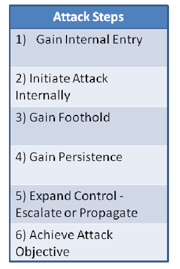

NIST IR 8011 Vol. 1 日本語訳
英語タイトル : Automation Support for Security Control Assessments: Volume 1: Overview日本語タイトル : セキュリティ管理策評価の自動化支援：第1巻：概要
公開日 : 2017-06-06
原文URL : https://csrc.nist.gov/pubs/ir/8011/v1/final
翻訳編集 : 自動生成（有志による非公式の日本語訳）, 原文取得日 : 2026-10-31, 訳文 : 874 / 875 ブロック
[要約] NIST IR 8011 Vol. 1 は、情報セキュリティ継続的モニタリング（ISCM）、継続的評価、継続的なセキュリティ認可を促進するために、システムと組織におけるセキュリティ管理策の評価を自動化するアプローチを示す、複数巻からなる報告書の概要の巻です。SP 800-53A を参照して管理策をより細かな部分（判定記述）に分け、各判定記述で評価される管理策項目をセキュリティ能力にまとめる考え方を導入します。判定記述を、達成すべきセキュリティ能力および SP 800-53 の管理策項目そのものと橋渡しするテスト可能な欠陥チェックを定め、望ましい状態と実際の状態を比較して自動評価を行うとしています。あわせて、評価計画の文書化、根本原因分析、役割と責任、NIST リスク管理フレームワークとの関係を扱います。
NISTIR 8011
Volume 1
NISTIR 8011
第1巻
Automation Support for Security Control Assessments
セキュリティ管理策評価の自動化支援
Volume 1: Overview
第1巻: 概要
Kelley Dempsey
Paul Eavy
George Moore
Kelley Dempsey
Paul Eavy
George Moore
This publication is available free of charge from:
https://doi.org/10.6028/NIST.IR.8011-1
本刊行物は次の URL から無料で入手できます:
https://doi.org/10.6028/NIST.IR.8011-1
［NIST のロゴ。公的な標章のため、この非公式サイトには掲載していません。原本 PDF を参照してください。］
NISTIR 8011
Volume 1
NISTIR 8011
第1巻
Automation Support for Security Control Assessments
セキュリティ管理策評価の自動化支援
Volume 1: Overview
第1巻: 概要
Kelley Dempsey
Computer Security Division
Information Technology Laboratory
Kelley Dempsey
Computer Security Division
Information Technology Laboratory
Paul Eavy
Federal Network Resilience Division
Department of Homeland Security
Paul Eavy
Federal Network Resilience Division
Department of Homeland Security
George Moore
Johns Hopkins University
Applied Physics Laboratory
George Moore
Johns Hopkins University
Applied Physics Laboratory
This publication is available free of charge from:
https://doi.org/10.6028/NIST.IR.8011-1
本刊行物は次の URL から無料で入手できます:
https://doi.org/10.6028/NIST.IR.8011-1
June 2017
2017年6月
U.S. Department of Commerce
Wilbur L. Ross, Jr., Secretary
米国商務省
Wilbur L. Ross, Jr. 長官
National Institute of Standards and Technology
Kent Rochford, Acting NIST Director and Under Secretary of Commerce for Standards and Technology
米国国立標準技術研究所（NIST）
Kent Rochford、NIST 所長代行兼商務次官（標準・技術担当）
National Institute of Standards and Technology Interagency Report 8011, Volume 1
93 pages (June 2017)
米国国立標準技術研究所 省庁間報告書 8011 第1巻
93ページ（2017年6月）
This publication is available free of charge from:
https://doi.org/10.6028/NIST.IR.8011-1
本刊行物は次の URL から無料で入手できます:
https://doi.org/10.6028/NIST.IR.8011-1
Certain commercial entities, equipment, or materials may be identified in this document in order to describe an experimental procedure or concept adequately. Such identification is not intended to imply recommendation or endorsement by NIST, nor is it intended to imply that the entities, materials, or equipment are necessarily the best available for the purpose.
本書では、実験的な手順や概念を適切に説明するために、特定の商業事業者、機器または資材を明示している場合があります。こうした明示は、NIST による推奨や支持を意味するものではなく、それらの事業者、資材または機器がその目的に照らして必ずしも最良であることを意味するものでもありません。
There may be references in this publication to other publications currently under development by NIST in accordance with its assigned statutory responsibilities. The information in this publication, including concepts and methodologies, may be used by federal agencies even before the completion of such companion publications. Thus, until each publication is completed, current requirements, guidelines, and procedures, where they exist, remain operative. For planning and transition purposes, federal agencies may wish to closely follow the development of new publications by NIST.
本刊行物では、NIST が割り当てられた法令上の責務に従って現在策定中の他の刊行物に言及している場合があります。概念や方法論を含む本刊行物の情報は、こうした関連刊行物が完成する前であっても、連邦機関によって利用される場合があります。したがって、各刊行物が完成するまでは、現行の要件、ガイドラインおよび手順が存在する場合には、それらが引き続き有効です。計画および移行のため、連邦機関は、NIST によるこれらの新しい刊行物の策定状況を注意深く追うことを検討してもよいです。
Organizations are encouraged to review all draft publications during public comment periods and provide feedback to NIST. Many NIST information security publications, other than the ones noted above, are available at http://csrc.nist.gov/publications.
組織は、パブリックコメント期間中にすべてのドラフト刊行物を確認し、NIST にフィードバックを提供することが推奨されています。上記以外にも、NIST の情報セキュリティ関連刊行物の多くが http://csrc.nist.gov/publications で入手できます。
Comments on this publication may be submitted to:
本刊行物へのコメントは、次の宛先に提出できます。
National Institute of Standards and Technology
Attn: Computer Security Division, Information Technology Laboratory
100 Bureau Drive (Mail Stop 8930) Gaithersburg, MD 20899-8930
Email: sec-cert@nist.gov
National Institute of Standards and Technology
Attn: Computer Security Division, Information Technology Laboratory
100 Bureau Drive (Mail Stop 8930) Gaithersburg, MD 20899-8930
Email: sec-cert@nist.gov
All comments are subject to release under the Freedom of Information Act (FOIA).
すべてのコメントは、情報自由法（FOIA）に基づく公開の対象となります。
Reports on Computer Systems Technology
コンピュータシステム技術に関する報告書
The Information Technology Laboratory (ITL) at the National Institute of Standards and Technology (NIST) promotes the U.S. economy and public welfare by providing technical leadership for the Nation’s measurement and standards infrastructure. ITL develops tests, test methods, reference data, proof-of-concept implementations, and technical analyses to advance the development and productive use of information technology. ITL’s responsibilities include the development of management, administrative, technical, and physical standards and guidelines for the cost-effective security and privacy of other than national security-related information in federal systems.
米国国立標準技術研究所（NIST）の情報技術研究所（ITL）は、国の計測・標準インフラに対する技術的なリーダーシップを提供することで、米国経済と公共の福祉を促進しています。ITL は、情報技術の開発と生産的な利用を進めるため、テスト、テスト手法、参照データ、概念実証実装および技術分析を開発しています。ITL の責務には、連邦システムにおける国家安全保障に関連しない情報のセキュリティとプライバシーを費用対効果の高い形で確保するための、管理上、行政上、技術上および物理的な標準およびガイドラインの策定が含まれます。
Abstract
概要
This volume introduces concepts to support automated assessment of most of the security controls in NIST Special Publication (SP) 800-53. Referencing SP 800-53A, the controls are divided into more granular parts (determination statements) to be assessed. The parts of the control assessed by each determination statement are called control items. The control items are then grouped into the appropriate security capabilities. As suggested by SP 800-53 Revision 4, security capabilities are groups of controls that support a common purpose. For effective automated assessment, testable defect checks are defined that bridge the determination statements to the broader security capabilities to be achieved and to the SP 800-53 security control items themselves. The defect checks correspond to security sub-capabilities—called sub-capabilities because each is part of a larger capability. Capabilities and sub-capabilities are both designed with the purpose of addressing a series of attack steps. Automated assessments (in the form of defect checks) are performed using the test assessment method defined in SP 800-53A by comparing a desired and actual state (or behavior).
本巻は、NIST Special Publication（SP）800-53 のセキュリティ管理策の大半について、その評価の自動化を支援する概念を紹介します。SP 800-53A を参照して、管理策は、評価される、より細かな部分（判定記述）に分割されます。各判定記述によって評価される管理策の部分を、管理策項目と呼びます。管理策項目は、次に、適切なセキュリティ能力にグループ化されます。SP 800-53 改訂第 4 版が示唆するとおり、セキュリティ能力とは、共通の目的を支える管理策のグループです。自動評価を有効にするため、判定記述を、達成すべきより広いセキュリティ能力および SP 800-53 のセキュリティ管理策項目そのものと橋渡しする、テスト可能な欠陥チェックが定義されます。欠陥チェックはセキュリティのサブ能力に対応します。それぞれがより大きな能力の一部であることから、サブ能力と呼ばれます。能力とサブ能力は、どちらも一連の攻撃ステップに対処する目的で設計されています。自動評価（欠陥チェックの形をとります）は、SP 800-53A で定義されたテスト評価方法を用いて、望ましい状態と実際の状態（または挙動）を比較することで実行されます。
Keywords
キーワード
actual state; assessment; assessment boundary; assessment method; authorization boundary; automated security control assessment; automation; capability; continuous diagnostics and mitigation; information security continuous monitoring; dashboard; defect; defect check; desired state specification; ISCM dashboard; mitigation; ongoing assessment; root cause analysis; security automation; security capability; security control; security control assessment; security control item.
実際の状態、評価、評価境界、評価方法、認可境界、自動化されたセキュリティ管理策評価、自動化、能力、継続的な診断と緩和、情報セキュリティ継続的モニタリング、ダッシュボード、欠陥、欠陥チェック、望ましい状態の仕様、ISCM ダッシュボード、緩和、継続的評価、根本原因分析、セキュリティ自動化、セキュリティ能力、セキュリティ管理策、セキュリティ管理策評価、セキュリティ管理策項目。
Acknowledgments
謝辞
The authors, Kelley Dempsey of the National Institute of Standards and Technology (NIST), Dr. George Moore of the Applied Physics Laboratory at Johns Hopkins University, and Paul Eavy of the Department of Homeland Security, wish to thank their colleagues who reviewed drafts of this document, including Nadya Bartol, Craig Chase, Ann Dixon, Terry Fletcher, Jim Foti, Susan Hansche, Amy Heydman, Alicia Jones, Betsy Kulick, Elizabeth Lennon, Susan Pagan, Daniel Portwood, Ron Ross, Martin Stanley, Kevin Stine, Robin Walker, David Waltermire, Kimberly Watson, and Jim Wiggins. The authors also gratefully acknowledge and appreciate the comments and contributions made by government agencies, private organizations, and individuals in providing direction and assistance in the development of this document.
著者である米国国立標準技術研究所（NIST）の Kelley Dempsey 氏、ジョンズ・ホプキンス大学応用物理研究所の George Moore 博士、国土安全保障省の Paul Eavy 氏は、本書のドラフトをレビューしてくれた同僚の皆様、とりわけ Nadya Bartol、Craig Chase、Ann Dixon、Terry Fletcher、Jim Foti、Susan Hansche、Amy Heydman、Alicia Jones、Betsy Kulick、Elizabeth Lennon、Susan Pagan、Daniel Portwood、Ron Ross、Martin Stanley、Kevin Stine、Robin Walker、David Waltermire、Kimberly Watson、Jim Wiggins の各氏に感謝します。著者はまた、本書の策定にあたり方向性と支援を提供してくださった政府機関、民間組織および個人の皆様から寄せられたコメントと貢献に、深く感謝いたします。
Table of Contents
目次
List of Figures
図の一覧
List of Tables
表の一覧
Executive Summary
エグゼクティブサマリー
Evolving threats create a challenge for organizations that design, implement, and operate complex systems containing many moving parts. The ability to assess all implemented information security controls as frequently as needed using manual procedural methods is impractical and unrealistic for most organizations due to the sheer size, complexity, and scope of their information technology footprint. Additionally, the rapid deployment of new technologies such as mobile, cloud, and social media brings with it new risks that make ongoing manual procedural assessments of all controls impossible for the vast majority of organizations. Today there is broad agreement in the information security community that once a system is in production, automation of security control assessments1 is needed to support and facilitate near real-time information security continuous monitoring (ISCM).
進化する脅威は、多くの可動部分を含む複雑なシステムを設計、実装、運用する組織に課題をもたらしています。実装済みのすべての情報セキュリティ管理策を、必要な頻度で手作業の手順による方法を用いて評価することは、情報技術環境の規模、複雑さおよび範囲が非常に大きいため、ほとんどの組織にとって実際的ではなく、現実的でもありません。さらに、モバイル、クラウド、ソーシャルメディアなどの新しい技術が急速に導入されることで新たなリスクが生じ、圧倒的多数の組織にとって、すべての管理策を手作業の手順で継続的に評価することは不可能になっています。現在、情報セキュリティコミュニティでは、システムが本番稼働した後は、ほぼリアルタイムの情報セキュリティ継続的モニタリング（ISCM）を支援し促進するために、セキュリティ管理策評価の自動化1が必要であるという点で、広く合意が得られています。
In September 2011, as part of Office of Management and Budget (OMB) memorandum M-11-33,2 OMB approved the transition from a static every-three-year security authorization process to an ongoing authorization process via ISCM. Also in September 2011, NIST published SP 800-137, Information Security Continuous Monitoring for Federal Information Systems and Organizations, which provided management-level guidance on developing an ISCM strategy and implementing an ISCM program. However, many federal organizations were finding the technical implementation to be challenging.
2011 年 9 月、行政管理予算局（OMB）は、OMB メモランダム M-11-332 の一環として、静的な 3 年ごとのセキュリティ認可プロセスから、ISCM による継続的な認可プロセスへの移行を承認しました。同月、NIST は SP 800-137『Information Security Continuous Monitoring for Federal Information Systems and Organizations』を刊行しました。この文書は、ISCM 戦略の策定と ISCM プログラムの実装について、管理レベルのガイダンスを提供しました。しかし、多くの連邦組織は、その技術的な実装が困難だと感じていました。
Recognizing this challenge, the United States Congress funded the Continuous Diagnostics and Mitigation (CDM) program in 2012 at the Department of Homeland Security (DHS). The DHS CDM program is designed to facilitate automated security control assessment and continuous monitoring that is consistent with NIST guidance by providing a robust, comprehensive set of monitoring tools, an ISCM dashboard, and implementation assistance.
この課題を認識して、米国議会は 2012 年に、国土安全保障省（DHS）の継続的な診断と緩和（CDM）プログラムに資金を提供しました。DHS の CDM プログラムは、堅牢で包括的な一連のモニタリングツール、ISCM ダッシュボード、実装支援を提供することで、NIST のガイダンスと整合した、セキュリティ管理策評価と継続的モニタリングの自動化を促進するように設計されています。
In November 2013 OMB issued Memorandum M-14-03,3 which provided instructions and deadlines to federal organizations for development of an ISCM strategy and program. M-14-03 stated that each organization may follow one of three approaches for ISCM: 1) develop its own ISCM program; 2) leverage the CDM program from DHS; or 3) establish a hybrid program between its own ISCM program and the DHS CDM program.
2013 年 11 月に OMB はメモランダム M-14-033 を発行し、連邦組織に対し、ISCM 戦略とプログラムの策定に関する指示と期限を示しました。M-14-03 は、各組織が ISCM について次の 3 つのアプローチのいずれかをとってよいと述べています。1）独自の ISCM プログラムを策定する、2）DHS の CDM プログラムを活用する、3）独自の ISCM プログラムと DHS の CDM プログラムを組み合わせたプログラムを確立する。
This NIST Interagency Report (NISTIR) supports all three of the ISCM approaches in M-14-03 and represents a joint effort between NIST and DHS to provide an operational approach for automating assessments of the selected and implemented security controls from SP 800-53 that is also consistent with the guidance in SP 800-53A.
本 NIST 省庁間報告書（NISTIR）は、M-14-03 の ISCM の 3 つのアプローチのすべてを支援するものであり、SP 800-53 から選択され実装されたセキュリティ管理策の評価を自動化するための、SP 800-53A のガイダンスとも整合した運用上のアプローチを提供する、NIST と DHS の共同の取り組みを表しています。
Organizations implementing ISCM and automating security control assessments using the methods described herein are encouraged to share the results with both NIST and DHS so that lessons learned can be shared broadly. If needed, this document will be revised and/or supplemented to document such best practices.
ISCM を実装し、ここに記載する方法を用いてセキュリティ管理策評価を自動化する組織は、得られた教訓を広く共有できるよう、その結果を NIST と DHS の両方に共有することが推奨されています。必要に応じて、本書はそうしたベストプラクティスを文書化するために改訂または補足されます。
1. Introduction
1. はじめに
1.1 Purpose and Scope
1.1 目的と範囲
The purpose of this NISTIR is to provide an approach for automating the assessment of security controls in systems and organizations to facilitate information security continuous monitoring, ongoing assessment, and ongoing security authorizations.
本 NISTIR の目的は、情報セキュリティ継続的モニタリング、継続的評価および継続的なセキュリティ認可を促進するために、システムと組織におけるセキュリティ管理策の評価を自動化するアプローチを提供することです。
Automating security control assessments is important because security threats are materializing at an accelerated pace. Automated assessments have the potential to provide more timely data about security control defects (i.e., the absence or failure of a control), better enabling organizations to respond before vulnerabilities are exploited. Additionally, automated security control assessment has the potential to be less expensive and less human resource-intensive than manual procedural testing. Any realized savings could free up resources to be used on other activities, for example, investing in additional safeguards or countermeasures, or responding to security defects and incidents in a more timely manner.
セキュリティ管理策評価の自動化は、セキュリティ上の脅威が加速的に現実のものとなっていることから重要です。自動評価は、セキュリティ管理策の欠陥（すなわち管理策の欠如または機能不全）に関して、よりタイムリーなデータを提供し、脆弱性が悪用される前に組織が対応できるようにする可能性があります。加えて、自動化されたセキュリティ管理策評価は、手作業の手順によるテストよりも費用が安く、人的リソースの負担が小さくなる可能性があります。実現した節約分は、たとえば追加の保護措置や対策への投資、セキュリティ上の欠陥やインシデントへのよりタイムリーな対応など、他の活動に使えるリソースを生み出す可能性があります。
There are potentially many ways to automate the assessment of security controls to determine their effectiveness. The approach detailed in this NISTIR, while not required, provides a comprehensive method for automated security control assessments.
セキュリティ管理策の有効性を判断するために評価を自動化する方法は、多数あると考えられます。本 NISTIR で詳述するアプローチは、必須ではありませんが、自動化されたセキュリティ管理策評価のための包括的な方法を提供します。
The transition from manual to automated security control assessment requires time and preparation to implement a data collection system that supports automated security control assessments, as well as an information security continuous monitoring (ISCM) dashboard to visualize assessment results. Automated security control assessment also requires resources to modify and update the assessment process. The Department of Homeland Security (DHS) Continuous Diagnostics and Mitigation (CDM) program is an example of an ISCM implementation that is designed to help federal organizations implement a robust data collection system and ISCM dashboard at the agency level.4 This NISTIR supports the transition to automated security control assessments by providing a customizable approach to automated security control assessments and development of a security assessment plan that is consistent with both NIST guidance and the DHS CDM program.
手作業から自動化されたセキュリティ管理策評価への移行には、自動化されたセキュリティ管理策評価を支えるデータ収集システムと、評価結果を可視化する情報セキュリティ継続的モニタリング（ISCM）ダッシュボードを実装するための時間と準備が必要です。自動化されたセキュリティ管理策評価には、評価プロセスを修正し更新するためのリソースも必要です。国土安全保障省（DHS）の継続的な診断と緩和（CDM）プログラムは、連邦組織が機関レベルで堅牢なデータ収集システムと ISCM ダッシュボードを実装するのを支援するように設計された、ISCM 実装の一例です。4 本 NISTIR は、NIST のガイダンスと DHS の CDM プログラムの両方と整合した、自動化されたセキュリティ管理策評価とセキュリティ評価計画の策定に向けた、カスタマイズ可能なアプローチを提供することで、自動化されたセキュリティ管理策評価への移行を支援します。
Organizations have the flexibility to innovate and find improved automated security control assessment approaches. When new assessment approaches are found, organizations are encouraged to share such approaches with other organizations by documenting and sending the new approaches to sec-cert@nist.gov. Such feedback is used to improve NISTIR 8011 and the ISCM implementation process overall.
組織には、革新して、より優れた自動化されたセキュリティ管理策評価のアプローチを見つける柔軟性があります。新しい評価アプローチを見つけた場合、組織は、その新しいアプローチを文書化して sec-cert@nist.gov に送ることで、他の組織と共有することが推奨されています。こうしたフィードバックは、NISTIR 8011 と ISCM の実装プロセス全体の改善に使われます。
This document, Volume 1 of NISTIR 8011, provides an overview of the approach to the automation of security controls assessments. Future volumes, to be released separately, identify and address each of the security capabilities identified below.
本書、すなわち NISTIR 8011 の第 1 巻は、セキュリティ管理策評価の自動化のアプローチの概要を示します。今後別途公開される各巻では、以下に示す各セキュリティ能力を特定し、扱います。
The ISCM security capabilities defined in this NISTIR represent sets of security controls logically grouped to fulfill a specific security purpose and to facilitate automated security control assessments. The ISCM capabilities are not a definitive set of security capabilities and are in no way intended to limit the flexibility of an organization to define different or additional capabilities.5 The following are the ISCM security capabilities for which additional volumes will be published:6
本 NISTIR で定義する ISCM セキュリティ能力は、特定のセキュリティ上の目的を果たし、自動化されたセキュリティ管理策評価を促進するために論理的にグループ化されたセキュリティ管理策の集合を表します。ISCM 能力は、セキュリティ能力の確定的な集合ではなく、組織が異なる能力や追加の能力を定義する柔軟性を決して制限するものではありません。5 次に、追加の巻が刊行される予定の ISCM セキュリティ能力を示します。6
Volume 2 Hardware Asset Management
Volume 3 Software Asset Management
Volume 4 Configuration Settings Management
Volume 5 Vulnerability Management
Volume 6 Boundary Management (Physical, Filters, and Other Boundaries)
Volume 7 Trust Management
Volume 8 Security-Related Behavior Management
Volume 9 Credentials and Authentication Management
Volume 10 Privilege and Account Management
Volume 11 Event (Incident and Contingency) Preparation Management
Volume 12 Anomalous Event Detection Management
Volume 13 Anomalous Event Response and Recovery Management
第2巻 ハードウェア資産管理
第3巻 ソフトウェア資産管理
第4巻 構成設定管理
第5巻 脆弱性管理
第6巻 境界管理（物理、フィルター、その他の境界）
第7巻 トラスト管理
第8巻 セキュリティ関連の行動の管理
第9巻 資格情報および認証の管理
第10巻 権限・アカウント管理
第11巻 イベント（インシデントおよびコンティンジェンシー）準備管理
第12巻 異常イベント検知管理
第13巻 異常イベントの対応および復旧管理
This overview volume provides a definition of the terms and overall processes that are common to automated security control assessment for ISCM security capabilities. Specific details regarding automated assessments of the capability and associated security controls are provided in the volumes covering the ISCM security capabilities.
この概要の巻は、ISCM セキュリティ能力の自動化されたセキュリティ管理策評価に共通する用語と全体的なプロセスの定義を提供します。能力と関連するセキュリティ管理策の自動評価に関する具体的な詳細は、ISCM セキュリティ能力を扱う各巻で示します。
1.2 Target Audience
1.2 想定読者
This interagency report serves individuals associated with the design, development, implementation, operation, maintenance, and auditing of organizational information security continuous monitoring programs and security control assessment and authorization programs, including individuals with the following responsibilities:
本省庁間報告書は、組織の情報セキュリティ継続的モニタリングプログラムならびにセキュリティ管理策評価・認可プログラムの設計、開発、実装、運用、保守および監査に関わる個人を対象とします。これには、次の責任を持つ個人が含まれます。
•System development and integration (e.g., program managers, information technology product developers, system developers, system integrators, enterprise architects, information security architects);
•システムの開発と統合（たとえば、プログラムマネージャー、情報技術製品の開発者、システム開発者、システムインテグレーター、エンタープライズアーキテクト、情報セキュリティアーキテクト）
•System and/or security management/oversight (e.g., senior leaders, risk executives, authorizing officials, chief information officers, senior information security officers);
•システムまたはセキュリティの管理／監督（たとえば、上級リーダー、リスクエグゼクティブ、認可責任者、最高情報責任者、上級情報セキュリティ責任者）
•System and security control assessment and monitoring (e.g., system evaluators, assessors/assessment teams, independent verification and validation assessors, auditors, system owners); and
•システムとセキュリティ管理策の評価およびモニタリング（たとえば、システム評価者、評価者／評価チーム、独立検証・妥当性確認の評価者、監査人、システムオーナー）
•Information security implementation and operations (e.g., system owners, common control providers, information owners/stewards, mission/business owners, information security architects, system security engineers/officers, system/network/database administrators).
•情報セキュリティの実装と運用（たとえば、システムオーナー、共通管理策の提供者、情報オーナー／スチュワード、ミッション／事業オーナー、情報セキュリティアーキテクト、システムセキュリティエンジニア／担当者、システム／ネットワーク／データベース管理者）
Note that this interagency report assumes that the reader has a working knowledge of the NIST Risk Management Framework (RMF) in general and specifically NIST Special Publications (SPs) 800-30, 800-39, 800-37, 800-53, 800-53A, and 800-137.
本省庁間報告書は、読者が NIST リスク管理フレームワーク（RMF）全般、特に NIST Special Publication（SP）800-30、800-39、800-37、800-53、800-53A および 800-137 の実務的な知識を持っていることを前提としています。
This publication assumes that the target audience has a working knowledge of information technology and information security terms and best practices. For definitions of unfamiliar terms, please see Appendix B of this volume or NISTIR 7298, Glossary of Key Information Security Terms.
本刊行物は、想定読者が情報技術と情報セキュリティの用語およびベストプラクティスの実務的な知識を持っていることを前提としています。なじみのない用語の定義については、本巻の付録 B または NISTIR 7298『Glossary of Key Information Security Terms』を参照してください。
1.3 Organization of Volume 1
1.3 第1巻の構成
The remainder of this publication is organized as follows:
本刊行物の残りの部分は、次のように構成されています。
Section 2, Overview of an Automated Security Control Assessment Process, describes how existing manual security control assessments can be adapted to an automated assessment approach and addresses concerns about the automation of security control assessment methods.
第2節「自動化されたセキュリティ管理策評価プロセスの概要」では、既存の手作業によるセキュリティ管理策評価を自動評価のアプローチに適合させる方法を説明し、セキュリティ管理策評価方法の自動化に関する懸念に対処します。
Section 3, Focusing Security Control Assessments on Security Results, describes the grouping of security controls by purpose (ISCM security capability) that facilitates automated security control assessments.
第3節「セキュリティ管理策評価をセキュリティの成果に集中させる」では、自動化されたセキュリティ管理策評価を促進する、目的（ISCM セキュリティ能力）によるセキュリティ管理策のグループ化を説明します。
Section 4, Using Actual State and Desired State Specification to Detect Defects, defines the requisite preparation for automated security control assessment and describes how the process is able to determine the actual state and desired state specification so that it can compare those states.
第4節「実際の状態と望ましい状態の仕様を用いた欠陥の検出」では、自動化されたセキュリティ管理策評価に必要な準備を定義し、実際の状態と望ましい状態の仕様を決定してそれらの状態を比較できるようにする方法を説明します。
Section 5, Defect Checks, describes the concept of a defect check.
第5節「欠陥チェック」では、欠陥チェックの概念を説明します。
Section 6, Assessment Plan Documentation, introduces the documentation produced for each security capability.
第6節「評価計画の文書化」では、各セキュリティ能力について作成される文書を紹介します。
Section 7, Root Cause Analysis, describes root cause analysis of a security control issue, a defect check failure, or a failure of a security capability to produce the desired overall security result.
第7節「根本原因分析」では、セキュリティ管理策の問題、欠陥チェックの失敗、またはセキュリティ能力が望ましい全体的なセキュリティの成果を生み出せないことの根本原因分析を説明します。
Section 8, Roles and Responsibilities, describes operational roles and responsibilities and contrasts them with system security managerial roles and responsibilities in NIST Special Publications.
第8節「役割と責任」では、運用上の役割と責任を説明し、それらを NIST Special Publication におけるシステムセキュリティの管理上の役割と責任と対比します。
Section 9, Relationship of Automated Security Control Assessment to the NIST Risk Management Framework, describes the tasks and function of automated ISCM within the Assessment phase of the RMF.
第9節「自動化されたセキュリティ管理策評価と NIST リスク管理フレームワークの関係」では、RMF の評価フェーズにおける自動化された ISCM のタスクと機能を説明します。
2. Overview of an Automated Security Control Assessment Process
2. 自動化されたセキュリティ管理策評価プロセスの概要
Attacks on systems are being perpetrated at an accelerating pace. A security defect (i.e., control failure or absence) that is useful to an attacker is likely to be exploited very quickly because most attackers use automated attack methods. At the same time, many organizations employ at least some manual defect detection methods (i.e., security control assessment methods) and security-related information (i.e., defect data) analysis methods. The result is that many organizations will likely never have the capacity to detect and respond to high volumes of security defects faster than attackers can detect and exploit one or more of those defects. This is because human beings simply cannot detect and process the volume and velocity of security-related information that must be monitored and analyzed, nor can the desired degree of assessment completeness be achieved. Also, manual security control assessment is often more expensive and resource-intensive over the long term than automated assessment (e.g., consider what it would cost to detect unpatched devices manually, compared to the cost of using a vulnerability scanner).
システムに対する攻撃は、加速的なペースで行われています。攻撃者にとって有用なセキュリティ上の欠陥（すなわち管理策の機能不全または欠如）は、ほとんどの攻撃者が自動化された攻撃手法を用いるため、非常に速く悪用される可能性が高くなります。同時に、多くの組織は、少なくとも一部で、手作業による欠陥検出方法（すなわちセキュリティ管理策評価方法）とセキュリティ関連情報（すなわち欠陥データ）の分析方法を用いています。その結果、多くの組織は、攻撃者がそれらの欠陥の 1 つ以上を検出して悪用するよりも速く、大量のセキュリティ上の欠陥を検出し対応する能力を持てない可能性が高くなります。これは、モニタリングし分析しなければならないセキュリティ関連情報の量と速度を、人間が検出し処理することは単純に不可能であり、望ましい程度の評価の網羅性も達成できないためです。また、手作業によるセキュリティ管理策評価は、長期的には自動評価よりも費用が高く、リソースを多く要することがよくあります（たとえば、パッチが適用されていないデバイスを手作業で検出するのに要する費用と、脆弱性スキャナーを使う費用を比較して考えてください）。
This section discusses how existing manual security control assessments can be adapted to an automated security control assessment process. It also offers solutions to concerns about the automation of security control assessment methods.
本節では、既存の手作業によるセキュリティ管理策評価を、自動化されたセキュリティ管理策評価プロセスに適合させる方法を論じます。また、セキュリティ管理策評価方法の自動化に関する懸念への解決策も示します。
2.1 Prerequisites to Automated Security Control Assessment
2.1 自動化されたセキュリティ管理策評価の前提条件
The security control assessment process presented in this NISTIR is designed to be used after the initial assessment and authorization (A&A)7 is completed. While some results from automated security control assessments might be applicable for a system’s initial assessment, this document focuses on the subsequent security control assessments that are embedded in the information security continuous monitoring (ISCM) process for systems in the operations and maintenance phase of the system development life cycle.
本 NISTIR で示すセキュリティ管理策評価プロセスは、最初の評価・認可（A&A）7が完了した後に使用するように設計されています。自動化されたセキュリティ管理策評価の結果の一部は、システムの最初の評価に適用できる場合がありますが、本書は、システム開発ライフサイクルの運用・保守フェーズにあるシステムについて、情報セキュリティ継続的モニタリング（ISCM）プロセスに組み込まれる、その後のセキュリティ管理策評価に焦点を当てます。
As a corollary to the assumption that an initial A&A was conducted consistent with SP 800-37 and related guidance, there is an assumption that the system(s) being assessed have the normal complement of security documentation, including the system security plan, the initial (or most current) security assessment report, and supporting documents such as the system contingency plan.
最初の A&A が SP 800-37 および関連ガイダンスに沿って実施されたという前提の系として、評価対象のシステムには、システムセキュリティ計画、最初の（または最新の）セキュリティ評価報告書、システムコンティンジェンシー計画などの裏付け文書を含む、通常のセキュリティ文書一式があるものと想定します。
This NISTIR focuses on automation of the assessment of security controls selected for each impact level baseline, as defined in SP 800-53. More information on the automated assessment of specific security controls is found in the security capability volumes. If a system’s tailored baseline includes additional security controls not selected in SP 800-53 baselines (i.e., security control supplementation), those security controls may not be covered in this NISTIR. Manual/procedural methods are applied to assess such controls and the manually generated, security-related information is considered when making risk-based decisions.
本 NISTIR は、SP 800-53 で定義されている、各影響度レベルのベースラインで選択されたセキュリティ管理策の評価の自動化に焦点を当てています。特定のセキュリティ管理策の自動評価に関する詳細は、セキュリティ能力の各巻に記載されています。システムの調整済みベースラインに、SP 800-53 のベースラインでは選択されていない追加のセキュリティ管理策（すなわちセキュリティ管理策の追加）が含まれる場合、それらの管理策は本 NISTIR で扱われないことがあります。そのような管理策の評価には手作業／手順による方法が適用され、手作業で生成されたセキュリティ関連情報は、リスクに基づく判断を行う際に考慮されます。
2.2 Automating the Test Assessment Method
2.2 テスト評価方法の自動化
Following the initial system security authorization, security control assessments are conducted on an ongoing basis to ensure that implemented security controls are effective and continue to be effective in the operational environment. The assessment method is based on the continuous monitoring strategy developed by the organization, system owner, and/or common control provider and is approved by the authorizing official. Information on how to plan security control assessments is detailed in SP 800-53A, Assessing Security and Privacy Controls in Systems and Organizations: Building Effective Assessment Plans.
最初のシステムセキュリティ認可の後、実装されたセキュリティ管理策が有効であり、運用環境でも引き続き有効であることを確実にするために、セキュリティ管理策評価が継続的に実施されます。評価方法は、組織、システムオーナーまたは共通管理策の提供者が策定した継続的モニタリング戦略に基づいており、認可責任者によって承認されます。セキュリティ管理策評価の計画方法に関する情報は、SP 800-53A『Assessing Security and Privacy Controls in Systems and Organizations: Building Effective Assessment Plans』に詳述されています。
Assessment methods define the nature of the assessor actions and include Examine, Interview, and Test. Table 1: SP 800-53A Assessment Methods, provides the definition of each assessment method. The organization uses the results of each assessment method to support the determination of security control existence, functionality, correctness, completeness,8 and potential for improvement over time.
評価方法は、評価者の行動の性質を定義するもので、調査（Examine）、面接（Interview）およびテスト（Test）が含まれます。表1: SP 800-53A の評価方法は、各評価方法の定義を示します。組織は、各評価方法の結果を用いて、セキュリティ管理策の存在、機能性、正確性、完全性8、および時間の経過に伴う改善の可能性の判断を支援します。
Table 1: SP 800-53A Assessment Methods
表1: SP 800-53A の評価方法
| Method | Definitiona |
|---|---|
| Examine | The process of checking, inspecting, reviewing, observing, studying, or analyzing one or more assessment objects to facilitate understanding, achieve clarification, or obtain evidence. |
| Interview | The process of conducting discussions with individuals or groups within an organization to facilitate understanding, achieve clarification, or lead to the location of evidence. |
| Test | The process of exercising one or more assessment objects under specified conditions to compare actual with expected behavior. |
| 方法 | 定義a |
|---|---|
| 調査（Examine） | 理解を促進し、明確化を図り、または証拠を得るために、1 つ以上の評価対象を確認、点検、レビュー、観察、検討または分析するプロセス。 |
| 面接（Interview） | 理解を促進し、明確化を図り、または証拠の所在を突き止めるために、組織内の個人またはグループと議論を行うプロセス。 |
| テスト（Test） | 実際の挙動と期待される挙動を比較するために、1 つ以上の評価対象を、指定された条件下で動作させるプロセス。 |
a SP 800-53A, Appendix D
a SP 800-53A, Appendix D
The TEST assessment method is usually the easiest and most effective to automate and, when automated, provides more accurate results.
テスト（TEST）評価方法は、通常、自動化するのが最も容易で最も効果的であり、自動化すると、より正確な結果が得られます。
A technical implementation of an ISCM program, like the DHS CDM program, uses the Test assessment method wherever it is applicable. Assessment via Test is generally the easiest and most effective assessment method to automate. Moreover, use of the automated Test method may provide more accurate and repeatable results when constructed and implemented correctly. Thus, it may be appropriate to employ the Test assessment method as the sole assessment method for many controls. It is more difficult to automate the Examine and Interview assessment methods, as those methods require people. However, organizations might employ the Examine or Interview methods for root cause analysis of control failures (discussed in Section 7.2, Root Cause Analysis) or if greater assurance, depth, or coverage is needed.
DHS の CDM プログラムのような ISCM プログラムの技術的な実装では、適用可能な場合にはいつでもテスト評価方法を用います。テストによる評価は、一般に、自動化するのが最も容易で最も効果的な評価方法です。さらに、自動化されたテスト方法の使用は、正しく構築され実装されれば、より正確で再現可能な結果をもたらす可能性があります。したがって、多くの管理策について、テスト評価方法を唯一の評価方法として用いることが適切な場合があります。調査と面接の評価方法は、人を必要とするため、自動化がより困難です。ただし、組織は、管理策の機能不全の根本原因分析（第7.2節「根本原因分析」で論じます）のため、またはより高い保証、深さ、範囲が必要な場合に、調査または面接の方法を用いることがあります。
2.2.1 Terms for Referring to Assessment Objects
2.2.1 評価対象を指す用語
This document generally uses the term assessment object. The meaning of assessment object as used herein is equivalent to the glossary definition but is focused on what could potentially have a security defect. Thus, as used in this NISTIR, the term assessment object more specifically refers to the following:
本書では、一般に評価対象という用語を使います。ここで使う評価対象の意味は、用語集の定義と同等ですが、セキュリティ上の欠陥を持つ可能性があるものに焦点を当てています。したがって、本 NISTIR で使う評価対象という用語は、より具体的には次のものを指します。
Anything that can have a security defect (i.e., failed or absent control). Examples include devices, software, people, credentials, accounts, privileges, and things to which privileges are granted (including data and physical facilities).
セキュリティ上の欠陥（すなわち管理策の機能不全または欠如）を持ちうるあらゆるもの。例として、デバイス、ソフトウェア、人、資格情報、アカウント、権限、および権限が付与される対象（データと物理的な施設を含む）があります。
Assessment object is a general concept and used where generality is implied. However, in the context of a specific capability (or group of capabilities), it may be clearer to use a more specific term. Many capabilities focus on assessment objects with defects. Hardware Asset Management (HWAM) and Software Asset Management (SWAM) are examples of capabilities with such a focus. In referring to such assessment objects, the term asset may be used (e.g., assets with defects).
評価対象は一般的な概念であり、一般性を含意する場合に使います。ただし、特定の能力（または能力のグループ）の文脈では、より具体的な用語を使うほうが明確な場合があります。多くの能力は、欠陥を持つ評価対象に焦点を当てています。ハードウェア資産管理（HWAM）とソフトウェア資産管理（SWAM）は、そのような焦点を持つ能力の例です。そのような評価対象を指す場合、資産という用語を使うことがあります（たとえば、欠陥を持つ資産）。
Most specific capabilities focus on specific assessment object types. HWAM focuses exclusively on defects in and around devices, for example. Because this volume often uses examples from the HWAM capability volume, it often uses the term devices when referring to defects in that context.
ほとんどの特定の能力は、特定の種類の評価対象に焦点を当てています。たとえば HWAM は、デバイスとその周辺の欠陥だけに焦点を当てます。本巻では HWAM 能力の巻の例をよく使うため、その文脈の欠陥を指す場合には、デバイスという用語をよく使います。
For the purposes of this NISTIR, all hardware assets (assessment objects) are devices, but not all devices are assessment objects. For example, a chip on a circuit board is a device and an asset, but in the HWAM context, it is not at an abstraction level of focus. Likewise, automated security control assessment does not focus on a device’s keyboard, mouse, and monitor, per se, as such mechanisms are just part of the larger device (or assessment object) being assessed. However, property systems might count them as separate assets.
本 NISTIR では、すべてのハードウェア資産（評価対象）はデバイスですが、すべてのデバイスが評価対象であるわけではありません。たとえば、回路基板上のチップはデバイスであり資産ですが、HWAM の文脈では、焦点を当てる抽象度のレベルにありません。同様に、自動化されたセキュリティ管理策評価は、デバイスのキーボード、マウス、モニターそのものには焦点を当てません。そうした機構は、評価されるより大きなデバイス（または評価対象）の一部にすぎないためです。ただし、資産管理システムでは、それらを個別の資産として数える場合があります。
2.3 Factors for Determining When to Trust Automated Ongoing Assessments
2.3 自動化された継続的評価を信頼できる時期を判断する要因
Automating the appropriate assessment method should be used for assessing security controls at the point that automated security control assessment functionality has an equal or higher probability of detecting defects compared to traditional methods in use. The two factors that contribute most to defect detection are:
自動化されたセキュリティ管理策評価機能が、従来使用されている方法と比べて同等以上の確率で欠陥を検出できる時点で、適切な評価方法の自動化をセキュリティ管理策の評価に用いるべきです。欠陥の検出に最も寄与する要因は次の 2 つです。
•The completeness of automated security control assessment; and
•自動化されたセキュリティ管理策評価の網羅性
•The timeliness of automated security control assessment.
•自動化されたセキュリティ管理策評価の適時性
Completeness means that the automated security control assessment is conducted for all defect checks9 and on all assessment objects that could have the defect. Although 100 percent completeness might not be attained, as automated security control assessment approaches 100 percent completeness the probability of missing defects approaches zero.
網羅性とは、自動化されたセキュリティ管理策評価が、すべての欠陥チェック9に対して、またその欠陥を持ちうるすべての評価対象に対して実施されることを意味します。100 パーセントの網羅性は達成できないかもしれませんが、自動化されたセキュリティ管理策評価が 100 パーセントの網羅性に近づくにつれて、欠陥を見逃す確率はゼロに近づきます。
Timeliness means that each cycle of tests on the defect-assessment object combinations assessed occurs at least as often as the frequency specified in the ISCM strategy. Initially, the specified frequency may merely be faster or more frequent than in the past. However, as the automated security control assessment functionality matures, the frequency should be often enough that the automated security control assessment system finds (and allows time for a response to) a high percentage of defects before an adversary can exploit them.
適時性とは、評価される欠陥と評価対象の各組合せについて、テストの各サイクルが少なくとも ISCM 戦略で指定された頻度で実施されることを意味します。当初、指定頻度は、過去より単に速い、または頻繁であればよい場合があります。しかし、自動化されたセキュリティ管理策評価機能が成熟するにつれて、自動化されたセキュリティ管理策評価システムが、敵対者による悪用前に高い割合の欠陥を発見し、対応する時間も確保できる程度の頻度にすべきです。
Consequently, as part of the risk management process and ISCM strategy, the organization determines the degree of completeness and timeliness required before it replaces manual/procedural assessments with an automated security control assessment system. The ISCM dashboard (discussed in the following section) provides maturity metrics to help assess this readiness.
したがって、組織は、リスク管理プロセスと ISCM 戦略の一環として、手作業／手順による評価を自動化されたセキュリティ管理策評価システムに置き換える前に、必要な網羅性と適時性の程度を決定します。ISCM ダッシュボード（次の節で説明します）は、この準備状況を評価するのに役立つ成熟度指標を提供します。
Automated security control assessment is adequate to replace manual/procedural security control assessment as soon as it is:
自動化されたセキュリティ管理策評価は、次の条件を満たす時点で、手作業／手順によるセキュリティ管理策評価の置き換えに十分となります。
•At least as timely; and
•少なくとも同程度に適時であり、かつ
•At least as complete
•少なくとも同程度に網羅的である
as the manual/procedural assessments for the capabilities being covered (and their related security controls).
対象となる能力（および関連するセキュリティ管理策）に対する手作業／手順による評価と比べて。
2.4 An Automated Security Control Assessment Program: ISCM
2.4 自動化されたセキュリティ管理策評価プログラム: ISCM
Figure 1: Overview of an Automated Security Control Assessment Process, provides a functional diagram of an automated security assessment process. This diagram represents the major steps for implementing an ISCM automated security control assessment process. As described in Section 1.3, Organization of Volume 1, the sections of this document are organized to explain each part of the diagram.
図1: 自動化されたセキュリティ管理策評価プロセスの概要は、自動化されたセキュリティ評価プロセスの機能図を示します。この図は、ISCM の自動化されたセキュリティ管理策評価プロセスを実装する主要なステップを表しています。第1.3節「第1巻の構成」で説明したとおり、本書の各節は、この図の各部分を説明するように構成されています。
![Flowchart titled "Overview of the ISCM Ongoing Assessment Process". It starts at "SP 800-53" (Notional Start), which leads to a hexagon "Purposes (Define Capabilities)" labeled "§ 3.1– § 3.4". From there, arrows labeled "§ 4.1– § 4.4" lead to two boxes: "Collect Actual State" and "Define Desired State Specification". Both feed into "Compare Differences" (§ 4.5 & § 5), followed by "Prioritize" (Table 3, Ring 1), "Display/Dash" (§ 9.1 (task 4-3)) and "Respond" (§ 7 & § 9.1 (task 4-4)*), labeled Notional Finish. From Respond, blue response arrows "Change Actual State" return to Collect Actual State, "Change Desired State" returns to Define Desired State Specification, and a loop "Accept Risk†" returns to Respond. A separate document "Define Assessment Plan" (§ 6 & § 9.1) leads to "Define Assessment Plan Results" (§ 9.1(task 4-3)), which also receives a grey documentation arrow from Display/Dash. Two assumption boxes: "Assumption: In security control assessment, once the ISCM program is established, all activities are done concurrently." and "Assumption: The objective is to respond to identified risks, not simply generate a security assessment report." Legend: Assessment Date (black arrow), Documentation (grey arrow), Response (blue arrow). Notes: "* See also example responses with each defect check, e.g., Table 15." "† Accept risk means temporarily or permanently deferring mitigation."](assets/ir-8011v1/p0020-figure-01.png)
「Overview of the ISCM Ongoing Assessment Process」（ISCM 継続的評価プロセスの概要）と題した流れ図です。「SP 800-53」（概念上の開始点）から六角形の「Purposes (Define Capabilities)」（目的（能力の定義）、§ 3.1– § 3.4）へ進みます。そこから「§ 4.1– § 4.4」の矢印で「Collect Actual State」（実際の状態の収集）と「Define Desired State Specification」（望ましい状態の仕様の定義）に分かれ、両者が「Compare Differences」（差異の比較、§ 4.5 & § 5）に入ります。その後、「Prioritize」（優先順位付け、Table 3, Ring 1）、「Display/Dash」（表示／ダッシュボード、§ 9.1 (task 4-3)）、「Respond」（対応、§ 7 & § 9.1 (task 4-4)*、概念上の終了点）と続きます。Respond からは、青色の対応矢印が「Change Actual State」（実際の状態の変更）として Collect Actual State へ、「Change Desired State」（望ましい状態の変更）として Define Desired State Specification へ戻り、「Accept Risk†」（リスクの受容）のループが Respond へ戻ります。別の「Define Assessment Plan」（評価計画の定義、§ 6 & § 9.1）という文書から「Define Assessment Plan Results」（評価計画結果の定義、§ 9.1(task 4-3)）へ進み、Display/Dash からも文書化を示す灰色の矢印が入ります。前提の枠が2つあります。1つは「セキュリティ管理策評価では、ISCM プログラムの確立後、すべての活動を並行して行う」という前提で、もう1つは「目的は特定されたリスクに対応することであり、単にセキュリティ評価報告書を生成することではない」という前提です。凡例は、Assessment Data（評価データ、黒色の矢印）、Documentation（文書化、灰色の矢印）、Response（対応、青色の矢印）です。注記は「* 各欠陥チェックに付された対応例（例: Table 15）も参照」「† リスクの受容とは、緩和を一時的または恒久的に延期することを意味する」です。
Figure 1: Overview of an Automated Security Control Assessment Process
図1: 自動化されたセキュリティ管理策評価プロセスの概要
2.5 Preparing for Automated Security Control Assessments
2.5 自動化されたセキュリティ管理策評価の準備
To effectively automate security control assessments, the following prerequisites must be met:
セキュリティ管理策評価を効果的に自動化するには、次の前提条件を満たさなければなりません。
•Machine-readable actual state and actual behavior are recorded in data;
•機械可読な実際の状態と実際の挙動がデータに記録されています。
•Machine-readable desired/expected state/behavior specifications (readily comparable to the actual state) are defined and recorded in data;
•機械可読な望ましい／期待される状態／挙動の仕様（実際の状態と容易に比較できるもの）が定義され、データに記録されています。
•A method to compute/identify defects (differences between desired and actual state/behavior) is defined;
•欠陥（望ましい状態／挙動と実際の状態／挙動との差異）を計算／特定する方法が定義されています。
•A method for producing a human-readable security assessment report to facilitate analysis and risk-based decision making is defined;
•分析とリスクに基づく判断を促進する、人間が読めるセキュリティ評価報告書を作成する方法が定義されています。
•An organizational threshold for completeness of defect checks is set; and
•欠陥チェックの網羅性に関する組織のしきい値が設定されています。
•An organizational threshold for timeliness of defect checks is set.
•欠陥チェックのタイムリーさに関する組織のしきい値が設定されています。
When the prerequisites are met, the automated security control assessment system (as part of the ISCM dashboard) can automatically compute the following:
前提条件が満たされると、自動化されたセキュリティ管理策評価システム（ISCM ダッシュボードの一部として）は、次の事項を自動的に計算できます。
•Where differences between the desired state specification and the actual state (defects) occur;
•望ましい状態の仕様と実際の状態との差異（欠陥）が生じている箇所
•The priority of each defect;10 and
•各欠陥の優先度10。
•Assignment of the defects to the appropriate operational team for response.11
•対応のための、適切な運用チームへの欠陥の割り当て11
While specific guidance on risk scoring and risk response is out of scope for this NISTIR, it is still important to define the following in order to most effectively leverage the results/output of the automated security assessment:
リスクスコアリングとリスク対応に関する具体的なガイダンスは本 NISTIR の範囲外ですが、自動化されたセキュリティ評価の結果／出力を最も効果的に活用するために、次の事項を定義しておくことが依然として重要です。
•A method to assign a risk value/score (i.e., a priority) to each identified defect; and
•特定された各欠陥に、リスク値／スコア（すなわち優先度）を割り当てる方法。
•A method to determine operational responsibility to respond to identified defects.
•特定された欠陥に対応する運用上の責任を判断する方法。
3. Focusing Security Control Assessments on Security Results
3. セキュリティの成果に焦点を当てたセキュリティ管理策評価
This section introduces three abstraction layers that focus on achieving security results (as security capabilities) above the level of individual security controls/control items (see Section 3.5).
本節では、個々のセキュリティ管理策／管理策項目（第3.5節を参照）のレベルより上で、（セキュリティ能力としての）セキュリティの成果の達成に焦点を当てる、3 つの抽象化レイヤーを紹介します。
The following security capability abstraction layers are introduced and are traceable12 to security requirements and the individual security controls/control items that support them:
次のセキュリティ能力の抽象化レイヤーを紹介します。これらは、セキュリティ要件と、それを支える個々のセキュリティ管理策／管理策項目に追跡可能12です。
(1)Attack Step Layer – Desired Result: Block or delay attacks (see Section 3.2).
(1)攻撃ステップレイヤー – 望ましい結果: 攻撃を阻止または遅延させる（第3.2節を参照）。
(2)Functional Capability Layer – Each capability is a grouping of controls and control items from SP 800-53. Desired Result: Make a broad area of the system more secure (see Section 3.3).
(2)機能的能力レイヤー – 各能力は、SP 800-53 の管理策と管理策項目のグループです。望ましい結果: システムの広い領域をよりセキュアにします（第3.3節を参照）。
(3)Sub-Capability Layer – Each capability is decomposed into sub-capabilities necessary and sufficient to support the purpose of the larger capability. Each sub-capability is tested with one corresponding defect check. Desired Results: a) To support blocking of attack steps and provide functional security capability; and b) provide clearly testable outcomes (see Section 3.4).
(3)サブ能力レイヤー – 各能力は、より大きな能力の目的を支えるのに必要十分なサブ能力に分解されます。各サブ能力は、対応する 1 つの欠陥チェックでテストされます。望ましい結果: a) 攻撃ステップの阻止を支援し、機能的なセキュリティ能力を提供すること、b) 明確にテスト可能な成果を提供すること（第3.4節を参照）。
The control items themselves provide a fourth abstraction layer:
管理策項目そのものが、第 4 の抽象化レイヤーを提供します。
(4)Control Items Layer – see Section 3.5.
(4)管理策項目レイヤー – 第3.5節を参照してください。
The four abstraction layers serve the following purposes:
4 つの抽象化レイヤーは、次の目的に役立ちます。
•Support strong systems engineering of security capabilities;
•セキュリティ能力の強力なシステムエンジニアリングを支援します。
•Support guidance for control selection;
•管理策選択のガイダンスを支援します。
•Simplify understanding of the overall protection process;
•全体的な保護プロセスの理解を簡素化します。
•Enable assessment of security results at a higher level than individual controls; and
•個々の管理策よりも高いレベルでセキュリティの成果を評価できるようにします。
•Improve risk management by measuring security results that are more closely aligned with desired business results.
•望ましい事業成果により密接に整合したセキュリティの成果を測定することで、リスク管理を改善します。
To address the purposes, NIST introduced the concept of information security capabilities in SP 800-53. Information security capabilities (discussed in more detail below) are groups of controls that work together to achieve an information security purpose and enable/protect the organization’s ability to perform its mission.
これらの目的に対処するため、NISTはSP 800-53で情報セキュリティ能力の概念を導入しました。情報セキュリティ能力（以下で詳しく説明します）とは、情報セキュリティ上の目的を達成し、組織がミッションを遂行する能力を可能にし、保護するために連携して機能する管理策のグループです。
The abstraction layers have been induced from the NIST controls and deduced from what is needed to reduce successful attacks. The intent of documenting the abstraction layers is to show how SP 800-53 controls can work together to achieve important information security outcomes or results, and in turn support security-focused systems engineering.
抽象化レイヤーは、NIST の管理策から帰納され、攻撃の成功を減らすために必要なものから演繹されたものです。抽象化レイヤーを文書化する意図は、SP 800-53 の管理策が連携して、重要な情報セキュリティの成果または結果を達成し、ひいてはセキュリティに焦点を当てたシステムエンジニアリングを支援する方法を示すことです。
3.1 Applying Security Capabilities to Automated Assessments
3.1 自動評価へのセキュリティ能力の適用
Presenting security capabilities as abstraction layers above the security control level provides several benefits.
セキュリティ能力を、セキュリティ管理策レベルより上の抽象化レイヤーとして示すことには、いくつかの利点があります。
3.1.1 Supports Strong Systems Engineering of Security Capabilities
3.1.1 セキュリティ能力の強力なシステムエンジニアリングの支援
In normal systems engineering, the engineering process begins with general business requirements at a fairly high level of abstraction. More detailed technical requirements are then derived from the business requirements. Information security engineering has generally not been done in this manner. Rather, predefined control sets have been applied to provide detailed technical requirements without documenting traceability of control items to more general requirements.13
通常のシステムエンジニアリングでは、エンジニアリングプロセスは、かなり高い抽象度の一般的な事業要件から始まります。そこから、より詳細な技術要件が事業要件から導出されます。情報セキュリティエンジニアリングは、一般にこの方法で行われてきませんでした。むしろ、管理策項目からより一般的な要件への追跡可能性を文書化することなく、あらかじめ定義された管理策のセットを適用して、詳細な技術要件を提供してきました。13
An unintended and undesirable consequence of this has been that many security programs have focused on the individual controls as a compliance checklist, with little consideration given to how the controls work together to protect the confidentiality, integrity, and availability of information and systems.
これによる意図しない望ましくない結果として、多くのセキュリティプログラムは、管理策がどのように連携して情報とシステムの機密性、完全性および可用性を保護するかをほとんど考慮せずに、個々の管理策をコンプライアンスのチェックリストとして重視してきました。
The four abstraction layers support integrated systems engineering by making the desired results of a security program clear and measurable at a concrete level. This, in turn, makes the results more understandable to non-security experts and thereby easier to link to desired business/mission results.
4 つの抽象化レイヤーは、セキュリティプログラムの望ましい成果を具体的なレベルで明確かつ測定可能にすることで、統合されたシステムエンジニアリングを支援します。これにより、セキュリティの専門家でない人にも成果が理解しやすくなり、望ましい事業／ミッションの成果と結び付けやすくなります。
Awareness of the results to be produced facilitates better security engineering, by allowing security control designers to look at controls as parts of a system designed to achieve an overall purpose, allowing them to better control design and planning decisions.
生み出すべき成果を認識することは、セキュリティ管理策の設計者が、管理策を全体的な目的の達成を目指すシステムの一部として捉えられるようにし、設計および計画に関する判断をより適切に制御できるようにすることで、より優れたセキュリティエンジニアリングを可能にします。
3.1.2 Supports Guidance for Control Selection
3.1.2 管理策選択ガイダンスの支援
Informed and judicious decision making in security control selection requires an understanding of how security controls work together to achieve broader security protections. Recognizing and documenting how groups of controls work together to block attack steps and support broad security functions facilitates selection of a set of complementary controls that work together to achieve the desired results (i.e., security protections commensurate with risk). The concept of a security capability is a construct that recognizes that the protection of information being processed, stored, or transmitted by systems, seldom derives from a single safeguard or countermeasure (i.e., security control). In most cases, such protection results from the selection and implementation of a set of mutually reinforcing security controls.
セキュリティ管理策の選択において、十分な情報に基づく賢明な意思決定を行うには、セキュリティ管理策がどのように連携して、より広いセキュリティ保護を達成するかを理解する必要があります。管理策のグループがどのように連携して攻撃ステップを阻止し、広範なセキュリティ機能を支えるかを認識し文書化することで、連携して望ましい成果（すなわちリスクに見合ったセキュリティ保護）を達成する、補完的な管理策のセットを選択しやすくなります。セキュリティ能力の概念は、システムが処理、保存または送信する情報の保護が、単一の保護措置や対策（すなわちセキュリティ管理策）に由来することはまれであることを認識する枠組みです。ほとんどの場合、そうした保護は、相互に補強し合うセキュリティ管理策のセットを選択し実装した結果として得られます。
3.1.3 Simplifies Understanding of the Overall Protection Process
3.1.3 全体的な保護プロセスの理解の簡素化
It is a difficult task to achieve detailed understanding of hundreds of individual security control items, thus, defining security capabilities may simplify how the protection problem is viewed conceptually. Using the construct of security capability provides a shorthand method of grouping security controls that are employed for a common purpose or to achieve a common objective.
数百に及ぶ個々のセキュリティ管理策項目を詳細に理解するのは困難な作業であり、セキュリティ能力を定義することで、保護の問題を概念的に捉える方法を簡素化できる場合があります。セキュリティ能力の枠組みを用いると、共通の目的のため、または共通の目標を達成するために用いられるセキュリティ管理策をグループ化する略式の方法が得られます。
Placing the controls into groups that support attack steps, capabilities, and sub-capabilities facilitates better comprehension of information security requirements and implementations. The grouping of security controls into capabilities increases awareness of the results that security controls are expected to produce.
管理策を、攻撃ステップ、能力およびサブ能力を支えるグループに分けることで、情報セキュリティの要件と実装の理解が促進されます。セキュリティ管理策を能力にグループ化することで、セキュリティ管理策が生み出すことが期待される成果への認識が高まります。
3.1.4 Enables Assessment of Security Results at a Higher Level than Individual Controls
3.1.4 個々の管理策よりも高いレベルでセキュリティの成果を評価できるようにする
Selecting the most appropriate level of abstraction to assess the effectiveness of security control implementations involves trade-offs. If the assessment is at a too-detailed level, one might find that all the parts work, while missing the fact that the sum-of-the-parts does not work. On the other hand, if results are assessed at a higher level of abstraction, and a control failure is detected at that level, then root cause analysis is needed to determine which supporting control item(s) are not working. Also, as noted in SP 800-53A:
セキュリティ管理策の実装の有効性を評価する最も適切な抽象度を選ぶには、トレードオフが伴います。評価の抽象度が細かすぎると、すべての部分が機能していることはわかっても、部分の総和としては機能していない事実を見逃すことがあります。一方、より高い抽象度で結果を評価し、そのレベルで管理策の機能不全が検出された場合は、どの支援管理策項目が機能していないかを判断するために根本原因分析が必要になります。また、SP 800-53A で述べられているとおり:
This becomes an important consideration, for example, when assessing security controls for effectiveness. Traditionally, assessments have been conducted on a control-by-control basis producing results that are characterized as pass (i.e., control satisfied) or fail (i.e., control not satisfied). However, the failure of a single control or in some cases, the failure of multiple controls, may not affect the overall security capability needed by an organization. This is not to say that such controls are not contributing to the security or privacy of the system and/or organization (as defined by the security requirements and privacy requirements during the initiation phase of the system development life cycle), but rather that such controls may not be supporting the particular security capability or privacy capability. Furthermore, every implemented security control or privacy control may not necessarily support or need to support an organization-defined capability.
これは、たとえばセキュリティ管理策の有効性を評価するときに、重要な考慮事項になります。従来、評価は管理策ごとに実施され、合格（すなわち管理策が満たされている）または不合格（すなわち管理策が満たされていない）と特徴付けられる結果を生み出してきました。しかし、単一の管理策の機能不全、場合によっては複数の管理策の機能不全が、組織が必要とする全体的なセキュリティ能力に影響しないことがあります。これは、そうした管理策が（システム開発ライフサイクルの開始フェーズにおけるセキュリティ要件とプライバシー要件によって定義される）システムまたは組織のセキュリティやプライバシーに寄与していないという意味ではなく、そうした管理策が特定のセキュリティ能力やプライバシー能力を支えていない場合があるという意味です。さらに、実装されたすべてのセキュリティ管理策やプライバシー管理策が、必ずしも組織が定義した能力を支えている、または支える必要があるとは限りません。
The sub-capability layer of abstraction is the most appropriate level on which to focus automated assessments. The sub-capability layer is closer to results and is easier to automate. That is why defect checks are designed to test effectiveness at the sub-capability layer. When failures are found, root cause analysis can be used to find the specific security control item(s) causing the failure. (See Section 7.2, Root Cause Analysis.)
サブ能力の抽象化レイヤーは、自動評価に焦点を当てる最も適切なレベルです。サブ能力レイヤーは成果により近く、自動化が容易です。そのため、欠陥チェックは、サブ能力レイヤーで有効性をテストするように設計されています。機能不全が見つかった場合、根本原因分析を用いて、その機能不全を引き起こしている具体的なセキュリティ管理策項目を見つけることができます。（第7.2節「根本原因分析」を参照してください。）
3.1.5 Improves Risk Management by Measuring Security Results More Closely Aligned with Desired Business Results
3.1.5 望ましい事業成果により密接に整合したセキュリティの成果を測定することで、リスク管理を改善する
NIST guidance on information security risk stresses the need to focus not just on system-level risk, but also on mission-level risks (SP 800-30 and SP 800-39).
情報セキュリティリスクに関する NIST のガイダンスは、システムレベルのリスクだけでなく、ミッションレベルのリスクにも焦点を当てる必要性を強調しています（SP 800-30 および SP 800-39）。
In SPs 800-37, 800-53, and 800-115, there is an increased focus on assessing results in addition to control effectiveness. Further, SP 800-39 recommends “a three-tiered approach to risk management that addresses risk-related concerns at: (i) the organization level; (ii) the mission/business process level; and (iii) the system level.” Security controls largely exist at the system level, and business and security results (outcomes) are most visible at the organization and mission/business process level. As noted in SP 800-53:
SP 800-37、800-53 および 800-115 では、管理策の有効性に加えて成果を評価することへの注目が高まっています。さらに SP 800-39 は、「次の各レベルでリスク関連の懸念事項に対処する、リスク管理の3層アプローチ: (i) 組織レベル、(ii) ミッション／事業プロセスレベル、(iii) システムレベル」を推奨しています。セキュリティ管理策は主にシステムレベルに存在し、事業およびセキュリティの成果（アウトカム）は、組織およびミッション／事業プロセスのレベルで最も見えやすくなります。SP 800-53 で述べられているとおり:
Ultimately, authorization decisions (i.e., risk acceptance decisions) are made based on the degree to which the desired security capabilities have been effectively achieved and are meeting the security requirements defined by an organization. These risk-based decisions are directly related to organizational risk tolerance that is defined as part of an organization’s risk management strategy.
最終的に、認可の決定（すなわちリスク受容の決定）は、望ましいセキュリティ能力がどの程度効果的に達成され、組織が定義したセキュリティ要件を満たしているかに基づいて行われます。これらのリスクに基づく決定は、組織のリスク管理戦略の一部として定義される、組織のリスク許容度に直接関係します。
The value of the abstraction layers is the close alignment to the business mission of an organization which makes it easier for analysts in a specific organization to trace requirements to mission. However, the abstraction layers in this document cannot extend all the way to a specific organization’s mission (because this document is written to be adaptable to any organization). Mission-specific layers would need to be added by each organization, based on the contributions of the systems being managed to support the organization’s specific mission. The attack step and security capability abstraction layers are provided to make it easier to trace security controls to the organization’s mission.
抽象化レイヤーの価値は、組織の事業ミッションと密接に整合していることであり、これにより、特定の組織のアナリストが、要件をミッションまで追跡しやすくなります。ただし、本書の抽象化レイヤーは、特定の組織のミッションにまで及ぶことはできません（本書は、あらゆる組織に適応できるように書かれているためです）。ミッション固有のレイヤーは、管理対象のシステムが組織固有のミッションを支援するために果たす寄与に基づいて、各組織が追加する必要があります。攻撃ステップとセキュリティ能力の抽象化レイヤーは、セキュリティ管理策を組織のミッションまで追跡しやすくするために提供されています。
The following sections describe how the SP 800-53 concept of a security capability can be used to group security controls by the security results each capability is designed to achieve. With appropriate metrics, this allows risk managers to make better risk management decisions by assessing the extent to which the higher-level objectives are being met.
以降の各節では、SP 800-53 のセキュリティ能力の概念を使って、各能力が達成するように設計されたセキュリティの成果ごとに、セキュリティ管理策をグループ化できることを説明します。適切なメトリクスがあれば、リスクマネージャーは、より高いレベルの目標がどの程度達成されているかを評価することで、より優れたリスク管理の決定を行えるようになります。
3.2 Attack Steps
3.2 攻撃ステップ
Ultimately, information security is about blocking or reducing damage to confidentiality, integrity, and availability of information and systems.
結局のところ、情報セキュリティとは、情報とシステムの機密性、完全性および可用性への損害を阻止または軽減することです。
Such damage is caused by one or more of the following threat sources (SP 800-30):
こうした損害は、次の脅威源（SP 800-30）の 1 つ以上によって引き起こされます。
•Hostile cyber or physical attacks;
•敵対的なサイバー攻撃または物理的攻撃
•Human error;
•人為的ミス
•Structural failures of organization-controlled resources (e.g., hardware, software, environmental controls); and
•組織が管理するリソース（たとえばハードウェア、ソフトウェア、環境管理策）の構造的な障害。
•Natural and man-made disasters, accidents, and failures beyond the control of the organization.
•自然災害、人為的な災害、事故、および組織の管理が及ばない障害
3.2.1 Adversarial Attack Step Model
3.2.1 敵対的な攻撃ステップモデル
Various attack models have been developed to describe how adversarial (hostile) attacks occur. Attack step models are articulated from the adversarial viewpoint of a malicious attacker. While non-adversarial events (i.e., events that occur without malicious intent such as natural disasters, hardware failures, human error etc.) are not directly addressed by attack step models, the attack step model and associated attacker and defender actions described below may be applied to non-adversarial events since many similarities are easily inferred. In any case, organizations remain responsible for considering both adversarial and non-adversarial events and implementing mitigating security capabilities/controls in order to achieve holistic risk management and as part of a comprehensive information security program.
敵対的な（悪意のある）攻撃がどのように行われるかを説明するために、さまざまな攻撃モデルが開発されてきました。攻撃ステップモデルは、悪意ある攻撃者の敵対的な視点から明確に述べられています。非敵対的なイベント（すなわち、自然災害、ハードウェア障害、人為的ミスなど、悪意なく発生するイベント）は、攻撃ステップモデルでは直接扱われませんが、多くの類似点が容易に推察できるため、以下に説明する攻撃ステップモデルと関連する攻撃者および防御者の行動は、非敵対的なイベントにも適用できます。いずれにせよ、組織は、総合的なリスク管理を実現するため、また包括的な情報セキュリティプログラムの一環として、敵対的なイベントと非敵対的なイベントの両方を考慮し、緩和するセキュリティ能力／管理策を実装する責任を負い続けます。

「Attack Steps」（攻撃の段階）と題した縦の一覧で、6つの行があります。「1) Gain Internal Entry」（内部への侵入）、「2) Initiate Attack Internally」（内部での攻撃の開始）、「3) Gain Foothold」（足場の獲得）、「4) Gain Persistence」（永続化）、「5) Expand Control - Escalate or Propagate」（制御の拡大: 昇格または伝播）、「6) Achieve Attack Objective」（攻撃目的の達成）です。
Figure 2: Attack Step Model
図2: 攻撃ステップモデル
Attack Steps and Security Capabilities: Because specific security controls needed to block or delay attack steps can be mapped, the attack steps correspond to security capabilities designed to block or delay the attacker at each step. The attack step model depicted in Figure 2: Attack Step Model, consists of six steps which are each addressed by specific security capabilities and sub-capabilities identified in this NISTIR. Note also that the attack steps described here are not a definitive set of such steps and in no way limit the flexibility of organizations to define different or additional attack steps and associated security capabilities for their own situations.
攻撃ステップとセキュリティ能力: 攻撃ステップを阻止または遅延させるために必要な具体的なセキュリティ管理策は対応付けることができるため、攻撃ステップは、各ステップで攻撃者を阻止または遅延させるように設計されたセキュリティ能力に対応します。図2: 攻撃ステップモデルに示す攻撃ステップモデルは 6 つのステップからなり、各ステップは、本 NISTIR で特定する具体的なセキュリティ能力とサブ能力によって対処されます。また、ここで説明する攻撃ステップは、そうしたステップの決定的な集合ではなく、組織が自らの状況に応じて異なる攻撃ステップや追加の攻撃ステップ、および関連するセキュリティ能力を定義する柔軟性を決して制限するものではないことに注意してください。
Defense in Depth: From the perspective of attack steps, the concept of defense in depth means (in part) that controls are in place at all steps so that if one stage is breached, there are controls at the next step to further protect the system. Examples and/or descriptions of the six attack steps and potential mitigating security controls are provided in Table 2: Descriptions of the Attack Steps.
多層防御: 攻撃ステップの観点からは、多層防御の概念は（部分的には）、すべてのステップに管理策が配置されており、ある段階が突破されても、次のステップにシステムをさらに保護する管理策があることを意味します。6 つの攻撃ステップと、緩和の可能性があるセキュリティ管理策の例または説明を、表2: 攻撃ステップの説明に示します。
Table 2: Descriptions of the Attack Steps
表2: 攻撃ステップの説明
| Attack Step | Attacker Action | Defender Action |
|---|---|---|
| 1) Gain Internal Entry | The attacker is outside the target boundaries and seeks entry. Examples include: spear phishing email sent; DDoS attack against .gov initiated; unauthorized person attempts to gain physical access to restricted facility. Note: In the DDoS attack, the attack traffic only gets into the firewall or another boundary device. Still, this traffic disrupts the connection to the Internet which is inside the assessment boundary. | 1) Limit attacks or negative events from even initiating in, or having the ability to impact, the local environment. Examples include: multifactor authentication; spam filters; access control lists for routers/firewalls; physical protections like locks or guards; link encryption and virtual private networks (VPNs); authoritative domain name service (DNS) to prevent poisoning; gateway-level anti-malware applications. 2) Detect entry; respond and recover. Examples include: network intrusion detection systems; surveillance equipment for physical site that identifies attempts at unauthorized physical access to facility. |
| 2) Initiate Attack Internally | The attacker is inside the boundary and initiates attack on some assessment object internally. Examples include: Usera opens spear phishing email or clicks on attachment; laptop lost or stolen; user installs unauthorized software or hardware; unauthorized personnel gain physical access to restricted facility. | 1) Limit initiating condition from occurring in local environment. Examples include: educating users not to click on attachments; maintaining positive control of assets; restricting privileges for software installation or removable media. 2) Limit precipitating event from resulting in attack. Examples include: preventing automatic execution of code on removable media; whitelisting authorized software for execution; educating users not to share passwords; educating users not to send unencrypted personally identifiable information (PII) outside of the enterprise; host-level anti-malware applications that blocks before execution. 3) Detect Entry; respond and recover. Examples include: host-based intrusion detection systems; surveillance equipment for physical site that identifies unauthorized physical access to facility. |
| 3) Gain Foothold | The attacker has gained entry to the assessment object and achieves enough actual compromise to gain a foothold, but without persistence. Examples include: Unauthorized usera successfully logs in with authorized credentials; browser exploit code successfully executed in memory and call back initiated; person gains unauthorized access to server room. | 1) Limit vulnerable conditions that attack/threat exploits. Examples include: patching; implementation of common secure configurations. 2) Limit successful completion of exploitation attempt. Examples include: DEP (data execution prevention); recompiling techniques; removing default passwords and accounts; multifactor authentication; disabling accounts; redundant communication paths; restricting physical access to critical resources. 3) Limit successful foothold on assessment object. Examples include: Detecting attempts; Blocking access attempts to known bad DNS domains; reviewing audit and event logs. 4) Detect Foothold; respond and recover. Examples include: Host-based intrusion detection systems; behavioral analysis; surveillance equipment for physical site that identifies unauthorized physical access attempts to internal locations or assets. |
| 4) Gain Persistence | The attack has gained a foothold on the assessment object and now achieves persistence. Examples include: Malware installed on host that survives reboot or log off; BIOS or kernel modified; new/privileged account created for unauthorized usera; unauthorized person issued credentials/allowed access; unauthorized personnel added to Access Control List (ACL) for server room. | 1) Limit persistent compromise of asset. Examples include: Application whitelisting; malware/intrusion prevention tools; virtualization and sandboxing; one-time password systems; requiring hardware tokens for authentication; restricting physical access with card readers. 2) Detect persistence; respond and recover. Examples include: File reputation services; file integrity checking; blocking known malicious command and control channels; reviewing audit and event logs; advanced behavioral analysis techniques; surveillance equipment for physical site that identifies successful unauthorized physical access to internal locations or assets. |
| 5) Expand Control - Escalate or Propagate | The attacker has persistence on the assessment object and seeks to expand control by escalation of privileges on the assessment object or propagation to another assessment object. Examples include: Administrator privileges hijacked or stolen; administrator’s password used by unauthorized party; secure configuration is changed and/or audit function is disabled; authorized usersa access resources the users do not need to perform job; process or program that runs as root is compromised or hijacked. | 1) Limit escalation of privileges or access propagation to other assets. Examples include: Restricting privileges for accounts, programs, and processes; implementing and following configuration change control processes; using hardware tokens or multi-factor authentication for privileged actions; restricting physical access to server rooms. 2) Detect escalation or propagation activity; respond and recover. Examples include: Use of Intrusion Detection System (IDS) tools; reviewing audit and event logs. |
| 6) Achieve Attack Objective | The attacker achieves an objective. Loss of confidentiality, integrity, or availability of data or system capability. Examples include: Exfiltration of files; modification of database entries; DDoS attack successful; deletion of file or application; denial of service; disclosure of PII. | 1) Minimize impact from successful attack Examples include: Use of data loss prevention tools; laptop and media encryption; outbound boundary filtering; educating users to protect critical information; restricting access to critical information and resources; file and transaction (e.g., email) encryption; link encryption/VPNs. 2) Detect impact from successful attack; respond and recover. Example methods include: Use of auditing and insider threat tools; network event and analysis tools. |
| 攻撃ステップ | 攻撃者の行動 | 防御者の行動 |
|---|---|---|
| 1) 内部への侵入を得る | 攻撃者は対象の境界の外にいて、侵入を試みます。 例: スピアフィッシングメールが送信される、.gov に対する DDoS 攻撃が開始される、権限のない人物が立入制限施設への物理的アクセスを得ようとします。 注: DDoS 攻撃では、攻撃トラフィックはファイアウォールまたは他の境界デバイスまでにしか入りません。それでも、このトラフィックは、評価境界の内側にあるインターネットへの接続を妨害します。 | 1) 攻撃や好ましくないイベントが、ローカル環境で発生したり、ローカル環境に影響を及ぼしたりすること自体を制限します。 例: 多要素認証、スパムフィルター、ルーター／ファイアウォールのアクセス制御リスト、錠や警備員などの物理的保護、リンク暗号化と仮想プライベートネットワーク（VPN）、ポイズニングを防ぐための権威ドメインネームサービス（DNS）、ゲートウェイレベルのマルウェア対策アプリケーション。 2) 侵入を検知し、対応して復旧します。 例: ネットワーク侵入検知システム、施設への権限のない物理的アクセスの試みを識別する物理サイトの監視機器。 |
| 2) 内部から攻撃を開始する | 攻撃者は境界の内側にいて、内部のある評価対象に対して攻撃を開始します。 例: ユーザーaがスピアフィッシングメールを開く、または添付ファイルをクリックする、ノートパソコンが紛失または盗難に遭う、ユーザーが権限のないソフトウェアまたはハードウェアをインストールする、権限のない要員が立入制限施設への物理的アクセスを得ます。 | 1) 開始のきっかけとなる状態が、ローカル環境で生じることを制限します。例: 添付ファイルをクリックしないようユーザーを教育する、資産に対する積極的な管理を維持する、ソフトウェアのインストールやリムーバブルメディアの権限を制限します。 2) 誘発する事象が攻撃に至ることを制限します。 例: リムーバブルメディア上のコードの自動実行を防ぐ、認可されたソフトウェアを実行のためにホワイトリスト化する、パスワードを共有しないようユーザーを教育する、暗号化されていない個人を特定できる情報（PII）をエンタープライズの外に送らないようユーザーを教育する、実行前にブロックするホストレベルのマルウェア対策アプリケーション。 3) 侵入を検知し、対応して復旧します。 例: ホスト型の侵入検知システム、施設への権限のない物理的アクセスを識別する物理サイトの監視機器。 |
| 3) 足場を得る | 攻撃者は評価対象への侵入を果たし、永続性はないものの、足場を得るのに十分な実際の侵害を達成しています。 例: 権限のないユーザーaが認可された資格情報でのログインに成功する、ブラウザーのエクスプロイトコードがメモリ上で正常に実行されコールバックが開始される、ある人物がサーバールームへの権限のないアクセスを得ます。 | 1) 攻撃／脅威が悪用する脆弱な状態を制限します。 例: パッチの適用、共通のセキュアな構成の実装。 2) エクスプロイトの試みの成功を制限します。 例: DEP（データ実行防止）、再コンパイル手法、デフォルトのパスワードやアカウントの削除、多要素認証、アカウントの無効化、冗長な通信経路、重要なリソースへの物理的アクセスの制限。 3) 評価対象での足場の成功を制限します。 例: 試みの検出、既知の不正な DNS ドメインへのアクセスの試みのブロック、監査ログやイベントログのレビュー。 4) 足場を検知し、対応して復旧します。 例: ホスト型の侵入検知システム、振る舞い分析、内部の場所や資産への権限のない物理的アクセスの試みを識別する物理サイトの監視機器。 |
| 4) 永続性を得る | 攻撃者は評価対象で足場を得ており、いまや永続性を達成します。 例: 再起動やログオフの後も残るマルウェアがホストにインストールされる、BIOS またはカーネルが改変される、権限のないユーザーaのために新しい／特権アカウントが作成される、権限のない人物に資格情報が発行される／アクセスが許可される、権限のない要員がサーバールームのアクセス制御リスト（ACL）に追加されます。 | 1) 資産への永続的な侵害を制限します。 例: アプリケーションのホワイトリスト化、マルウェア／侵入防止ツール、仮想化とサンドボックス化、ワンタイムパスワードシステム、認証でのハードウェアトークンの要求、カードリーダーによる物理的アクセスの制限。 2) 永続性を検知し、対応して復旧します。 例: ファイルレピュテーションサービス、ファイル完全性チェック、既知の悪意あるコマンド＆コントロールチャネルのブロック、監査ログやイベントログのレビュー、高度な振る舞い分析手法、内部の場所や資産への権限のない物理的アクセスの成功を識別する物理サイトの監視機器。 |
| 5) 制御を拡大する - 昇格または拡散 | 攻撃者は評価対象で永続性を持っており、評価対象での権限の昇格、または別の評価対象への拡散によって、制御の拡大を試みます。 例: 管理者権限が乗っ取られる、または盗まれる、管理者のパスワードが権限のない者に使用される、セキュアな構成が変更される、または監査機能が無効化される（あるいはその両方）、認可されたユーザーaが職務の遂行に不要なリソースにアクセスする、root として実行されるプロセスまたはプログラムが侵害される、または乗っ取られます。 | 1) 権限の昇格や他の資産へのアクセスの拡散を制限します。 例: アカウント、プログラム、プロセスの権限の制限、構成変更管理プロセスの実装と遵守、特権的な操作でのハードウェアトークンや多要素認証の使用、サーバールームへの物理的アクセスの制限。 2) 昇格または拡散の活動を検知し、対応して復旧します。 例: 侵入検知システム（IDS）ツールの使用、監査ログやイベントログのレビュー。 |
| 6) 攻撃目的を達成する | 攻撃者は目的を達成します。データまたはシステム能力の機密性、完全性または可用性が失われます。 例: ファイルの持ち出し、データベースのエントリの改変、DDoS 攻撃の成功、ファイルやアプリケーションの削除、サービス拒否、PII の漏えい。 | 1) 攻撃が成功した場合の影響を最小限に抑える 例: データ損失防止ツールの使用、ノートパソコンとメディアの暗号化、外向きの境界のフィルタリング、重要な情報を保護するようユーザーを教育する、重要な情報とリソースへのアクセスの制限、ファイルとトランザクション（たとえば電子メール）の暗号化、リンク暗号化／VPN。 2) 攻撃が成功した場合の影響を検知し、対応して復旧します。 方法の例: 監査ツールや内部脅威ツールの使用、ネットワークイベントと分析のツール。 |
a Throughout this NISTIR the term user may mean a person, process, or device as appropriate for the context.
a 本 NISTIR を通じて、ユーザーという用語は、文脈に応じて、人、プロセスまたはデバイスを意味する場合があります。
Note on Table 2: The defender actions (i.e., security controls) are largely covered by controls from the SP 800-53 baselines and thus may already be implemented. This table is not intended to suggest the need to implement controls not selected in baselines but simply to help make a connection between security controls and the example attack steps.
表2の注: 防御者の行動（すなわちセキュリティ管理策）は、大部分が SP 800-53 のベースラインの管理策でカバーされているため、すでに実装されている場合があります。この表は、ベースラインで選択されていない管理策を実装する必要があることを示唆するものではなく、セキュリティ管理策と攻撃ステップの例との関連を示す助けとするためのものです。
3.3 Security Capabilities
3.3 セキュリティ能力
Noting that controls work together to achieve results, NIST defined a security capability as:
NIST は、管理策が連携して成果を達成することに着目し、セキュリティ能力を次のように定義しました。
A security capability is a set of mutually reinforcing security controls implemented by technical, physical, and procedural means. Such capabilities are typically defined to achieve a common information security-related purpose.
セキュリティ能力とは、技術的、物理的および手順的な手段によって実装された、相互に補強し合うセキュリティ管理策のセットです。そのような能力は、通常、情報セキュリティに関連する共通の目的を達成するために定義されます。
3.3.1 SP 800-53 Control Families and Security Capabilities
3.3.1 SP 800-53 の管理策ファミリーとセキュリティ能力
The controls necessary to support a given capability might come from more than one SP 800-53 family. It is frequently the case that a single control supports multiple security capabilities. Security control families are not intended to be security capabilities, but rather are general categories used to logically group individual security controls within the control catalogue.
ある能力を支えるために必要な管理策は、SP 800-53 の複数のファミリーに由来する場合があります。単一の管理策が複数のセキュリティ能力を支えることもよくあります。セキュリティ管理策ファミリーはセキュリティ能力であることを意図したものではなく、管理策カタログの中で個々のセキュリティ管理策を論理的にグループ化するために使われる一般的な区分です。
Security control families were developed with each control only in one family. A single control, however, can support multiple capabilities. This makes security control families unsuitable as security capabilities.
セキュリティ管理策ファミリーは、各管理策が 1 つのファミリーにのみ属するように策定されました。しかし、単一の管理策が複数の能力を支えることがあります。このため、セキュリティ管理策ファミリーはセキュリティ能力として適していません。
3.3.2 SP 800-137 Security Automation Domains and Security Capabilities
3.3.2 SP 800-137 のセキュリティ自動化ドメインとセキュリティ能力
Appendix D of SP 800-137 defines a set of security automation domains14 as “information security area[s] that includes a grouping of tools, technologies, and data.”15 The security automation domains are not analogous to security capabilities because the domains are not a collection of controls with a common purpose.
SP 800-137 の付録 D は、一連のセキュリティ自動化ドメイン14を、“information security area[s] that includes a grouping of tools, technologies, and data.”15 と定義しています。セキュリティ自動化ドメインは、共通の目的を持つ管理策の集合ではないため、セキュリティ能力とは類似していません。
3.3.3 Using Security Capabilities in Security Control Assessment
3.3.3 セキュリティ管理策評価におけるセキュリティ能力の利用
While the term security capability is defined in SP 800-53, no specific capabilities are identified, allowing organizations to define security capabilities according to security goals. The next section defines the security capabilities used here as ISCM capabilities. The ISCM capabilities describe the purposes of all SP 800-53 security controls that are selected in the low- through high-impact baseline.16
セキュリティ能力という用語は SP 800-53 で定義されていますが、具体的な能力は特定されておらず、組織がセキュリティ目標に応じてセキュリティ能力を定義できるようになっています。次の節では、ここで使うセキュリティ能力を ISCM 能力として定義します。ISCM 能力は、Low から High の影響度ベースラインで選択されるすべての SP 800-53 セキュリティ管理策の目的を表します。16
3.3.4 Security Capabilities and ISCM
3.3.4 セキュリティ能力と ISCM
To facilitate the implementation of automated security control assessments, an ISCM program defines specific security capabilities to guide and focus implementation. Each capability has a clearly defined result, which allows assessment activities to better inform risk analysis and response.
自動化されたセキュリティ管理策評価の実装を促進するために、ISCM プログラムは、実装の指針となり、その焦点を定める具体的なセキュリティ能力を定義します。各能力には明確に定義された結果があり、これにより、評価活動がリスク分析と対応により適切な情報を提供できるようになります。
An ISCM security capability consists of the SP 800-53 security controls needed to achieve the purpose of that capability. An ISCM capability has the following additional traits:
ISCM セキュリティ能力は、その能力の目的を達成するために必要な SP 800-53 のセキュリティ管理策で構成されます。ISCM 能力には、次の追加の特徴があります。
•The purpose (desired result) of each capability is to address specific kinds of attack scenarios or exploits;
•各能力の目的（望ましい結果）は、特定の種類の攻撃シナリオやエクスプロイトに対処することです。
•Each capability focuses on attacks toward specific assessment objects; and
•各能力は、特定の評価対象に向けられた攻撃に焦点を当てています。
•There is a viable way to automate many of the assessments of the security controls that comprise the security capability.
•セキュリティ能力を構成するセキュリティ管理策の評価の多くを自動化する、実行可能な方法があります。
The comprehensive set of security capabilities as described in section 3.3.5, provides protection against current and relevant attack scenarios/exploits and thus includes all SP 800-53 high-impact baseline controls.
第3.3.5節で説明するセキュリティ能力の包括的なセットは、現時点で関連性のある攻撃シナリオ／エクスプロイトに対する保護を提供し、したがって SP 800-53 の High 影響度ベースラインの管理策をすべて含みます。
Note that when organizations implement controls not selected in the SP 800-53 high-impact baseline (i.e., tailoring - supplementation), it is important that any such additional controls are also assessed at the appropriate frequency (as determined by the organization’s ISCM strategy). Supplemental controls may be added to an existing capability if appropriate, or new capabilities may be created as needed.
組織が SP 800-53 の High 影響度ベースラインで選択されていない管理策を実装する場合（すなわちテーラリング - 補強）、そうした追加の管理策も、（組織の ISCM 戦略によって決まる）適切な頻度で評価されることが重要です。補強の管理策は、適切であれば既存の能力に追加することも、必要に応じて新しい能力を作成することもできます。
As significantly different attack scenarios/exploits emerge, it may be necessary to augment the set of security capabilities.
大きく異なる攻撃シナリオ／エクスプロイトが出現するにつれて、セキュリティ能力のセットを拡張する必要が生じる場合があります。
3.3.5 Example Security Capabilities Listed and Defined
3.3.5 セキュリティ能力の例の一覧と定義
This NISTIR identifies a set of security capabilities designed to achieve complete coverage of SP 800-53 high-impact baseline controls and to effectively display interaction among the various security capabilities. Figure 3: ISCM Security Capabilities Used in this NISTIR, shows the view of security capabilities used in this document. The narratives in Table 3: ISCM Security Capabilities, describe each capability in Figure 3. Since the DHS CDM program defines similar but not exactly the same security capabilities (shown on their website), differences between the two capability sets are noted in footnotes to Table 3.
本 NISTIR は、SP 800-53 の高影響度ベースラインの管理策を漏れなく網羅し、さまざまなセキュリティ能力間の相互作用を効果的に示すように設計された、一連のセキュリティ能力を特定します。図3「本 NISTIR で使用する ISCM セキュリティ能力」は、本書で使用するセキュリティ能力の構成を示します。表3「ISCM セキュリティ能力」では、図3の各能力について説明します。DHS の CDM プログラムは、類似しているものの完全には一致しないセキュリティ能力を定義しているため（同プログラムの Web サイトに掲載）、2つの能力セットの違いを表3の脚注に記載しています。
![Concentric circle diagram of ISCM security capabilities. At the center is a red circle "Respond/Recover", surrounded by a ring labeled "Detect Anomalies". The next ring is divided into segments for the capabilities: "Hardware Assets", "Software Assets", "Configuration Settings (CCEs)", "Vulnerabilities (CVEs)", "Boundary Filters", "Other Boundaries", "Physical Boundaries", "Prepare for Events (Incidents and Contingencies)", "Privileges and Accounts", "Credentials and Authentication", "Behavioral Expectations" and "Trust in People Granted Access". A white wedge from the top cuts through the rings, labeled from the outside in "Manage/Assess Risk", "Perform Resilient System Engineering", "Manage Operational State" and "Manage Events". A green ring around the capabilities shows life-cycle phases with arrows: "Requirements", "Policy/Planning", "Conceptualization", "Design", "Development/Acquisition", "Integration", "Evaluation" and "Transition to Production/Deployment". The outer orange ring shows "Threats and Likelihood", "Ease of Exploit", "Mission Impact" and "Decisions About: Risk Thresholds, Responses, Investment".](assets/ir-8011v1/p0031-figure-01.png)
ISCM のセキュリティ能力を示す同心円の図です。中心は赤い円「Respond/Recover」（対応・復旧）で、その周りを「Detect Anomalies」（異常の検知）の輪が囲みます。その外側の輪は能力ごとに区切られ、「Hardware Assets」（ハードウェア資産）、「Software Assets」（ソフトウェア資産）、「Configuration Settings (CCEs)」（構成設定）、「Vulnerabilities (CVEs)」（脆弱性）、「Boundary Filters」（境界のフィルター）、「Other Boundaries」（その他の境界）、「Physical Boundaries」（物理的境界）、「Prepare for Events (Incidents and Contingencies)」（事象への備え: インシデントと緊急事態）、「Privileges and Accounts」（特権とアカウント）、「Credentials and Authentication」（クレデンシャルと認証）、「Behavioral Expectations」（行動上の期待）、「Trust in People Granted Access」（アクセスを許可された人への信頼）が並びます。上から白いくさび形が輪を切り込み、外側から順に「Manage/Assess Risk」（リスクの管理・評価）、「Perform Resilient System Engineering」（レジリエントなシステムエンジニアリングの実施）、「Manage Operational State」（運用状態の管理）、「Manage Events」（事象の管理）と書かれています。能力の外側の緑の輪はライフサイクルの段階を矢印で示し、「Requirements」（要件）、「Policy/Planning」（方針・計画）、「Conceptualization」（概念化）、「Design」（設計）、「Development/Acquisition」（開発・調達）、「Integration」（統合）、「Evaluation」（評価）、「Transition to Production/Deployment」（本番への移行・配備）です。最も外側のオレンジの輪には「Threats and Likelihood」（脅威と可能性）、「Ease of Exploit」（悪用の容易さ）、「Mission Impact」（ミッションへの影響）、「Decisions About: Risk Thresholds, Responses, Investment」（リスクのしきい値・対応・投資に関する決定）が書かれています。
Figure 3: ISCM Security Capabilities Used in this NISTIR
図3: 本 NISTIR で使用する ISCM セキュリティ能力
Table 3: ISCM Security Capabilities
表3: ISCM セキュリティ能力
| Ring 1: Manage and Assess Risk (Orange ring plus wedge touching all other rings in Figure 3) | ||
|---|---|---|
| Risk management (and assessment) is the overall purpose of ISCM and is informed by and applied to all inner rings, i.e., all other ISCM capabilities. | ||
| Security Capability Name | Purpose (Desired Result) | Considerations |
| Manage and Assess Risk (RISK) | To reduce impactful exploits that occur in other capabilities because the risk management process failed to correctly identify and prioritize actions and investments needed to lower the risk profile. | ISCM dashboards ideally provide scoring and maturity metrics for each capability to prioritize risk response not only at the operational (system administration) and tactical (SSO) levels, but also at the strategic level (Chief Information Security Officer, Chief Information Officer, Chief Executive Officer). |
| リング 1: リスクの管理と評価（図3 のオレンジ色のリングと、他のすべてのリングに接するくさび） | ||
|---|---|---|
| リスク管理（と評価）は ISCM の全体的な目的であり、すべての内側のリング、すなわち他のすべての ISCM 能力から情報を得て、それらに適用されます。 | ||
| セキュリティ能力名 | 目的（望ましい結果） | 考慮事項 |
| リスクの管理と評価（RISK） | リスク管理プロセスが、リスクプロファイルを下げるために必要な行動と投資を正しく特定し優先順位付けできなかったために、他の能力で発生する影響の大きなエクスプロイトを減らすこと。 | ISCM ダッシュボードは、理想的には、運用（システム管理）および戦術（SSO）のレベルだけでなく、戦略レベル（最高情報セキュリティ責任者、最高情報責任者、最高経営責任者）でもリスク対応の優先順位を付けられるように、各能力のスコアリングと成熟度のメトリクスを提供します。 |
| Ring 2: Perform Resilient Systems Engineeringa (Green ring in Figure 3) | ||
|---|---|---|
| Resilient Systems Engineering is focused on applying the overall systems engineering process to design resilience into systems. System Engineering is applied to all the inner rings of the wheel. It is informed by risk management and assessment and by lessons learned from ISCM of the inner rings on the wheel. Systems engineering steps may be tailored in a number of ways and may be done in an agile or spiral manner. The words in Figure 2 are illustrative, not normative. For more guidance on resilient systems engineering and effective steps, see SP 800-160. The systems engineering outputs should be initially assessed outside of ISCM before they go into operations. Therefore, this NISTIR does not provide guidance for the automated assessment of the systems engineering phases (per se), apart from what might be adapted from the operational tests of other capabilities. | ||
| Security Capability Name | Purpose (Desired Result) | Considerations |
| Perform Resilient Systems Engineering (SE) | To reduce successful exploits that occur in the blue and red ring capabilities because there was inadequate definition of policy, requirements, planning, and/or other management issues in designing, implementing, and/or monitoring the controls within a given capability. | Requirements and policy are documented in the desired state specification for each of the other capabilities. If exploits are repeatedly successful, additional controls may be introduced to block the exploits through more comprehensive requirements, policy, and planning. Monitoring the controls that comprise the blue and red ring capabilities reveals when exploits are successful. Root cause analysis may determine that the exploit(s) resulted from defects in the pre-operational design stages of the lifecycle. |
| リング 2: レジリエントなシステムエンジニアリングの実施a（図3 の緑色のリング） | ||
|---|---|---|
| レジリエントなシステムエンジニアリングは、システムにレジリエンスを設計に組み込むため、システムエンジニアリングプロセス全体を適用することに焦点を当てています。 システムエンジニアリングは、ホイールのすべての内側のリングに適用されます。その適用には、リスク管理と評価、およびホイールの内側のリングの ISCM から得られた教訓が反映されます。 システムエンジニアリングのステップは、さまざまな方法でテーラリングでき、アジャイルまたはスパイラルの方式で実施してもかまいません。図2 の文言は例示であり、規範ではありません。レジリエントなシステムエンジニアリングと効果的なステップに関する詳細なガイダンスは、SP 800-160 を参照してください。 システムエンジニアリングの出力は、運用に入る前に、ISCM の外部で最初に評価すべきです。したがって、本 NISTIR は、他の能力の運用テストから適応できるものを除き、システムエンジニアリングのフェーズ（そのもの）の自動評価に関するガイダンスは提供しません。 | ||
| セキュリティ能力名 | 目的（望ましい結果） | 考慮事項 |
| レジリエントなシステムエンジニアリングの実施（SE） | 特定の能力内の管理策の設計、実装またはモニタリングにおいて、ポリシー、要件、計画の定義が不十分であったこと、または他の管理上の問題があったこと（あるいはその両方）が原因で、青色と赤色のリングの能力で発生するエクスプロイトの成功を減らすこと。 | 要件とポリシーは、他の各能力の望ましい状態の仕様に文書化されます。エクスプロイトが繰り返し成功する場合は、より包括的な要件、ポリシーおよび計画を通じて、エクスプロイトを阻止する追加の管理策を導入することがあります。 青色と赤色のリングの能力を構成する管理策をモニタリングすることで、エクスプロイトが成功したときがわかります。根本原因分析によって、そのエクスプロイトが、ライフサイクルの運用前の設計段階における欠陥に起因すると判明する場合があります。 |
| Ring 3: Manage the Operational State (Blue ring in Figure 3) | ||
|---|---|---|
| The security capabilities in Ring 3 can be largely assessed by automated means and provide the primary security protections to information and systems during the operations and maintenance phase of the SDLC. The security capabilities in Ring 3 also serve the role of identifying systemic problems in operations that might be fixed with improved engineering. | ||
| Security Capability Name | Purpose (Desired Result) | Considerations |
| Hardware Asset Management (HWAM) | Ensure that unauthorized and unmanaged devices are identified to enable the organization to prevent use by attackers as a platform from which to extend compromise of systems. | Maintain an inventory (e.g., a list)b of authorized hardware and who manages it. Treat other hardware discovered within the assessment boundary as a defect. |
| Software Asset Management (SWAM) | Ensure that unauthorized software is identified to prevent use by attackers as a platform from which to extend compromise of systems. | Maintain an inventory (e.g., a list)b of authorized software at both the productc and executable levels. Treat other software discovered within the assessment boundary as a defect. |
| Configuration Settings Management (CSM) | Ensure that common secure configurations (Common Configuration Enumerations: CCEs) are established and applied to prevent attackers from compromising a system or device which in turn may be used as a platform to compromise other systems or devices. | Maintain a record of authorized settings. Treat deviations discovered within the assessment boundary as defects. |
| Vulnerability (Patch) Management (VULN) | Ensure that software and firmware vulnerabilities (Common Vulnerabilities and Exposures: CVEs) are identified and patched to prevent attackers from compromising a system or device which in turn may be used to compromise other systems or devices. | The National Vulnerability Database (NVD) provides a library of vulnerabilities mapped to vulnerable software. Responses may include applying patches, installing more secure versions, or accepting the risk. Common Weakness Enumeration (CWE) scanning tools may identify poor coding practices that are directly associated with conditions that often manifest themselves as vulnerabilities that are discovered and assigned a CVE. |
| Manage Trust for Persons Granted Access (TRUST) | Ensure that unauthorized/uncleared persons are not entrusted with system access. | Track completion of personnel screening processes (such as clearances, background checks, suitability reviews, etc.) designed to identify evidence of untrustworthiness. |
| Manage Behavioral Expectations (BEHAVE) | Ensure that authorized users are aware of expected security-related behavior and understand how to avoid and/or prevent purposeful and inadvertent behavior that may compromise information in the course of performing their duties. | Track evidence (such as Training, Rules of Behavior/Access and Use Agreements, Courseware and Skill Certifications, etc.) designed to specify and enable secure behavior. |
| Manage Credentials and Authentication (CRED) | Ensure that authorized users have the credentials and authentication methods necessary to perform their duties, while limiting access to only that which is necessary. | Derive the needed credentials and authentication methods from assigned user roles and verify that no extra credentials/methods are provided. |
| Manage Privileges and Accounts (PRIV) | Ensure that authorized users have the privileges necessary to perform their duties/limit access to only that which is necessary. | Establish the needed privileges from assigned user roles and verify that no extra privileges are provided. |
| Manage Physical Boundariesc (BOUND-P) | Ensure that movement (of people, media, equipment, etc.) into and out of the physical facility does not compromise security. | Restrict and monitor physical access using automated tools and collectors to help track and control movements. |
| Manage Network Boundariesd (BOUND-N) | Ensure that traffic into and out of the network (and thus out of the physical facility protection) does not compromise security. Do the same for enclaves that subdivide the network. | Configure secure information flow and other traffic-related boundary protections to monitor and control internal and external network boundaries. |
| Manage Other Boundariesc (BOUND-O) | Ensure that the confidentiality and integrity of information is protected in transit and at rest. This is especially important when information is exposed (as in an Internet or wireless link) or residing on equipment that could be outside a secure space (as in a laptop or mobile device). Encryption is the most commonly used technique to protect the confidentiality and integrity of information. | Ensure that boundary controls not related to physical and network boundaries (e.g., encryption of network traffic, encryption of data at rest, and RF Spectrum management) are secure to protect data in motion and at rest. |
| Manage Preparation for Events (Incidents and Contingencies) (PREP) | Ensure that procedures and resources are in place to respond to both routine and unexpected events that can compromise security.
| Identify the desired preparations (e.g., extra capacity, backups, uninterruptible power supplies, generators, hot site, redundant site, etc.) and verify that the preparations are present and performing as intended. |
| リング 3: 運用状態の管理（図3 の青色のリング） | ||
|---|---|---|
| リング 3 のセキュリティ能力は、主に自動化された手段で評価でき、SDLC の運用・保守フェーズ中の情報とシステムに対する主要なセキュリティ保護を提供します。リング 3 のセキュリティ能力は、改善されたエンジニアリングで修正できる可能性のある、運用上のシステム的な問題を特定する役割も果たします。 | ||
| セキュリティ能力名 | 目的（望ましい結果） | 考慮事項 |
| ハードウェア資産管理（HWAM） | 権限のない管理されていないデバイスを識別し、攻撃者がシステムへの侵害を拡大するためのプラットフォームとして利用することを組織が防げるようにすること。 | 認可されたハードウェアとその管理者のインベントリ（たとえば一覧）bを維持します。評価境界内で発見された他のハードウェアは欠陥として扱います。 |
| ソフトウェア資産管理（SWAM） | 権限のないソフトウェアを識別し、攻撃者がシステムへの侵害を拡大するためのプラットフォームとして利用することを防ぐこと。 | 認可されたソフトウェアのインベントリ（たとえば一覧）bを、製品cレベルと実行ファイルレベルの両方で維持します。評価境界内で発見された他のソフトウェアは欠陥として扱います。 |
| 構成設定管理（CSM） | 共通のセキュアな構成（Common Configuration Enumerations: CCE）を確立して適用し、攻撃者がシステムやデバイスを侵害して、それが他のシステムやデバイスを侵害するためのプラットフォームとして利用されることを防ぐこと。 | 認可された設定の記録を維持します。評価境界内で発見された逸脱は欠陥として扱います。 |
| 脆弱性（パッチ）管理（VULN） | ソフトウェアとファームウェアの脆弱性（Common Vulnerabilities and Exposures: CVE）を識別してパッチを適用し、攻撃者がシステムやデバイスを侵害して、それが他のシステムやデバイスの侵害に利用されることを防ぐこと。 | National Vulnerability Database（NVD）は、脆弱なソフトウェアに対応付けられた脆弱性のライブラリを提供します。対応には、パッチの適用、よりセキュアなバージョンのインストール、リスクの受容が含まれる場合があります。Common Weakness Enumeration（CWE）のスキャンツールは、脆弱性として発見されて CVE が割り当てられることの多い状態に直接関連する、不適切なコーディングの慣行を特定できる場合があります。 |
| アクセスを許可された人物に対するトラストの管理（TRUST） | 権限のない人物や適格性確認を受けていない人物に、システムアクセスを委ねないようにすること。 | 信頼できないことの証拠を識別するために設計された、要員のスクリーニングプロセス（適格性確認、身元調査、適合性審査など）の完了を追跡します。 |
| 行動に対する期待の管理（BEHAVE） | 認可されたユーザーが、期待されるセキュリティ関連の行動を認識し、職務の遂行中に情報を侵害しうる意図的な行動や不注意な行動を回避または防止する方法を理解していることを確実にすること。 | セキュアな行動を規定し可能にするために設計された証拠（トレーニング、行動規範／アクセス・使用に関する合意書、教材とスキルの認定など）を追跡します。 |
| 資格情報と認証の管理（CRED） | 認可されたユーザーが、職務の遂行に必要な資格情報と認証方法を持つことを確実にしつつ、アクセスを必要なものだけに限定すること。 | 必要な資格情報と認証方法を、割り当てられたユーザーの役割から導き出し、余分な資格情報／方法が提供されていないことを検証します。 |
| 権限とアカウントの管理（PRIV） | 認可されたユーザーが職務の遂行に必要な権限を持つことを確実にし、アクセスを必要なものだけに限定すること。 | 必要な権限を、割り当てられたユーザーの役割から確立し、余分な権限が提供されていないことを検証します。 |
| 物理的境界の管理c（BOUND-P） | 物理的施設への出入りの移動（人、メディア、機器などの）が、セキュリティを損なわないことを確実にすること。 | 自動化されたツールとコレクターを使って、物理的アクセスを制限し監視することで、移動の追跡と管理を支援します。 |
| ネットワーク境界の管理d（BOUND-N） | ネットワークへの出入りのトラフィック（したがって物理的施設の保護の外側へのトラフィック）が、セキュリティを損なわないことを確実にすること。ネットワークを細分化するエンクレーブについても同様にすること。 | 内部および外部のネットワーク境界を監視し制御するために、セキュアな情報フローやその他のトラフィック関連の境界保護を構成します。 |
| その他の境界の管理c（BOUND-O） | 情報の機密性と完全性が、転送中および保存中に保護されることを確実にすること。これは、情報が（インターネットや無線リンクのように）さらされている場合や、（ノートパソコンやモバイルデバイスのように）セキュアな空間の外にありうる機器上にある場合に特に重要です。暗号化は、情報の機密性と完全性を保護するために最もよく使われる手法です。 | 物理的境界とネットワーク境界に関連しない境界の管理策（たとえばネットワークトラフィックの暗号化、保存データの暗号化、RF スペクトラム管理）が、転送中のデータと保存中のデータを保護するうえで安全であることを確実にします。 |
| イベント（インシデントとコンティンジェンシー）への準備の管理（PREP） | セキュリティを損なう可能性のある通常のイベントと予期しないイベントの両方に対応するための手順とリソースが整備されていることを確実にすること。
| 望ましい準備（たとえば、余剰容量、バックアップ、無停電電源装置、発電機、ホットサイト、冗長サイトなど）を特定し、その準備が整っており、意図したとおりに機能していることを検証します。 |
| Ring 4: Manage Anomalous Events (Red ring in Figure 3) | ||
|---|---|---|
| Notwithstanding best efforts in implementing the surrounding rings for risk management and assessment, resilient systems engineering, and operational state management, it remains likely that some successful attacks and some damaging contingencies could adversely affect the system. The security capabilities in Ring 4 are designed to detect and inform a response to such events. The detection and response activities need to relate to each of the sections of the blue ring. That is, anomalous events could appear in any of the blue ring capabilities. In fact, most attacks or contingencies touch multiple capabilities related to operational state and/or behavior of the assessment objects covered by the blue ring capabilities. | ||
| Security Capability Name | Purpose (Desired Result) | Considerations |
| Manage Anomalous Event Detection (DETECT) | Ensure that routine and unexpected events that compromise security can be identified within a specified time frame such that impact is minimized to the greatest extent possible. | Use various methods to correlate audit records, system events, IDPS logs, etc., and track patterns to identify unexpected patterns or indicators of harmful activity. Set desired thresholds for impact (e.g., servers are never down more than 24 hours) and detect when thresholds are not met. |
| Manage Anomalous Event Response and Recovery (RESPOND) | Ensure that routine and unexpected events that require a response to maintain functionality and security are responded to (once identified) within a specified time frame such that impact is minimized to the greatest extent possible. | Implement desired response procedures and verify that the procedures are performing as intended. |
| リング 4: 異常イベントの管理（図3 の赤色のリング） | ||
|---|---|---|
| リスク管理と評価、レジリエントなシステムエンジニアリング、運用状態の管理のために周囲のリングを実装する最善を尽くしてもなお、一部の攻撃が成功したり、損害をもたらすコンティンジェンシーが発生したりして、システムに悪影響を及ぼす可能性が高いことに変わりはありません。リング 4 のセキュリティ能力は、そのようなイベントを検知し、対応に情報を提供するように設計されています。 検知と対応の活動は、青色のリングの各部分に関連している必要があります。すなわち、異常イベントは、青色のリングのどの能力にも現れうるということです。実際、ほとんどの攻撃やコンティンジェンシーは、青色のリングの能力が対象とする評価対象の運用状態や挙動（あるいはその両方）に関連する、複数の能力に及びます。 | ||
| セキュリティ能力名 | 目的（望ましい結果） | 考慮事項 |
| 異常イベント検知の管理（DETECT） | セキュリティを損なう通常のイベントと予期しないイベントを、影響を可能な限り最小限に抑えられるよう、指定された時間枠内に識別できることを確実にすること。 | 監査記録、システムイベント、IDPS のログなどを相関付けるさまざまな方法を用い、パターンを追跡して、予期しないパターンや有害な活動の兆候を識別します。影響に関する望ましいしきい値（たとえば、サーバーが 24 時間を超えて停止しない）を設定し、しきい値が満たされていないときを検出します。 |
| 異常イベントの対応と復旧の管理（RESPOND） | 機能とセキュリティを維持するために対応を要する通常のイベントと予期しないイベントに、（識別された後）影響を可能な限り最小限に抑えられるよう、指定された時間枠内に対応することを確実にすること。 | 望ましい対応手順を実装し、その手順が意図したとおりに機能していることを検証します。 |
a The DHS CDM program identifies some capabilities slightly differently than this NISTIR as follows: a) design and build in requirements, policy, and planning; b) design and build in quality; c) manage audit information; and d) manage operational security. This NISTIR includes a) and b) in systems engineering (green ring), c) in manage events – detect anomalies (red ring), and d) in manage the operational state (as part of the overall blue ring).
a DHS の CDM プログラムは、一部の能力を本 NISTIR とは少し異なる形で特定しており、a) 要件、ポリシーおよび計画の設計と組み込み、b) 品質の設計と組み込み、c) 監査情報の管理、d) 運用セキュリティの管理としています。本 NISTIR は、a) と b) をシステムエンジニアリング（緑色のリング）に、c) をイベントの管理 – 異常の検知（赤色のリング）に、d) を（青色のリング全体の一部としての）運用状態の管理に含めています。
b The HWAM/SWAM inventories may be in any desired format that is machine-readable. The inventory may be maintained via manual or automated means based on organizational needs.
b HWAM／SWAM のインベントリは、機械可読であれば任意の形式でかまいません。インベントリは、組織のニーズに基づき、手作業または自動化された手段で維持できます。
c The definition of a software product includes its version, release, patch level, and other differentiators.
c ソフトウェア製品の定義には、そのバージョン、リリース、パッチレベルその他の識別要素が含まれます。
d The three boundary capabilities (Physical, Filters, Other) listed here are considered a single capability in the CDM program. They have been separated based on more detailed assessment of the corresponding controls.
d ここに挙げた 3 つの境界能力（物理、フィルター、その他）は、CDM プログラムでは 1 つの能力と見なされています。ここでは、対応する管理策のより詳細な評価に基づいて分離しています。
3.3.6 Tracing Requirements: Mapping Capability to Attack Steps
3.3.6 要件の追跡: 能力と攻撃ステップの対応付け
Each capability-specific volume of this NISTIR includes a more detailed description of how the capability maps to attack steps described in Section 3.2, Attack Steps. For example, the HWAM volume includes Table 4: Tracing the HWAM Capability to Blocking Attack Steps, that shows how the purpose of the capability blocks or delays the success of the specific attack steps relevant to HWAM.
本 NISTIR の各能力別の巻には、その能力が第3.2節「攻撃ステップ」で説明した攻撃ステップにどのように対応付けられるかについての、より詳細な説明が含まれています。たとえば HWAM の巻には、その能力の目的が、HWAM に関連する特定の攻撃ステップの成功をどのように阻止または遅延させるかを示す、表4: HWAM 能力と攻撃ステップの阻止の追跡が含まれています。
Table 4: Tracing the HWAM Capability to Blocking Attack Steps
表4: HWAM 能力と攻撃ステップの阻止の追跡
| Attack Step Name | Attack Step Purpose | Examples of HWAM Impact |
|---|---|---|
| 2) Initiate Attack Internally | The attacker is inside the boundary and initiates attack on some assessment object internally. Examples include: User opens spear phishing email or clicks on attachment; laptop lost or stolen; user installs unauthorized software or hardware; unauthorized personnel gain physical access to restricted facility. | Block or Limit Internal Access: Prevent or minimize access to trusted network resources by potentially unauthorized/compromised devices. Reduce amount of time unauthorized devices are present before detection. |
| 3) Gain Foothold | The attacker has gained entry to the assessment object and achieves enough actual compromise to gain a foothold, but without persistence. Examples include: Unauthorized user successfully logs in with authorized credentials; browser exploit code successfully executed in memory and initiates call back; person gains unauthorized access to server room. | Block Foothold: Reduce number of unauthorized and/or easy-to-compromise devices that aren’t being actively administered. |
| 6) Achieve Attack Objective | The attacker achieves an objective. Loss of confidentiality, integrity, or availability of data or system capability. Examples include: Exfiltration of files; modification of database entries; deletion of file or application; denial of service; disclosure of PII. | Block Physical Exfiltration: Prevent or minimize copying information to unauthorized devices. |
| 攻撃ステップ名 | 攻撃ステップの目的 | HWAM の影響の例 |
|---|---|---|
| 2) 内部から攻撃を開始する | 攻撃者は境界の内側にいて、内部から評価対象の一つに対する攻撃を開始します。 例: ユーザーがスピアフィッシングメールを開く、または添付ファイルをクリックすること、ノートパソコンの紛失または盗難、ユーザーによる権限のないソフトウェアまたはハードウェアのインストール、権限のない要員による立入制限施設への物理的アクセスの取得などが挙げられます。 | 内部アクセスの阻止または制限: 権限のない可能性のあるデバイスや侵害されたデバイスが、信頼されたネットワークリソースにアクセスすることを防止または最小化します。権限のないデバイスが検知されるまでに存在する時間を短縮します。 |
| 3) 足場を得る | 攻撃者は評価対象への侵入を果たし、永続性はないものの、足場を得るのに十分な実際の侵害を達成しています。 例: 権限のないユーザーが認可された資格情報でのログインに成功すること、ブラウザーのエクスプロイトコードがメモリ上で正常に実行されてコールバックを開始すること、人物がサーバールームへの権限のないアクセスを得ることなどが挙げられます。 | 足場の阻止: 積極的に管理されていない、権限のないデバイスや侵害されやすいデバイスの数を減らします。 |
| 6) 攻撃目的を達成する | 攻撃者は目的を達成します。データまたはシステム能力の機密性、完全性、または可用性が失われます。 例: ファイルの持ち出し、データベースエントリの改変、ファイルやアプリケーションの削除、サービス拒否、PII の開示などが挙げられます。 | 物理的な持ち出しの阻止: 権限のないデバイスへの情報のコピーを防止または最小化します。 |
3.3.7 Organization-Defined Security Capabilities
3.3.7 組織が定義するセキュリティ能力
The security capabilities identified herein are not a definitive set of security capabilities. The defined capabilities in no way limit the flexibility of organizations to define different or additional security capabilities.
ここで特定するセキュリティ能力は、セキュリティ能力の決定的な集合ではありません。定義された能力は、組織が異なるセキュリティ能力や追加のセキュリティ能力を定義する柔軟性を決して制限するものではありません。
Organizations may revise the existing security capabilities/sub-capabilities or define new capabilities/sub-capabilities and then execute the general automated security control assessment paradigm defined in this NISTIR at the organizational level. Note, though, that this would require development of a comprehensive organization-specific automated security control assessment approach and a plan to address the organization-specific capabilities. Organizations are encouraged to automate their security control assessment approach using the functional security capabilities initially, to gain experience, and then decide at a later point whether customization is necessary.
組織は、既存のセキュリティ能力／サブ能力を改訂したり、新しい能力／サブ能力を定義したりしたうえで、本 NISTIR で定義する、自動化されたセキュリティ管理策評価の一般的なパラダイムを組織レベルで実行してもよいです。ただし、そのためには、包括的な組織固有の自動化されたセキュリティ管理策評価のアプローチと、組織固有の能力に対処する計画の策定が必要です。組織は、まず機能的なセキュリティ能力を用いてセキュリティ管理策評価のアプローチを自動化して経験を積み、その後、カスタマイズが必要かどうかを判断すべきです。
3.4 Sub-Capabilities
3.4 サブ能力
Capabilities are composed of sub-capabilities.
能力は、サブ能力で構成されます。
A key feature of the sub-capabilities defined here is that the sub-capabilities were designed to be testable by automated means. For each sub-capability, this NISTIR defines one defect check, which is used to assess whether the purpose of that sub-capability is being met, which in turn contributes to an overall determination of security program effectiveness (control items, controls, sub-capabilities, and capabilities).17
ここで定義するサブ能力の重要な特徴は、サブ能力が自動化された手段でテスト可能なように設計されていることです。本 NISTIR は、サブ能力ごとに 1 つの欠陥チェックを定義します。これは、そのサブ能力の目的が満たされているかどうかを評価するために使われ、ひいては（管理策項目、管理策、サブ能力、能力にわたる）セキュリティプログラムの有効性の全体的な判断に寄与します。17
For example, an HWAM capability related to removing high-risk hardware could have sub-capabilities related to:
たとえば、高リスクのハードウェアの除去に関連する HWAM 能力には、次に関連するサブ能力が含まれることがあります。
•Removing unauthorized hardware;
•権限のないハードウェアの除去
•Ensuring all hardware is managed; and
•すべてのハードウェアが管理されていることの確保。
•Validating that the hardware supply chain is secure.
•ハードウェアのサプライチェーンがセキュアであることの検証
For HWAM, such sub-capabilities support the broader purpose of removing high-risk hardware vulnerabilities since unauthorized devices, unmanaged devices, and devices with unapproved supply chains increase risk to organizations.
HWAM について、そのようなサブ能力は、高リスクのハードウェアの脆弱性を除去するという、より広い目的を支えます。権限のないデバイス、管理されていないデバイス、承認されていないサプライチェーンを持つデバイスは、組織へのリスクを高めるためです。
In the capability-specific volumes of this NISTIR, sub-capabilities within each broader capability have been identified to illustrate the way control items in the capability work together to achieve the overall capability goal.
本 NISTIR の各能力別の巻では、より広い各能力の中のサブ能力を特定して、その能力の中の管理策項目が連携して能力全体の目標を達成する仕組みを説明しています。
The security sub-capabilities identified herein are not a definitive set of security sub-capabilities. The defined sub-capabilities in no way limit the flexibility of organizations to define different or additional security sub-capabilities.
ここで特定するセキュリティのサブ能力は、セキュリティのサブ能力の決定的な集合ではありません。定義されたサブ能力は、組織が異なるセキュリティのサブ能力や追加のセキュリティのサブ能力を定義する柔軟性を決して制限するものではありません。
Because sub-capabilities are defined under each capability, each sub-capability belongs to exactly one (one and only one) capability. Note, though, that there are often similar sub-capabilities identified for different capabilities.
サブ能力は各能力の下で定義されるため、各サブ能力は 1 つの能力にのみ（ただ 1 つだけ）属します。ただし、異なる能力に対して類似のサブ能力が特定されることがよくあることに注意してください。
3.4.1 Examples of Sub-Capabilities (from HWAM)
3.4.1 サブ能力の例（HWAM から）
As described in Table 4: Tracing the HWAM Capability to Blocking Attack Steps, HWAM provides a high-level ability to block or delay attack steps related to the exploitation of hardware devices. After mapping relevant security controls to this capability (see 3.5.2 Tracing Security Control Items to Capabilities), sub-capabilities were derived to more fully demonstrate how the HWAM controls work together to achieve the purposes of HWAM (see 3.5.3 Tracing Security Control Items to Sub-Capabilities). Similar analyses are presented in each capability-specific volume of the NISTIR. Table 5: Selected Examples of Sub-Capabilities (HWAM), taken from the HWAM capability volume, lists example definitions of HWAM sub-capabilities.
表4: HWAM 能力と攻撃ステップの阻止の追跡に示すとおり、HWAM は、ハードウェアデバイスの悪用に関連する攻撃ステップを阻止または遅延させる、高水準の能力を提供します。関連するセキュリティ管理策をこの能力に対応付けた後（3.5.2 セキュリティ管理策項目と能力の追跡を参照）、HWAM の管理策が連携して HWAM の目的を達成する様子をより十分に示すために、サブ能力が導出されました（3.5.3 セキュリティ管理策項目とサブ能力の追跡を参照）。同様の分析は、NISTIR の各能力別の巻で示されます。HWAM 能力の巻から採った表5: サブ能力（HWAM）の選定された例は、HWAM のサブ能力の定義例を示します。
Table 5: Selected Examples of Sub-Capabilities (HWAM)
表5: サブ能力（HWAM）の選定された例
| Sub-Capability Name | Defect Check ID | Sub-Capability Purpose |
|---|---|---|
| Prevent unauthorized devices. | HWAM-F01 | Prevent or reduce the presence of unauthorized devices, thus reducing the number of potentially malicious or high risk devices. |
| Reduce number of devices without assigned device manager. | HWAM-F02 | Prevent or reduce the number of devices without an assigned device manager within the assessment boundary, thus reducing delay in mitigating device defects (when found). |
| Reduce exploitation of devices before removal, during use elsewhere, and after return. | HWAM-L01 | Prevent exploitation of devices before removal, during use elsewhere, and after return (or other mobile use) by a) appropriately hardening the device prior to removal from protected spaces; b) checking for organizational data before removal from protected spaces; and c) sanitizing the device before introduction or reintroduction into the assessment boundary. |
| Reduce insider threat of unauthorized device. | HWAM-L02 | Require multiple persons to authorize adding a device to the authorization boundary (i.e., apply the principle of separation of duties) to limit the ability of a single careless or malicious insider to authorize devices. Note 1: The organization might choose to use access restrictions to enforce the separation of duties. If so, that would be assessed under the PRIV capability. What is assessed here is that the separation of duties occurs. Note 2: See HWAM-L11 for authorization boundary. |
| Reduce denial of service attacks resulting from missing required devices and/or device sub-components. | HWAM-L03 | Prevent or reduce denial of service attacks and/or attacks on resilience by ensuring that all required devices and organization-defined device subcomponents are present in the assessment boundary. |
| Reduce unauthorized device sub-components. | HWAM-L06 | Detect and remove unauthorized device subcomponents to implement least functionality in order to prevent or reduce the introduction of device subcomponents that could enable attacks. |
| Verify ongoing business need for device. | HWAM-L07 | Require periodic and/or event driven consideration of whether a device is still needed for system functionality to fulfill mission requirements (in support of least functionality). Note: A good practice dictates that Device Managers review managed devices and System Owners review device functionality required within the authorization boundary as well as identify non-supportable/ |
| Ensure required device data is collected. | HWAM-L08 | Ensure that data required to assess risk are collected. Such data may relate to other than a HWAM defect but may need to be generated by the HWAM collector. For example, devices with inadequate memory to support basic OS as well as defensive security devices may need to be identified during collection so such problems can be detected as defects. |
| サブ能力名 | 欠陥チェック ID | サブ能力の目的 |
|---|---|---|
| 権限のないデバイスを防ぎます。 | HWAM-F01 | 権限のないデバイスの存在を防止または削減し、それによって悪意がある可能性のある、または高リスクのデバイスの数を減らします。 |
| デバイス管理者が割り当てられていないデバイスの数を減らします。 | HWAM-F02 | 評価境界内でデバイス管理者が割り当てられていないデバイスの数を防止または削減し、それによって（欠陥が見つかった場合の）デバイスの欠陥の緩和の遅れを減らします。 |
| 持ち出し前、他所での使用中、および返却後のデバイスの悪用を減らします。 | HWAM-L01 | a) 保護された空間から持ち出す前にデバイスを適切にハードニングする、b) 保護された空間から持ち出す前に組織のデータがないか確認する、c) 評価境界へ導入または再導入する前にデバイスをサニタイズする、ことによって、持ち出し前、他所での使用中、および返却後（またはその他のモバイル使用）のデバイスの悪用を防止します。 |
| 権限のないデバイスによる内部脅威を減らします。 | HWAM-L02 | デバイスを認可境界に追加することを認可するために複数の人物を必要とし（すなわち職務の分離の原則を適用し）、不注意または悪意のある単独の内部者がデバイスを認可できる可能性を制限します。 注 1: 組織は、職務の分離を強制するためにアクセス制限を用いることを選ぶ場合があります。その場合、それは PRIV 能力で評価されます。ここで評価されるのは、職務の分離が行われていることです。 注 2: 認可境界については HWAM-L11 を参照してください。 |
| 必要なデバイスやデバイスのサブコンポーネントがないことによるサービス拒否攻撃を減らします。 | HWAM-L03 | 必要なすべてのデバイスと、組織が定義するデバイスのサブコンポーネントが評価境界内に存在することを確実にすることで、サービス拒否攻撃またはレジリエンスへの攻撃（あるいはその両方）を防止または削減します。 |
| 権限のないデバイスのサブコンポーネントを減らします。 | HWAM-L06 | 最小限の機能を実装するために、権限のないデバイスのサブコンポーネントを検出して除去し、攻撃を可能にしうるデバイスのサブコンポーネントの導入を防止または削減します。 |
| デバイスの継続的な事業上の必要性を確認します。 | HWAM-L07 | （最小限の機能を支援するために）ミッション要件を満たすシステム機能にとって、デバイスがまだ必要かどうかの検討を、定期的またはイベントに基づいて行うことを求めます。 注: 適切な慣行では、デバイス管理者が管理対象のデバイスをレビューし、システムオーナーが認可境界内で必要なデバイスの機能をレビューするとともに、サポートできないデバイスやライフサイクル終了のデバイスをタイムリーに特定することが求められます。 |
| 必要なデバイスのデータが収集されることを確実にします。 | HWAM-L08 | リスクを評価するために必要なデータが収集されることを確実にします。そのようなデータは HWAM の欠陥以外に関連する場合がありますが、HWAM コレクターによって生成する必要がある場合があります。たとえば、基本 OS をサポートするのに十分なメモリがないデバイスや、防御的なセキュリティデバイスは、そうした問題を欠陥として検出できるよう、収集時に識別する必要がある場合があります。 |
3.4.2 Tracing Sub-Capabilities to Attack Steps
3.4.2 サブ能力と攻撃ステップの追跡
By tracing the sub-capabilities of a security capability to attack steps, it is clearer how the security capability addresses the attack step. For example, each capability-specific volume includes a table with similar columns as Table 5 above, showing only the applicable attack steps addressed by the sub-capability.
セキュリティ能力のサブ能力を攻撃ステップまで追跡することで、そのセキュリティ能力がどのように攻撃ステップに対処するかがより明確になります。たとえば、各能力別の巻には、上記の表5と同様の列を持ち、サブ能力が対処する該当の攻撃ステップのみを示す表が含まれています。
3.5 Security Control Items
3.5 セキュリティ管理策項目
In many cases, SP 800-53 security controls include multiple requirements—in the base controls and also in control enhancements. Some control requirements may support one ISCM or organization-defined capability, while other requirements contained in the same control may support a different capability or multiple capabilities.
多くの場合、SP 800-53 のセキュリティ管理策には、基本管理策にも管理策の強化にも、複数の要件が含まれています。管理策の要件の一部は 1 つの ISCM 能力または組織が定義する能力を支え、同じ管理策に含まれる他の要件は別の能力または複数の能力を支える場合があります。
Therefore, to isolate the requirements for automated security control assessment planning purposes, the concept of a security control item is used.
そのため、自動化されたセキュリティ管理策評価の計画のために要件を切り分ける目的で、セキュリティ管理策項目の概念を使用します。
Control items are identified as follows:
管理策項目は次のように特定されます。
(1)Each base control is a separate control item (apart from its enhancements). If the base control has sub-requirements designated in SP 800-53 by (a), (b), (c), etc., each sub-requirement is also a separate control item.
(1)各基本管理策は、（その強化とは別の）個別の管理策項目です。基本管理策に、SP 800-53 で (a)、(b)、(c) などと指定された下位の要件がある場合、各下位の要件も個別の管理策項目です。
(2)Each enhancement is a separate control item (apart from other enhancements and base controls). As with the base control, if it has sub-requirements designated by (a), (b), (c), etc., then each sub-requirement is also a separate control item.
(2)各強化は、（他の強化や基本管理策とは別の）個別の管理策項目です。基本管理策と同様に、(a)、(b)、(c) などと指定された下位の要件がある場合、各下位の要件も個別の管理策項目です。
SP 800-53 security controls are divided into control items:
SP 800-53 のセキュリティ管理策は、次の目的で管理策項目に分割されます。
•So that each control requirement is individually testable; and
•各管理策の要件を個別にテストできるようにするため。
•To simplify defining security capabilities.
•セキュリティ能力の定義を簡素化するため。
This aligns the control items more closely to the individual determination statements in SP 800-53A, the difference being that control items identified here are sometimes further subdivided in SP 800-53A. Please see Section 3.3 of any individual capability volume for applicable control items.
これにより、管理策項目は SP 800-53A の個々の判定記述により近く整合します。違いは、ここで特定する管理策項目が、SP 800-53A でさらに細分化されている場合があることです。該当する管理策項目については、各能力別の巻の第3.3節を参照してください。
3.5.1 Tracing Security Control Items to Attack Steps
3.5.1 セキュリティ管理策項目と攻撃ステップの追跡
Sub-capabilities are mapped to attack steps and control items. This makes it possible to produce a list of the control items that are mapped to attack steps (i.e., control items that support blocking or delaying an attack step). See the example in Table 6: Example of Tracing HWAM Security Control Items to Attack Steps, which covers just one attack step and HWAM control items associated with it. See Appendix B of each capability-specific volume of this NISTIR for a complete listing of security control items for that capability mapped to attack steps.
サブ能力は、攻撃ステップと管理策項目に対応付けられます。これにより、攻撃ステップに対応付けられた管理策項目（すなわち、攻撃ステップの阻止または遅延を支える管理策項目）の一覧を作成できます。1 つの攻撃ステップと、それに関連する HWAM の管理策項目のみを扱う、表6: HWAM セキュリティ管理策項目と攻撃ステップの追跡の例の例を参照してください。攻撃ステップに対応付けられた、各能力のセキュリティ管理策項目の完全な一覧は、本 NISTIR の各能力別の巻の付録 B を参照してください。
Table 6: Example of Tracing HWAM Security Control Items to Attack Steps
表6: HWAM セキュリティ管理策項目と攻撃ステップの追跡の例
| Example Attack Stage | Sortable Control Item Codea | SP 800-53 Control Item Code |
|---|---|---|
| 2) Initiate Attack Internally | AC-19-a | AC-19(a) |
| 2) Initiate Attack Internally | AC-19-b | AC-19(b) |
| 2) Initiate Attack Internally | AC-19-z-05-z | AC-19(5) |
| 2) Initiate Attack Internally | AC-20-z-02-z | AC-20(2) |
| 2) Initiate Attack Internally | CM-02-z-07-a | CM-2(7)(a) |
| 2) Initiate Attack Internally | CM-02-z-07-b | CM-2(7)(b) |
| 2) Initiate Attack Internally | CM-03-b | CM-3(b) |
| 2) Initiate Attack Internally | CM-03-c | CM-3(c) |
| 2) Initiate Attack Internally | CM-03-d | CM-3(d) |
| 2) Initiate Attack Internally | CM-03-f | CM-3(f) |
| 2) Initiate Attack Internally | CM-03-g | CM-3(g) |
| 2) Initiate Attack Internally | CM-03-z-01-a | CM-3(1)(a) |
| 2) Initiate Attack Internally | CM-03-z-01-b | CM-3(1)(b) |
| 2) Initiate Attack Internally | CM-03-z-01-c | CM-3(1)(c) |
| 2) Initiate Attack Internally | CM-03-z-01-d | CM-3(1)(d) |
| 2) Initiate Attack Internally | CM-03-z-01-f | CM-3(1)(f) |
| 2) Initiate Attack Internally | CM-08-a | CM-8(a) |
| 2) Initiate Attack Internally | CM-08-b | CM-8(b) |
| 2) Initiate Attack Internally | CM-08-z-01-z | CM-8(1) |
| 2) Initiate Attack Internally | CM-08-z-03-b | CM-8(3)(b) |
| 2) Initiate Attack Internally | MA-03-z-01-z | MA-3(1) |
| 2) Initiate Attack Internally | MA-03-z-03-a | MA-3(3)(a) |
| 2) Initiate Attack Internally | MA-03-z-03-b | MA-3(3)(b) |
| 2) Initiate Attack Internally | MP-07-z-01-z | MP-7(1) |
| 2) Initiate Attack Internally | PS-04-d | PS-4(d) |
| 2) Initiate Attack Internally | SC-15-a | SC-15(a) |
| 攻撃段階の例 | ソート可能な管理策項目コードa | SP 800-53 管理策項目コード |
|---|---|---|
| 2) 内部から攻撃を開始する | AC-19-a | AC-19(a) |
| 2) 内部から攻撃を開始する | AC-19-b | AC-19(b) |
| 2) 内部から攻撃を開始する | AC-19-z-05-z | AC-19(5) |
| 2) 内部から攻撃を開始する | AC-20-z-02-z | AC-20(2) |
| 2) 内部から攻撃を開始する | CM-02-z-07-a | CM-2(7)(a) |
| 2) 内部から攻撃を開始する | CM-02-z-07-b | CM-2(7)(b) |
| 2) 内部から攻撃を開始する | CM-03-b | CM-3(b) |
| 2) 内部から攻撃を開始する | CM-03-c | CM-3(c) |
| 2) 内部から攻撃を開始する | CM-03-d | CM-3(d) |
| 2) 内部から攻撃を開始する | CM-03-f | CM-3(f) |
| 2) 内部から攻撃を開始する | CM-03-g | CM-3(g) |
| 2) 内部から攻撃を開始する | CM-03-z-01-a | CM-3(1)(a) |
| 2) 内部から攻撃を開始する | CM-03-z-01-b | CM-3(1)(b) |
| 2) 内部から攻撃を開始する | CM-03-z-01-c | CM-3(1)(c) |
| 2) 内部から攻撃を開始する | CM-03-z-01-d | CM-3(1)(d) |
| 2) 内部から攻撃を開始する | CM-03-z-01-f | CM-3(1)(f) |
| 2) 内部から攻撃を開始する | CM-08-a | CM-8(a) |
| 2) 内部から攻撃を開始する | CM-08-b | CM-8(b) |
| 2) 内部から攻撃を開始する | CM-08-z-01-z | CM-8(1) |
| 2) 内部から攻撃を開始する | CM-08-z-03-b | CM-8(3)(b) |
| 2) 内部から攻撃を開始する | MA-03-z-01-z | MA-3(1) |
| 2) 内部から攻撃を開始する | MA-03-z-03-a | MA-3(3)(a) |
| 2) 内部から攻撃を開始する | MA-03-z-03-b | MA-3(3)(b) |
| 2) 内部から攻撃を開始する | MP-07-z-01-z | MP-7(1) |
| 2) 内部から攻撃を開始する | PS-04-d | PS-4(d) |
| 2) 内部から攻撃を開始する | SC-15-a | SC-15(a) |
a The Sortable Control Item Code is used to manage and sort security control items within a database. The Sortable Control Item Code is always shown with the associated SP 800-53 Control Item Code.
a ソート可能な管理策項目コードは、データベース内でセキュリティ管理策項目を管理し並べ替えるために使われます。ソート可能な管理策項目コードは、常に、対応する SP 800-53 管理策項目コードとともに示されます。
3.5.2 Tracing Security Control Items to Capabilities
3.5.2 セキュリティ管理策項目と能力の追跡
In defining individual security control items from SP 800-53, keyword search rules were developed and used to map control items to capabilities in an automated manner. A systematic process was followed to validate the keyword rules mappings—testing for missed control items and evaluating false positives and false negatives.
SP 800-53 の個々のセキュリティ管理策項目を定義する際に、管理策項目を自動的に能力に対応付けるためのキーワード検索規則が開発され、使用されました。キーワード規則による対応付けを検証するために、体系的なプロセス（見逃された管理策項目のテストと、偽陽性および偽陰性の評価）が実施されました。
Table 7: Illustrative Keyword Rules to Map to Capabilities, provides two examples of keyword rules used for mapping control items to capabilities.
表7: 能力に対応付けるためのキーワード規則の例示は、管理策項目を能力に対応付けるために使われたキーワード規則の 2 つの例を示します。
Table 7: Illustrative Keyword Rules to Map to Capabilities
表7: 能力に対応付けるためのキーワード規則の例示
| A control item maps to the Hardware Asset Management (HWAM) capability if one or more of the following are true: |
|---|
| It contains “inventory” |
| It contains “supply chain,” and NOT “monitoring” |
| …. And multiple other conditions…. |
| 管理策項目は、次のうち 1 つ以上が当てはまる場合、ハードウェア資産管理（HWAM）能力に対応付けられます。 |
|---|
| 「inventory」を含む |
| 「supply chain」を含み、かつ「monitoring」を含まない |
| …. および他の複数の条件…. |
Each capability-specific volume of this NISTIR addresses a defined capability. Each volume documents both (1) the keyword search rules used (by reference) to search the control text and identify the controls/control items that support the capability; and (2) the list of controls/control items. As a result, there is no need for organizations to repeat the mapping work if the capabilities are used as defined. Keyword search rules are included in the Appendix B associated with each capability volume (Volumes 2 to 13). If the organization chooses to develop new capabilities or changes the capabilities defined herein, additional mapping work may be required.
本 NISTIR の各能力別の巻は、定義された能力を 1 つずつ扱います。各巻は、(1) 管理策の文章を検索し、その能力を支える管理策／管理策項目を特定するために（参照によって）使われたキーワード検索規則と、(2) 管理策／管理策項目の一覧の両方を文書化しています。その結果、能力が定義どおりに使われる場合、組織が対応付けの作業を繰り返す必要はありません。キーワード検索規則は、各能力の巻（第 2 巻から第 13 巻）に付属する付録 B に含まれています。組織が新しい能力を策定することを選ぶ場合や、ここで定義する能力を変更する場合は、追加の対応付けの作業が必要になることがあります。
Table 8: Tracing Control Items to the HWAM Capability (EXAMPLE), provides a sampling of the control items that are traceable to the HWAM capability.
表8: 管理策項目と HWAM 能力の追跡（例）は、HWAM 能力に追跡できる管理策項目の抜粋を示します。
Table 8: Tracing Control Items to the HWAM Capability (EXAMPLE)
表8: 管理策項目と HWAM 能力の追跡（例）
| Capability | Security Control Baseline | Sortable Control Item Code | SP 800-53 Control Item Code |
|---|---|---|---|
| HWAM | Low | AC-19-a | AC-19(a) |
| HWAM | Low | CM-08-b | CM-8(b) |
| HWAM | Low | PS-04-d | PS-4(d) |
| HWAM | Low | SC-15-b | SC-15(b) |
| HWAM | Moderate | AC-19-z-05-z | AC-19(5) |
| HWAM | Moderate | CM-02-z-07-a | CM-2(7)(a) |
| HWAM | Moderate | CM-03-a | CM-3(a) |
| HWAM | Moderate | CM-03-d | CM-3(d) |
| HWAM | Moderate | CM-08-z-03-b | CM-8(3)(b) |
| HWAM | Moderate | MA-03-z-01-z | MA-3(1) |
| HWAM | Moderate | MP-07-z-01-z | MP-7(1) |
| HWAM | High | CM-03-z-01-a | CM-3(1)(a) |
| HWAM | High | CM-03-z-01-e | CM-3(1)(e) |
| HWAM | High | CM-03-z-01-f | CM-3(1)(f) |
| HWAM | High | CM-08-z-02-z | CM-8(2) |
| HWAM | High | MA-03-z-03-a | MA-3(3)(a) |
| HWAM | High | SA-12 | SA-12 |
| 能力 | セキュリティ管理策ベースライン | ソート可能な管理策項目コード | SP 800-53 管理策項目コード |
|---|---|---|---|
| HWAM | Low | AC-19-a | AC-19(a) |
| HWAM | Low | CM-08-b | CM-8(b) |
| HWAM | Low | PS-04-d | PS-4(d) |
| HWAM | Low | SC-15-b | SC-15(b) |
| HWAM | Moderate | AC-19-z-05-z | AC-19(5) |
| HWAM | Moderate | CM-02-z-07-a | CM-2(7)(a) |
| HWAM | Moderate | CM-03-a | CM-3(a) |
| HWAM | Moderate | CM-03-d | CM-3(d) |
| HWAM | Moderate | CM-08-z-03-b | CM-8(3)(b) |
| HWAM | Moderate | MA-03-z-01-z | MA-3(1) |
| HWAM | Moderate | MP-07-z-01-z | MP-7(1) |
| HWAM | High | CM-03-z-01-a | CM-3(1)(a) |
| HWAM | High | CM-03-z-01-e | CM-3(1)(e) |
| HWAM | High | CM-03-z-01-f | CM-3(1)(f) |
| HWAM | High | CM-08-z-02-z | CM-8(2) |
| HWAM | High | MA-03-z-03-a | MA-3(3)(a) |
| HWAM | High | SA-12 | SA-12 |
3.5.3 Tracing Security Control Items to Sub-Capabilities
3.5.3 セキュリティ管理策項目とサブ能力の追跡
The control items supporting each sub-capability are listed in Section 3.2 of each capability-specific volume of this NISTIR. For each sub-capability, this is documented in a table similar to Table 9, which includes a sample of control items that trace to the sub-capability of preventing or reducing the number of authorized devices without an assigned device manager within the assessment boundary.
各サブ能力を支える管理策項目は、本 NISTIR の各能力別の巻の第3.2節に一覧があります。サブ能力ごとに、これは表9に似た表で文書化されます。表9には、評価境界内でデバイス管理者が割り当てられていない認可されたデバイスの数を防止または削減するというサブ能力に追跡できる、管理策項目の例を示しています。
Table 9: Tracing Control Items to the Sub-Capabilities: Selected Examples for the Prevent Authorized Devices without a Device Manager Sub-Capability
表9: 管理策項目とサブ能力の追跡: Prevent Authorized Devices without a Device Manager サブ能力の選定された例
| Defect Check ID | Baseline | Sortable Control Item Code | SP 800-53 Control Item Code |
|---|---|---|---|
| HWAM-F02 | Low | AC-19-b | AC-19(b) |
| HWAM-F02 | Low | CM-08-z-04-z | CM-8(4) |
| HWAM-F02 | Moderate | CM-03-b | CM-3(b) |
| HWAM-F02 | Moderate | MA-03-z-01-z | MA-3(1) |
| HWAM-F02 | High | CM-03-z-01-a | CM-3(1)(a) |
| 欠陥チェック ID | ベースライン | ソート可能な管理策項目コード | SP 800-53 管理策項目コード |
|---|---|---|---|
| HWAM-F02 | Low | AC-19-b | AC-19(b) |
| HWAM-F02 | Low | CM-08-z-04-z | CM-8(4) |
| HWAM-F02 | Moderate | CM-03-b | CM-3(b) |
| HWAM-F02 | Moderate | MA-03-z-01-z | MA-3(1) |
| HWAM-F02 | High | CM-03-z-01-a | CM-3(1)(a) |
3.6 Synergies Across Each Abstraction Level
3.6 各抽象度レベルにわたる相乗効果
Capabilities can be mutually supportive, but because this NISTIR documents the types of traceability within a defined security capability, the synergies that operate across capabilities might not be immediately evident. There are many synergies that cut across security capabilities that can be identified and are useful for security program planning and overall risk management. Two examples are shown below.
能力は相互に支え合うことがありますが、本 NISTIR は定義されたセキュリティ能力の内部での追跡可能性の種類を文書化しているため、能力をまたいで働く相乗効果はすぐには明らかでない場合があります。セキュリティ能力をまたぐ相乗効果は多くあり、それらを特定することは、セキュリティプログラムの計画と全体的なリスク管理に役立ちます。次に 2 つの例を示します。
3.6.1 Multiple Capabilities Support Addressing Each Attack Step
3.6.1 複数の能力が各攻撃ステップへの対処を支援する
There is a many-to-many relationship between security capabilities and attack steps. Attack steps focus on the attacker’s view of the system, i.e., ways to find and exploit vulnerabilities. Security capabilities focus on the defender’s view of the system, i.e., ways to prevent attacks or reduce the harm from attacks. Figure 4: Capabilities Work Together to Block Attack Steps, shows which security capabilities support each of the attack steps.
セキュリティ能力と攻撃ステップの間には、多対多の関係があります。攻撃ステップは、攻撃者から見たシステム、すなわち脆弱性を見つけて悪用する方法に焦点を当てています。セキュリティ能力は、防御者から見たシステム、すなわち攻撃を防止する、または攻撃による被害を軽減する方法に焦点を当てています。図4: 能力が連携して攻撃ステップを阻止するは、どのセキュリティ能力が各攻撃ステップを支えているかを示します。
![Matrix chart. Rows are "Attack Steps": 1) Gain Internal Entry; 2) Initiate Attack Internally; 3) Gain Foothold; 4) Gain Persistence; 5) Expand Control – Escalate or Propagate; 6) Achieve Attack Objective. Columns are "Supporting ISCM Capabilities": Management and Assessment of Risk; Performance of Resilient Systems Engineering; Hardware Asset Management (HWAM); Software Asset Management (SWAM); Configuration Settings Management; Vulnerability Management; Boundary Management, Physical; Boundary Management, Filters; Boundary Management, Other; Trust Management; Security-Related Behavior Management; Credentials and Authentication Management; Privilege and Account Management; Event (Incident and Contingency) Preparation Management; Anomalous Event Detection Management; Anomalous Event Response and Recovery Management. A shaded cell means the capability supports blocking the attack step. Management and Assessment of Risk and Performance of Resilient Systems Engineering are shaded for all six steps. Step 1: also Boundary Management (Physical, Filters, Other) and Security-Related Behavior Management. Step 2: also HWAM, SWAM, Configuration Settings, Vulnerability, Security-Related Behavior, Event Preparation, Anomalous Event Detection, and Anomalous Event Response and Recovery. Step 3: also HWAM, SWAM, Boundary Physical, Boundary Filters, Credentials and Authentication, Privilege and Account, Event Preparation, Anomalous Event Detection, and Response and Recovery. Step 4: also SWAM, Boundary Physical, Boundary Filters, Trust, Credentials and Authentication, Privilege and Account, Event Preparation, Anomalous Event Detection, and Response and Recovery. Step 5: also Configuration Settings, Vulnerability, Boundary Physical, Trust, Credentials and Authentication, Privilege and Account, Event Preparation, Anomalous Event Detection, and Response and Recovery. Step 6: also HWAM, Boundary Physical, Filters and Other, Security-Related Behavior, Credentials and Authentication, Privilege and Account, Event Preparation, Anomalous Event Detection, and Response and Recovery. Color Key: Manage Risk (orange), Engineer Resiliency (green), Manage Operations (light blue), Manage Events (red).](assets/ir-8011v1/p0042-figure-01.png)
攻撃ステップ（行）と、それを阻止する ISCM 能力（列）の対応を示すマトリックスです。行は 1) Gain Internal Entry（内部への侵入）、2) Initiate Attack Internally（内部での攻撃開始）、3) Gain Foothold（足場の確保）、4) Gain Persistence（持続の確保）、5) Expand Control – Escalate or Propagate（制御の拡大：昇格または拡散）、6) Achieve Attack Objective（攻撃目的の達成）です。列は 16 の能力で、リスクの管理と評価、レジリエントなシステムエンジニアリングの実施、HWAM、SWAM、構成設定管理、脆弱性管理、境界管理（物理・フィルター・その他）、信頼管理、セキュリティ関連の行動管理、資格情報と認証の管理、特権とアカウントの管理、イベント（インシデントと緊急事態）への準備の管理、異常イベントの検知の管理、異常イベントへの対応と復旧の管理です。塗られたセルは、その能力が攻撃ステップの阻止を支えることを表します。リスクの管理と評価、レジリエントなシステムエンジニアリングは 6 つのステップすべてで塗られています。ステップ 1 では、ほかに境界管理（物理・フィルター・その他）とセキュリティ関連の行動管理が塗られています。ステップ 2 では、HWAM、SWAM、構成設定、脆弱性、セキュリティ関連の行動、イベントへの準備、異常イベントの検知、対応と復旧です。ステップ 3 では、HWAM、SWAM、境界（物理）、境界（フィルター）、資格情報と認証、特権とアカウント、イベントへの準備、異常イベントの検知、対応と復旧です。ステップ 4 では、SWAM、境界（物理）、境界（フィルター）、信頼、資格情報と認証、特権とアカウント、イベントへの準備、異常イベントの検知、対応と復旧です。ステップ 5 では、構成設定、脆弱性、境界（物理）、信頼、資格情報と認証、特権とアカウント、イベントへの準備、異常イベントの検知、対応と復旧です。ステップ 6 では、HWAM、境界（物理・フィルター・その他）、セキュリティ関連の行動、資格情報と認証、特権とアカウント、イベントへの準備、異常イベントの検知、対応と復旧です。色の凡例は Manage Risk（橙）、Engineer Resiliency（緑）、Manage Operations（水色）、Manage Events（赤）です。
Figure 4: Capabilities Work Together to Block Attack Steps
図4: 能力が連携して攻撃ステップを阻止する
Consider three capabilities that support blocking or delaying an attack from initiating internally:
内部からの攻撃開始を阻止または遅延させることを支える、3 つの能力を考えてみましょう。
•HWAM can prevent the entry of malware by detecting unauthorized/unmanaged devices;
•HWAM は、権限のない／管理されていないデバイスを検出することで、マルウェアの侵入を防ぐことができます。
•SWAM can do the same through both blacklisting and whitelisting of software; and
•SWAM は、ソフトウェアのブラックリスト化とホワイトリスト化の両方を通じて、同じことができます。
•Security-related behavior management can block entry by helping the user avoid phishing attacks and by preventing users from installing unauthorized hardware and software, etc.
•セキュリティ関連の行動の管理は、ユーザーがフィッシング攻撃を回避するのを助け、ユーザーが権限のないハードウェアやソフトウェアをインストールするのを防ぐことなどによって、侵入を阻止できます。
When combined appropriately, security capabilities provide defense in depth (or more accurately, defense in breadth), to block attacks at each attack step.
セキュリティ能力は、適切に組み合わせることで、多層防御（より正確には、幅広い防御）を提供し、各攻撃ステップで攻撃を阻止します。
3.6.2 Many Controls Support Multiple Capabilities
3.6.2 多くの管理策が複数の能力を支援する
Most control items support more than one capability. This is because:
ほとんどの管理策項目は、複数の能力を支援します。これは、次の理由によります。
•Control items do not consider capabilities; and
•管理策項目は能力を考慮していません。
•Some control items reflect generic processes (e.g., configuration management) that support multiple capabilities.
•一部の管理策項目は、複数の能力を支える汎用的なプロセス（たとえば構成管理）を反映しています。
Table 10 illustrates an example of a control item that supports multiple capabilities.
表10は、複数の能力を支援する管理策項目の例を示します。
Table 10: Example of a Control Item Supporting Multiple Capabilities
表10: 複数の能力を支援する管理策項目の例
| SP 800-53 Control Item Code | Security Capability Supported | Application |
|---|---|---|
| CM-3(b) | Network Boundary 1: Firewall and Routing Rules; Content Filtering Rules | Review changes for firewall rules |
| CM-3(b) | Configuration Setting Management | Review changes for configuration settings |
| CM-3(b) | Generic Auditing, Logging, and Monitoring to Detect Incidents and Contingencies | Review changes to logging auditing, logging and monitoring rules |
| CM-3(b) | Hardware Asset Management | Review changes to hardware configurations |
| CM-3(b) | Plan and Prepare for Incidents and Contingencies | Review changes to required preparations |
| CM-3(b) | Respond to Incidents and Contingencies | Review changes to planned responses |
| CM-3(b) | Manage Risk and Budget at Management Level | Review changes to funding for operational and event driven risk management actions. |
| CM-3(b) | Software Asset Management | Review changes to authorized software products and executables |
| CM-3(b) | Systems Engineering | Review changes to requirements, designs, etc. |
| SP 800-53 管理策項目コード | 支援されるセキュリティ能力 | 適用 |
|---|---|---|
| CM-3(b) | ネットワーク境界 1: ファイアウォールとルーティングの規則、コンテンツフィルタリングの規則 | ファイアウォール規則の変更をレビューする |
| CM-3(b) | 構成設定管理 | 構成設定の変更をレビューする |
| CM-3(b) | インシデントとコンティンジェンシーを検知するための汎用的な監査、ログ記録およびモニタリング | 監査、ログ記録およびモニタリングの規則の変更をレビューする |
| CM-3(b) | ハードウェア資産管理 | ハードウェア構成の変更をレビューする |
| CM-3(b) | インシデントとコンティンジェンシーの計画と準備 | 必要な準備の変更をレビューする |
| CM-3(b) | インシデントとコンティンジェンシーへの対応 | 計画された対応の変更をレビューする |
| CM-3(b) | 管理者レベルでのリスクと予算の管理 | 運用およびイベント駆動のリスク管理行動のための資金の変更をレビューします。 |
| CM-3(b) | ソフトウェア資産管理 | 認可されたソフトウェア製品と実行ファイルの変更をレビューする |
| CM-3(b) | システムエンジニアリング | 要件、設計などの変更をレビューする |
4. Using Actual State and Desired State Specification to Detect Defects
4. 実際の状態と望ましい状態の仕様を用いた欠陥の検出
This section explains the requisite preparation for automated ISCM assessment, to describe how the assessment process recognizes the actual state and desired state specification so that it can compare them. Because it is often inefficient to set up an automated security control assessment regime for each system separately, this section introduces the concept of an assessment boundary, which may be different from (typically much larger than) authorization boundaries as defined in SP 800-37. The final part of this section discusses a key requirement for automation of a security control assessment—to have the desired state specification expressed in computable data (rather than in free-form text) that can be compared to the actual state digitally or mechanically.
本節では、自動化された ISCM 評価に必要な準備を説明し、評価プロセスが実際の状態と望ましい状態の仕様を認識して、それらを比較できるようにする方法を述べます。システムごとに自動化されたセキュリティ管理策評価の体制を個別に整えるのは非効率なことが多いため、本節では評価境界の概念を紹介します。評価境界は、SP 800-37 で定義される認可境界とは異なる（通常ははるかに大きい）場合があります。本節の最後の部分では、セキュリティ管理策評価の自動化の重要な要件、すなわち、望ましい状態の仕様を、（自由形式のテキストではなく）実際の状態とデジタルまたは機械的に比較できる計算可能なデータで表現することを論じます。
4.1 Actual State and Desired State Specification
4.1 実際の状態と望ましい状態の仕様
SP 800-53A defines the test method as the process of exercising one or more assessment objects (i.e., activities or mechanisms) under specified conditions to compare actual with expected behavior. In the rest of this document, the terms actual state and desired state specification are used instead of actual behavior and expected behavior. See Section 4.4, The Desired State Specification, for an explanation of why state is used instead of behavior. In the current climate of security automation, the actual state is the security-related information most likely to be available. The automated security control assessment model assumes that data about the actual state of the assessment objects being assessed can be collected by tools called collectors.
SP 800-53A は、テスト方法を、実際の挙動と期待される挙動を比較するために、1 つ以上の評価対象（すなわち活動または機構）を指定された条件下で動作させるプロセスと定義しています。本書の残りの部分では、実際の挙動と期待される挙動の代わりに、実際の状態と望ましい状態の仕様という用語を使います。挙動ではなく状態を使う理由の説明は、第4.4節「望ましい状態の仕様」を参照してください。現在のセキュリティ自動化の状況では、実際の状態が、最も入手できる可能性の高いセキュリティ関連情報です。自動化されたセキュリティ管理策評価のモデルは、評価する評価対象の実際の状態に関するデータを、コレクターと呼ばれるツールによって収集できることを前提としています。
4.2 Collectors and the Collection System
4.2 コレクターと収集システム
4.2.1 Actual State Collectors
4.2.1 実際の状態のコレクター
Collectors18 are the part of the collection system that interfaces with the assessment objects being assessed and with any other assessment objects that set policy for the assessment objects being assessed. The collectors might be scanners, agents, appliances, data entry processes, data feeds from other systems, etc. How the collectors work is unimportant as long as the collectors are configured and implemented to provide reliable and valid (accurate) data that are timely and complete.
コレクター18は、収集システムのうち、評価対象および評価対象のポリシーを定めるその他の評価対象とやり取りする部分です。コレクターは、スキャナー、エージェント、アプライアンス、データ入力プロセス、他のシステムからのデータフィードなどである場合があります。コレクターが、タイムリーで網羅的な、信頼できる妥当な（正確な）データを提供するように構成・実装されている限り、コレクターがどのように動作するかは重要ではありません。
4.2.2 Collection of Desired State Specifications
4.2.2 望ましい状態の仕様の収集
The collection system must be able to manage desired state specification data for each automated security control assessment implementation.
収集システムは、自動化されたセキュリティ管理策評価の実装ごとに、望ましい状態の仕様のデータを管理できなければなりません。
Some desired state specifications are federally defined (e.g., CVEs, or federal configuration settings such as the U.S. Government Configuration Baseline [USGCB]). The organization’s agency dashboard can receive federally defined desired state specification data19 from the federal dashboard. Other desired state specifications are organization-specific (e.g., lists of authorized devices or frequency of training requirements).
望ましい状態の仕様の一部は、連邦によって定義されています（たとえば CVE、または U.S. Government Configuration Baseline [USGCB] などの連邦の構成設定）。組織の機関ダッシュボードは、連邦で定義された望ましい状態の仕様のデータ19を、連邦ダッシュボードから受け取ることができます。その他の望ましい状態の仕様は、組織固有のものです（たとえば、認可されたデバイスの一覧、またはトレーニング要件の頻度）。
The collection system itself and the agency dashboard work together to represent organization-defined desired state specifications. For example:
収集システム自体と機関ダッシュボードは、連携して、組織が定義する望ましい状態の仕様を表現します。たとえば次のとおりです。
•Inventories of authorized devices/software are provided by the collection system (which provides the functionality to automatically import or enter inventory-related data).
•認可されたデバイス／ソフトウェアのインベントリは、（インベントリ関連のデータを自動的にインポートまたは入力する機能を提供する）収集システムによって提供されます。
•Values for organization-specific configuration settings are managed (collected, processed, stored, presented, etc.) by the defect check list in the agency dashboard.
•組織固有の構成設定の値は、機関ダッシュボードの欠陥チェックリストによって管理（収集、処理、保存、提示など）されます。
4.2.3 The Collection System
4.2.3 収集システム
A collection system, depicted in Figure 5: ISCM Collection System, manages the collectors, generates actual state data, collects desired state data, and compares the collector data (actual state) to the desired state specification to find defects.
図5: ISCM 収集システムに示す収集システムは、コレクターを管理し、実際の状態のデータを生成し、望ましい状態のデータを収集し、コレクターのデータ（実際の状態）を望ましい状態の仕様と比較して欠陥を見つけます。
The ISCM collection system may be implemented as an instance of the Continuous Asset Evaluation, Situational Awareness, and Risk Scoring Reference Architecture (CAESARS). If so, this could create terminology confusion, because CAESARS includes a collection subsystem. The CAESARS collection subsystem functionally approximates the collectors as described above. Thus, the ISCM collection system and the CAESARS collection subsystem are not the same. The CAESARS Framework is defined in IR 7756.
ISCM 収集システムは、Continuous Asset Evaluation, Situational Awareness, and Risk Scoring Reference Architecture（CAESARS）のインスタンスとして実装される場合があります。その場合、CAESARS には収集サブシステムが含まれるため、用語の混乱が生じる可能性があります。CAESARS の収集サブシステムは、機能的には上述のコレクターに近いものです。したがって、ISCM 収集システムと CAESARS の収集サブシステムは同じではありません。CAESARS フレームワークは IR 7756 で定義されています。
The ISCM collection system includes:
ISCM 収集システムには、次のものが含まれます。
•the collector functions of the CAESARS collection subsystem;
•CAESARS の収集サブシステムのコレクター機能
•a repository to hold data;
•データを保持するリポジトリ
•an orchestration engine to coordinate collectors to collect time and event-driven data and to coordinate time- and event-driven communications with an agency dashboard; and
•時間駆動およびイベント駆動のデータを収集するようコレクターを調整し、機関ダッシュボードとの時間駆動およびイベント駆動の通信を調整するオーケストレーションエンジン。
•an analysis engine to find defects and identify the event-driven data collection needed.
•欠陥を見つけ、必要なイベント駆動のデータ収集を特定する分析エンジン
Typically, the collection system’s graphical user interface (GUI) and reporting function is minimal because data are sent directly to the agency dashboard to provide such functions.
通常、収集システムのグラフィカルユーザーインターフェース（GUI）と報告機能は最小限です。データが機関ダッシュボードに直接送られ、そうした機能を提供するためです。
![Diagram titled "ISCM Collection System". At the top is the "ISCM Base-Level Dashboard" (a tablet showing charts). Two-way arrows connect the dashboard and the central "Orchestration Engine" (gears): the upward arrow is labeled "Collection Data; Defects; Inventory" and the downward arrow is labeled "Special Collection Requests; Defect Checks to Be Managed; Buckets for Reporting; Categories for Inventory". The Orchestration Engine also has two-way arrows to "GUI and Reporting" (left), "Repository" (right, a database cylinder), the "Analysis Engine" (lower left), and three "Collector" monitors (bottom).](assets/ir-8011v1/p0046-figure-01.png)
「ISCM Collection System」（ISCM 収集システム）の構成図です。上部に「ISCM Base-Level Dashboard」（グラフを表示したタブレット）があり、中央の「Orchestration Engine」（オーケストレーションエンジン、歯車）と双方向の矢印で結ばれています。ダッシュボードに向かう上向きの矢印には「Collection Data; Defects; Inventory」（収集データ、欠陥、インベントリ）、下向きの矢印には「Special Collection Requests; Defect Checks to Be Managed; Buckets for Reporting; Categories for Inventory」（特別な収集要求、管理すべき欠陥チェック、報告用のバケット、インベントリのカテゴリ）と書かれています。オーケストレーションエンジンは、左の「GUI and Reporting」（GUI と報告）、右の「Repository」（リポジトリ、データベース）、左下の「Analysis Engine」（分析エンジン）、下の 3 台の「Collector」（収集器）とも双方向の矢印で結ばれています。
Figure 5: ISCM Collection System
図5: ISCM 収集システム
4.3 Authorization Boundary and Assessment Boundary
4.3 認可境界と評価境界
For security-related information generated by the collectors and processed by the collection system to be of maximal usefulness, all defects on a system that impose a risk to that system must be mapped, including the following:
コレクターが生成し収集システムが処理するセキュリティ関連情報を最大限に有用なものにするには、システムにリスクをもたらす、そのシステム上のすべての欠陥を対応付けなければなりません。これには次のものが含まれます。
•Defects in the controls implemented at the system level;
•システムレベルで実装された管理策の欠陥
•Defects in common controls that the system inherits; and
•システムが継承する共通管理策の欠陥。
•Defects in otherwise unrelated assessment objects that allow an attack path to be established that can damage the system.20
•一見無関係な評価対象の欠陥のうち、システムに損害を与えうる攻撃経路を確立できるようにするもの。20
For the collection system collectors to detect and process all three types of defects, assessment objects being assessed are grouped into the following categories:
収集システムのコレクターが3種類すべての欠陥を検出して処理できるよう、評価対象は次の区分にグループ化されます。
•Assessment objects and defects within the system authorization boundary; and
•システムの認可境界内の評価対象と欠陥。
•Assessment objects and defects from common controls which the system inherits.
•システムが継承する共通管理策に由来する評価対象と欠陥。
This allows the agency dashboard to compute risk from both groups.
これにより、機関ダッシュボードは両方のグループからリスクを計算できます。
4.3.1 System Authorization Boundary
4.3.1 システムの認可境界
The concept of a system authorization boundary is well described in multiple NIST publications. The following is the formal definition of authorization boundary from IR 7298:
システムの認可境界の概念は、NIST の複数の刊行物でよく説明されています。次は、IR 7298 における認可境界の正式な定義です。
All components of a system to be authorized for operation by an authorizing official and excludes separately authorized systems, to which the system is connected.
認可責任者によって運用を認可されるシステムのすべての構成要素（接続先の別個に認可されたシステムは除く）。
In other words, authorization boundaries are used to ensure that systems are distinct to facilitate information security management and responsibility. SP 800-53 includes the following security control and control enhancement that require system components to be assigned to a specific system and ensure that system components are not duplicated in other system component inventories:
言い換えると、認可境界は、情報セキュリティ管理と責任を促進するために、システムを明確に区別するために使われます。SP 800-53 には、システムコンポーネントを特定のシステムに割り当て、システムコンポーネントが他のシステムコンポーネントのインベントリで重複しないことを確実にするよう求める、次のセキュリティ管理策と管理策の強化が含まれています。
CM-8 SYSTEM COMPONENT INVENTORY
CM-8 システムコンポーネントのインベントリ
Control: The organization:
管理策: 組織は、次のことを行います。
a.Develops and documents an inventory of system components that:
a.次のようなシステムコンポーネントのインベントリを作成し、文書化します。
1.Accurately reflects the current system;
1.現在のシステムを正確に反映しています。
2.Includes all components within the authorization boundary of the system;
2.システムの認可境界内のすべてのコンポーネントを含んでいます。
3.Is at the level of granularity deemed necessary for tracking and reporting; and
3.追跡と報告に必要と考えられる粒度になっています。
4.Includes [Assignment: organization-defined information deemed necessary to achieve effective system component accountability]; and
4.[割当て: 効果的なシステムコンポーネントの説明責任を達成するために必要と考えられる、組織が定義する情報]を含んでいます。かつ
b.Reviews and updates the system component inventory [Assignment: organization-defined frequency].
b.システムコンポーネントのインベントリを確認し、更新します[割当て: 組織が定義する頻度]。
CM-8(5) SYSTEM COMPONENT INVENTORY | NO DUPLICATE ACCOUNTING OF COMPONENTS
CM-8(5) システムコンポーネントのインベントリ | コンポーネントの重複計上の禁止
The organization verifies that all components within the authorization boundary of the system are not duplicated in other system inventories.
組織は、システムの認可境界内のすべてのコンポーネントが、他のシステムのインベントリで重複していないことを検証します。
4.3.2 ISCM Assessment Boundary
4.3.2 ISCM の評価境界
Once organizations begin to automate security control assessment of system components, it is not cost-effective to implement a separate automated collection process within each authorization boundary. Thus, the concept of an assessment boundary (generally larger and inclusive of more systems and system components than an authorization boundary) is introduced as part of an ISCM program.
組織がシステムコンポーネントのセキュリティ管理策評価の自動化を始めると、認可境界ごとに個別の自動収集プロセスを実装することは費用対効果が高くありません。そのため、ISCM プログラムの一部として、評価境界（一般に認可境界よりも大きく、より多くのシステムとシステムコンポーネントを含む）の概念が導入されます。
Because it is most often less expensive to implement and manage one central automated assessment system as opposed to multiple separate automated assessment systems within a given network, the most cost-effective assessment boundary consists of all devices connected to a network that is bounded by traffic filters (firewalls) and other boundary protections (e.g., routers, switches), out to Internet devices managed separately from the network itself. Typically, this boundary would include a perimeter network or demilitarized zone (DMZ), extranet, intranet, and perhaps internal enclaves. Within the federal government, the boundary to the outside network (typically the Internet) is mediated through a trusted Internet connection (TIC), which is the external boundary of the network.
特定のネットワーク内で、複数の個別の自動評価システムを実装するよりも、1 つの中央の自動評価システムを実装し管理するほうが、たいていは費用が安いため、最も費用対効果の高い評価境界は、トラフィックフィルター（ファイアウォール）とその他の境界保護（たとえばルーター、スイッチ）で区切られたネットワークに接続されたすべてのデバイスから、ネットワーク自体とは別に管理されているインターネットのデバイスまでで構成されます。通常、この境界には、境界ネットワークまたは非武装地帯（DMZ）、エクストラネット、イントラネット、そしておそらく内部のエンクレーブが含まれます。連邦政府内では、外部のネットワーク（通常はインターネット）との境界は、ネットワークの外部境界である Trusted Internet Connection（TIC）を通じて仲介されます。
Because the assessment boundary is comprehensive, it can be used to assess the components of multiple systems within the assessment boundary. This has the following advantages:
評価境界は包括的であるため、評価境界内の複数のシステムのコンポーネントを評価するために使用できます。これには次の利点があります。
(1)The fixed cost of setting up the collectors, collection system, and ISCM dashboard hierarchy is paid only once.
(1)コレクター、収集システムおよび ISCM ダッシュボードの階層を構築する固定費用は、1 回だけの支払いで済みます。
(2)The security-related information that is generated can be used to analyze risk across systems:
(2)生成されるセキュリティ関連情報を、システム間のリスク分析に使用できます。
a.A system may inherit controls from other systems. For example, most systems within an organization are likely to inherit boundary controls from a network system. This is typically covered by the concept of inheritance of common controls.
a.システムは、他のシステムから管理策を継承する場合があります。たとえば、組織内のほとんどのシステムは、ネットワークシステムから境界管理策を継承する可能性が高いと考えられます。これは通常、共通管理策の継承の概念で扱われます。
b.A system that provides common controls may have all inheritable controls implemented correctly, but it may have other defects that could be attacked to compromise the strength of the common control implementation. Though the security assessment reports and Plan of Action and Milestones (POA&M) information for systems providing common (inheritable) controls are to be made available to inheriting system staff, such information is not always included in traditional system assessment analysis; however, it is possible for the security-related information about the common control-providing system to be displayed automatically, along with system-specific information, through a properly constructed agency dashboard.
b.共通管理策を提供するシステムは、継承可能なすべての管理策が正しく実装されていても、攻撃されて共通管理策の実装の強度を損ないうる他の欠陥を持つ場合があります。共通（継承可能）管理策を提供するシステムのセキュリティ評価報告書と行動計画およびマイルストーン（POA&M）の情報は、継承するシステムの職員が利用できるようにすることとされていますが、そうした情報は従来のシステム評価分析に必ずしも含まれていません。しかし、共通管理策を提供するシステムに関するセキュリティ関連情報を、適切に構築された機関ダッシュボードを通じて、システム固有の情報とともに自動的に表示することは可能です。
c.Component(s) (assessment objects) on a given network that are within specific authorization boundaries may be vulnerable and become attack vectors through which assessment objects in other authorization boundaries may be compromised. This risk is not evident if the assessment only looks for risk entirely within each authorization boundary. In other words, systems can inherit risk from an assessment object outside the assessment object’s authorization boundary without inheritance of controls from that assessment object.
c.特定の認可境界内にある、特定のネットワーク上のコンポーネント（評価対象）が脆弱となり、他の認可境界内の評価対象を侵害しうる攻撃ベクトルとなることがあります。評価が、各認可境界の内部に完全に収まるリスクだけを調べる場合、このリスクは明らかになりません。言い換えると、システムは、ある評価対象から管理策を継承しなくても、その評価対象の認可境界の外にある評価対象に起因するリスクを引き受けることがあります。
The extra inherited risk information described in the preceding cases b and c is not only useful at the system-level tier; it also provides valuable information about aggregated risk from the missions/business tier and organizational tier perspectives regarding how risk from one system can affect the entire organization.
前述の b と c の場合で説明した、追加の継承されるリスク情報は、システムレベルの層で有用であるだけでなく、あるシステムのリスクが組織全体にどのように影響しうるかについて、ミッション／事業層と組織層の観点から、集約されたリスクに関する貴重な情報も提供します。
(3)In large networks, there are typically components that fail to be assigned to any authorization boundary. Such components may regularly appear, disappear, and reappear on large networks, creating an ongoing problem. The unassigned components may not be visible when looking only within authorization boundaries, because by definition such components are outside such boundaries. By looking at the component inventory across the assessment boundary and identifying unassigned components, it becomes more feasible to structure a process to assign the components to a system for appropriate device management. In other words, a comprehensive assessment boundary helps ensure that all components are already assigned to an authorization boundary, flagged to be assigned to one, or removed from the network.
(3)大規模なネットワークには、通常、どの認可境界にも割り当てられていないコンポーネントがあります。そうしたコンポーネントは、大規模なネットワークで定期的に現れ、消え、再び現れて、継続的な問題を生じさせることがあります。割り当てられていないコンポーネントは、定義上、認可境界の外にあるため、認可境界の内側だけを見ているときには見えない場合があります。評価境界全体でコンポーネントのインベントリを調べ、割り当てられていないコンポーネントを特定することで、コンポーネントを適切なデバイス管理のためにシステムへ割り当てるプロセスを構築することがより実現しやすくなります。言い換えると、包括的な評価境界は、すべてのコンポーネントが、すでに認可境界に割り当てられているか、割り当てられるようフラグが付けられているか、ネットワークから削除されているかのいずれかであることを確実にするのに役立ちます。
Throughout this NISTIR, the ISCM assessment boundary is referred to as the ISCM Target Network (ISCM-TN).
本 NISTIR を通じて、ISCM の評価境界は ISCM ターゲットネットワーク（ISCM-TN）と呼ばれます。
4.3.3 Tracing System Risk to its Sources
4.3.3 システムリスクの発生源の追跡
For an automated security control assessment system to accurately track the risks associated with each authorization boundary (system) within the assessment boundary, it must be able to identify the following sources of risk (independent of the attacker):
自動化されたセキュリティ管理策評価システムが、評価境界内の各認可境界（システム）に関連するリスクを正確に追跡するには、（攻撃者とは無関係に）次のリスクの発生源を識別できなければなりません。
(1)Components (assessment objects) and controls implemented at the system level;
(1)システムレベルで実装されたコンポーネント（評価対象）と管理策
(2)Components of systems that provide common controls and the controls implemented thereon;
(2)共通管理策を提供するシステムのコンポーネントと、そこに実装された管理策
(3)Components within the assessment boundary that are unmanaged/unassigned; and
(3)評価境界内の管理されていない／割り当てられていないコンポーネント。
(4)Components on potential attack paths to the system.
(4)システムへの潜在的な攻撃経路上にあるコンポーネント
For Item 1, identifying the components inside the system’s authorization boundary may be a manual process. However, it is often possible to identify markers (registry entries, specific executables, etc.) that allow the asset management actual state collection system to identify devices that are in the boundary of a system. Identifying markers are preferable whenever possible, as markers are more likely to be current and complete.
項目 1 については、システムの認可境界の内側にあるコンポーネントの識別は、手作業のプロセスになる場合があります。ただし、資産管理の実際の状態の収集システムが、システムの境界内にあるデバイスを識別できるようにするマーカー（レジストリエントリ、特定の実行ファイルなど）を特定できることがよくあります。識別用マーカーは、より最新で網羅的である可能性が高いため、可能な場合は使用することが望ましいです。
For Item 2, identifying the assessment objects from which a system inherits controls may be as simple as identifying the system(s) or business processes providing the common controls, and then including all of the assessment objects when assessing the effectiveness of common controls. In other cases, the scope of common control components included in a system’s automated security control assessment is narrowed when the system is supported by only one or some components of a given common control system.
項目 2 については、システムが管理策を継承する評価対象の識別は、共通管理策を提供するシステムや事業プロセスを特定し、共通管理策の有効性を評価する際にそれらのすべての評価対象を含めるだけで済む場合があります。それ以外の場合、システムが、特定の共通管理策システムの 1 つまたは一部のコンポーネントのみによって支えられているときには、そのシステムの自動化されたセキュリティ管理策評価に含まれる共通管理策コンポーネントの範囲は絞り込まれます。
For Item 3, unmanaged and/or unassigned devices within the assessment boundary impose risk on all connected components. Item 4 may help clarify how much unmanaged/unassigned components affect the system being considered.
項目 3 については、評価境界内の管理されていない／割り当てられていないデバイスは、接続されているすべてのコンポーネントにリスクをもたらします。項目 4 は、管理されていない／割り当てられていないコンポーネントが、検討対象のシステムにどの程度影響するかを明らかにするのに役立つ場合があります。
Finally, for Item 4, potential attack paths can only be considered when data and tools are adequately structured to compute likely and exploitable attack paths within the assessment boundary to see which components are on attack paths that may impose risk to the system. Components on the potential attack paths may include unmanaged or unassigned devices.
最後に項目 4 については、潜在的な攻撃経路は、評価境界内で可能性が高く悪用可能な攻撃経路を計算し、どのコンポーネントがシステムにリスクをもたらしうる攻撃経路上にあるかを調べられるように、データとツールが適切に構造化されている場合にのみ検討できます。潜在的な攻撃経路上のコンポーネントには、管理されていないデバイスや割り当てられていないデバイスが含まれる場合があります。
Once the components to be assessed are identified for a system, an agency dashboard should be able to process the assessment results and derived known risks for the system from the three sources listed in Section 4.3, Authorization Boundary and Assessment Boundary. The agency dashboard should then be able to provide a view of the system’s risk and promptly alert designated roles when any of the following are identified:
システムについて評価対象のコンポーネントが特定されると、機関ダッシュボードは、評価結果を処理し、第4.3節「認可境界と評価境界」に挙げた 3 つの発生源から、そのシステムの既知のリスクを導き出せるようにすべきです。続いて機関ダッシュボードは、システムのリスクを提示し、次のいずれかが特定されたときに指定された役割に速やかに警告できるようにすべきです。
•Defects in system components;
•システムコンポーネントの欠陥
•Defects in components providing common controls; and/or
•共通管理策を提供するコンポーネントの欠陥。または
•Defects in other components within the assessment boundary.
•評価境界内の他のコンポーネントの欠陥
4.4 The Desired State Specification
4.4 望ましい状態の仕様
The strategy to increase the number of security controls for which monitoring for effectiveness can be automated depends on defining a desired state specification and expressing the desired state specification in a machine-readable data format that can be compared with the actual state. The desired state specification is a defined value (specification) to which the actual state value can be compared. Mismatches of the two values indicate a defect is present in the effectiveness of one or more security controls. For example, an organizational policy states that user accounts are to be locked after three unsuccessful logon attempts. The desired state specification would thus be that applicable devices are configured to lock accounts after three unsuccessful logon attempts. If, during automated security control assessment, the security-related information collected indicates a specific device is configured such that accounts are locked after five unsuccessful logon attempts, a mismatch between the desired state specification (three attempts allowed before lockout) and the actual state (five attempts allowed before lockout) is identified, which may reflect a problem with the effectiveness of SP 800-53 controls AC-7, Unsuccessful Logon Attempts, AC-2, Account Management, CM-2, Baseline Configuration, etc.
有効性のモニタリングを自動化できるセキュリティ管理策の数を増やす戦略は、望ましい状態の仕様を定義し、その仕様を、実際の状態と比較できる機械可読なデータ形式で表現することに依存します。望ましい状態の仕様は、実際の状態の値と比較できる、定義された値（仕様）です。2 つの値が一致しない場合は、1 つ以上のセキュリティ管理策の有効性に欠陥があることを示します。たとえば、組織のポリシーが、ログオンの試行に 3 回失敗するとユーザーアカウントをロックすると定めているとします。この場合、望ましい状態の仕様は、該当するデバイスが、ログオンの試行に 3 回失敗するとアカウントをロックするように構成されていることになります。自動化されたセキュリティ管理策評価の際に、収集されたセキュリティ関連情報から、特定のデバイスが、ログオンの試行に 5 回失敗するとアカウントがロックされるように構成されていることがわかった場合、望ましい状態の仕様（ロックアウトまでに 3 回の試行を許可）と実際の状態（ロックアウトまでに 5 回の試行を許可）との不一致が特定され、これは SP 800-53 の管理策 AC-7「Unsuccessful Logon Attempts」、AC-2「Account Management」、CM-2「Baseline Configuration」などの有効性の問題を反映している可能性があります。
Having a machine-readable data-based desired state specification is fundamental to automation of security control assessments.
機械可読なデータに基づく望ましい状態の仕様を持つことは、セキュリティ管理策評価の自動化の基礎です。
The automated security control assessment system model assumes that data about the desired state specification is communicated to the collection system by the organization managing the system.
自動化されたセキュリティ管理策評価システムのモデルは、望ましい状態の仕様に関するデータが、そのシステムを管理する組織から収集システムに伝えられることを前提としています。
Examples of desired state specification information include, but are not limited to, the following:
望ましい状態の仕様の情報の例には、次のものが含まれますが、これらに限定されません。
•Authorized devices;
•認可されたデバイス
•Authorized device roles;
•認可されたデバイスの役割
•White-listed and/or authorized software for each device role;
•デバイスの役割ごとの、ホワイトリスト化された／認可されたソフトウェア
•Required frequency of security awareness training;
•セキュリティ意識向上トレーニングの必要な頻度
•Authorized configuration settings for each device role;
•デバイスの役割ごとの、認可された構成設定
•Vulnerable software versions (provided by NVD);
•（NVD が提供する）脆弱なソフトウェアのバージョン
•Authorized users and privileges; and
•認可されたユーザーと権限。
•Many others.
•その他多数
4.4.1 Types of Desired State Specifications
4.4.1 望ましい状態の仕様の種類
The desired state specification may be as expressed in any of the following examples. For simplicity, the shorter phrase desired state specification is used, instead of the more complete and explicit but cumbersome phrase, “desired/allowed/prohibited state/behavior specification.”
望ましい状態の仕様は、次のいずれかの例のように表現される場合があります。簡潔にするため、より完全で明示的だが煩雑な「望ましい／許可された／禁止された状態／挙動の仕様」という言い方の代わりに、より短い望ましい状態の仕様という言い方を使います。
Table 11: Types of Desired State Specifications
表11: 望ましい状態の仕様の種類
| Type of Desired State Specification | Simplified Examples (Actual cases might be more complex) |
|---|---|
| Desired state | If software product X is present, setting Z should have value Y. |
| Prohibited state | If software product X is present, specified patch levels have CVEs that produce risk and are prohibited. |
| Expected statea | If software product X is present, the device should have [a list of executables with hashes to identify them]. The expected state of a software product may be that it is fully installed with the correct hashes, but the actual state may be that some files have altered hashes. |
| Desired behavior | Users receiving email are to validate the origin of the e-mail before using links or attachments in the email. |
| Prohibited behavior | Users using accounts allowed to install software, i.e., privileged accounts, are not permitted to browse the Internet or use email from the privileged accounts. |
| Expected behavior | User B normally logs in from devices in the [City] area during the period from 8 a.m. to 6 p.m. This would constitute expected behavior. Other patterns of login activity might indicate account compromise. |
| 望ましい状態の仕様の種類 | 簡略化した例 （実際の事例はより複雑な場合があります） |
|---|---|
| 望ましい状態 | ソフトウェア製品 X が存在する場合、設定 Z の値は Y であるべきです。 |
| 禁止された状態 | ソフトウェア製品 X が存在する場合、指定されたパッチレベルには、リスクを生じさせる CVE があり、禁止されます。 |
| 期待される状態a | ソフトウェア製品 X が存在する場合、そのデバイスは、それらを識別するハッシュ付きの実行ファイル一覧を備えるべきです。ソフトウェア製品の期待される状態は、正しいハッシュで完全にインストールされていることかもしれませんが、実際の状態は、一部のファイルのハッシュが改変されていることかもしれません。 |
| 望ましい挙動 | 電子メールを受信するユーザーは、電子メール内のリンクや添付ファイルを使う前に、その電子メールの発信元を確認します。 |
| 禁止された挙動 | ソフトウェアのインストールが許可されたアカウント、すなわち特権アカウントを使うユーザーは、その特権アカウントからインターネットを閲覧したり電子メールを使用したりすることを許可されません。 |
| 期待される挙動 | ユーザー B は、通常、午前 8 時から午後 6 時の間に、[City] 地域のデバイスからログインします。これは期待される挙動に当たります。他のログイン活動のパターンは、アカウントの侵害を示す可能性があります。 |
a Desired and prohibited states and behaviors express normative policy. In contrast, expected states and behaviors are not normative policy but descriptions of patterns. Expected states and behaviors are used to detect unusual (thus anomalous and suspected as malicious) states and behaviors that might require responses and recovery. Expected states and behaviors do not tend to be used outside the capabilities of Anomalous Event Detection Management and Anomalous Event Response and Recovery Management.
a 望ましい状態と挙動、および禁止された状態と挙動は、規範的なポリシーを表します。これに対し、期待される状態と挙動は、規範的なポリシーではなく、パターンの記述です。期待される状態と挙動は、対応と復旧を必要とする可能性のある、通常と異なる（したがって異常で、悪意があると疑われる）状態と挙動を検出するために使用されます。期待される状態と挙動は、異常イベント検知管理および異常イベントの対応と復旧の管理の能力以外では使われない傾向があります。
Note that the prohibited state/behavior can always be restated as a desired behavior. Table 12: Equivalence of Prohibited and Desired State Specification – An Example, provides such a restatement.
禁止された状態／挙動は、常に望ましい挙動として言い換えることができることに注意してください。表12「禁止された状態仕様と望ましい状態仕様の等価性 ― 例」は、そのような言い換えを示しています。
Table 12: Equivalence of Prohibited and Desired State Specification – An Example
表12: 禁止された状態仕様と望ましい状態仕様の等価性 – 例
| Prohibited Behavior | Equivalent Desired Behavior |
|---|---|
| Users using accounts allowed to install software are not permitted to browse the Internet or use email from such accounts. | Users using accounts allowed to install software do not browse the Internet or use email from such accounts. |
| 禁止された挙動 | 等価な望ましい挙動 |
|---|---|
| ソフトウェアのインストールが許可されたアカウントを使うユーザーは、そのようなアカウントからインターネットを閲覧したり電子メールを使用したりすることを許可されません。 | ソフトウェアのインストールが許可されたアカウントを使うユーザーは、そのようなアカウントからインターネットを閲覧したり電子メールを使用したりしません。 |
Expected behavior can sometimes be restated as desired behavior, except that it indicates a symptom of a possible problem rather than of a definite problem.
期待される挙動も、場合によっては望ましい挙動として言い換えることができますが、確実な問題ではなく、問題がある可能性を示す兆候を示している点が異なります。
4.4.2 Desired State Specification Reflects Policy
4.4.2 望ましい状態の仕様はポリシーを反映する
As noted above, the desired state specification is an expression of policy in a machine-readable form (e.g., database, XML, other structured format) that can be easily compared to actual state data collected by automated means.
上述のとおり、望ましい状態の仕様は、自動化された手段で収集された実際の状態のデータと容易に比較できる、機械可読な形式（たとえばデータベース、XML、その他の構造化された形式）で表現されたポリシーです。
Organizations develop policies to support security control implementations and information security in general. If the policies are expressed in a machine-readable form, and a human readable form can be generated from the machine-generated form, then there is no need to separately produce or maintain policies in a traditional text form (Word or PDF document, e.g.). If the need for printed text arises, it can always be generated from the authoritative automated specification.
組織は、セキュリティ管理策の実装と情報セキュリティ全般を支援するためのポリシーを策定します。ポリシーが機械可読な形式で表現され、その機械生成の形式から人間が読める形式を生成できるのであれば、従来のテキスト形式（たとえば Word や PDF の文書）でポリシーを別途作成したり維持したりする必要はありません。印刷されたテキストが必要になった場合は、権威ある自動化された仕様からいつでも生成できます。
4.4.3 Desired State Specification Demonstrates the Existence of Policy
4.4.3 望ましい状態の仕様はポリシーの存在を示す
It is often assumed that only technical controls can be assessed for effectiveness via automation and that management and operational controls cannot be assessed via automation; however, it is often possible to assess the effectiveness of management and operational controls via automation by placing the desired state specification in data.
自動化によって有効性を評価できるのは技術的管理策だけであり、管理的管理策や運用的管理策は自動化によって評価できないと考えられていることがよくあります。しかし、望ましい状態の仕様をデータに置くことで、管理的管理策や運用的管理策の有効性を自動化によって評価できることがよくあります。
Consider that the desired state specification itself is often policy. Thus, the existence of a desired state specification is evidence that the organization has policy within a given security capability. To the extent that the organization can automate collection of corresponding actual state data to identify where desired and actual state do and do not match, the organization is clearly using automation to assess whether or not the policy is applied.
望ましい状態の仕様そのものが、ポリシーであることが多いことを考えてみてください。したがって、望ましい状態の仕様が存在することは、組織が特定のセキュリティ能力の範囲内でポリシーを持っていることの証拠になります。組織が、対応する実際の状態のデータの収集を自動化して、望ましい状態と実際の状態が一致している箇所と一致していない箇所を特定できる限り、組織は、ポリシーが適用されているかどうかを評価するために自動化を用いていることは明らかです。
When an organization demonstrates that it is assessing whether policies are followed, it also demonstrates that the policy exists and is documented in the desired state specification database. To automate this process, the automated security control assessment system must be able to automatically compare the policy with the actual state.
組織が、ポリシーが守られているかどうかを評価していることを示すとき、それはポリシーが存在し、望ましい状態の仕様のデータベースに文書化されていることも示します。このプロセスを自動化するには、自動化されたセキュリティ管理策評価システムが、ポリシーと実際の状態を自動的に比較できなければなりません。
An example is the control for periodic awareness training (AT-2). The organization must decide how frequently this training is to be provided. If the specified time-frame parameter is 360 days, that information is stored in data as the “policy definition,” i.e., the desired state specification. Then the parameter can be compared to the actual time elapsed since the last recorded awareness training completion as it was recorded in the organizational learning management system. If the training has not occurred within the specified period, a defect would be recorded.
例として、定期的な意識向上トレーニングの管理策（AT-2）があります。組織は、このトレーニングをどのくらいの頻度で提供するかを決定しなければなりません。指定された期間のパラメーターが 360 日である場合、その情報は「ポリシー定義」、すなわち望ましい状態の仕様として、データに保存されます。そのうえで、そのパラメーターを、組織の学習管理システムに記録された、最後に記録された意識向上トレーニングの修了からの実際の経過時間と比較できます。指定された期間内にトレーニングが行われていなければ、欠陥が記録されます。
The example demonstrates how nontechnical controls can be automatically tested more often than might be expected. The operational key is developing an adequate desired state specification that expresses the policy.
この例は、技術的でない管理策が、予想されるよりも頻繁に自動的にテストできることを示しています。運用上の要点は、ポリシーを表現する適切な望ましい状態の仕様を策定することです。
Note
注記
Even as organizations seek to automate security control assessments to the greatest extent possible using methods as described in the example, the fact remains that while the assessment of many controls can be fully automated, the assessment of some controls might be only partially automated or might not be automated at all. Organizations must carefully consider the assessment approach and specific assessment methods to be used as part of the ISCM strategy.
組織が、この例のような方法を用いて、可能な限り最大限にセキュリティ管理策評価を自動化しようとする場合でも、多くの管理策の評価は完全に自動化できる一方で、一部の管理策の評価は部分的にしか自動化できないか、まったく自動化できない場合があるという事実は変わりません。組織は、ISCM 戦略の一環として使用する評価アプローチと具体的な評価方法を慎重に検討しなければなりません。
4.5 Using Automation to Compare Actual State and Desired State Specification
4.5 自動化による実際の状態と望ましい状態の仕様の比較
When conducting manual/procedural security control assessments, the security assessment plan, actual state, desired state specification, and defects found are largely managed in text documents. Such documents must be written and edited by humans, which is a slow and often expensive process. A security assessment report could be out of date by the time it is finished, simply because the system changes so fast (machines added, patched, etc.) that the manual assessments cannot keep up. Additionally, human errors in developing a report can result in false reported defects that require further costly manual investigation.
手作業／手順によるセキュリティ管理策評価を行う場合、セキュリティ評価計画、実際の状態、望ましい状態の仕様、および見つかった欠陥は、主にテキスト文書で管理されます。そうした文書は人間が書いて編集しなければならず、これは遅く、費用がかかることの多いプロセスです。セキュリティ評価報告書は、システムの変化があまりにも速く（マシンの追加、パッチの適用など）、手作業による評価が追いつけないという理由だけで、完成した時点ですでに古くなっている可能性があります。加えて、報告書の作成時の人為的ミスにより、誤って欠陥として報告されることがあり、それにはさらに費用のかかる手作業の調査が必要になります。
For the automated security control assessment approach presented here to be effective, the actual state results collected and the desired state specification are both expressed in data, such that a computer can effectively analyze the results. This means that the collection system’s analysis engine must be able to do the following:
ここで示す自動化されたセキュリティ管理策評価のアプローチが有効であるためには、収集された実際の状態の結果と望ましい状態の仕様の両方がデータで表現され、コンピューターが結果を効果的に分析できなければなりません。これは、収集システムの分析エンジンが、次のことを行えなければならないことを意味します。
•Find the desired state specifications for each defect check applicable to each object being assessed;
•評価される各対象に適用される各欠陥チェックについて、望ましい状態の仕様を見つけます。
•Find the matching actual state values for each object being assessed;
•評価される各対象について、対応する実際の状態の値を見つけます。
•Compare the actual state with the desired state for each combination of a defect check and an object without significant human intervention; and
•欠陥チェックと対象の各組合せについて、人手の大きな介入なしに、実際の状態と望ましい状態を比較します。
•Send the resulting defects to the agency dashboard for prioritization and response.21
•結果として得られた欠陥を、優先順位付けと対応のために機関ダッシュボードに送ります。21
For the automated security control assessment system to be able to produce useful results, it must be able to match an assessment object identifier in the actual state with an assessment object identifier in the desired state specification for like assessment objects (e.g., devices, software products, etc.).
自動化されたセキュリティ管理策評価システムが有用な結果を出せるようにするには、同様の評価対象（たとえばデバイス、ソフトウェア製品など）について、実際の状態における評価対象の識別子と、望ましい状態の仕様における評価対象の識別子を対応付けられなければなりません。
For more on this topic, see the material on assessment criteria in Section 5.4, Defect Check Documentation.
このトピックの詳細については、第5.4節「欠陥チェックの文書化」の評価基準に関する記載を参照してください。
5. Defect Checks
5. 欠陥チェック
This section describes the concept of a defect check. Defect checks provide a way to assess control items in an automated fashion based on the determination statements. Defect checks verify the determination statements for control items that support the purpose (capability or sub-capability) being assessed. Defect checks are key to the automated security control assessment process.
本節では、欠陥チェックの概念を説明します。欠陥チェックは、判定記述に基づいて、管理策項目を自動化された形で評価する方法を提供します。欠陥チェックは、評価対象となっている目的（能力またはサブ能力）を支える管理策項目の判定記述を検証します。欠陥チェックは、自動化されたセキュリティ管理策評価プロセスの鍵となります。
Another way to look at a defect check is as a statement defining the desired state specification in data by finding what is NOT in the desired state specification.
欠陥チェックを別の見方で捉えると、望ましい状態の仕様に含まれていないものを見つけることによって、データとして望ましい状態の仕様を定義する記述であるともいえます。
5.1 Defect Checks and Determination Statements
5.1 欠陥チェックと判定記述
In SP 800-53A, which provides guidance for assessing SP 800-53 security controls, an assessment objective, in the form of one or more determination statements, is specified for each control item. The determination statements begin with “Determine if.” To facilitate thorough assessments, the control items may be further deconstructed into assessable parts. The assessment objective is to determine if the control is effective. See the example in Table 13: Example Control and Determination Statements.
SP 800-53 のセキュリティ管理策を評価するためのガイダンスを提供する SP 800-53A では、各管理策項目について、1 つ以上の判定記述の形で評価目的が規定されています。判定記述は「Determine if」で始まります。徹底した評価を促進するために、管理策項目は評価可能な部分にさらに分解されることがあります。評価目的は、管理策が有効かどうかを判定することです。表13「管理策と判定記述の例」を参照してください。
Table 13: Example Control and Determination Statements
表13: 管理策と判定記述の例
| AC-2(2) – ACCOUNT MANAGEMENT | |
|---|---|
| The Control Statement (800-53) | The Determination Statement (800-53A Revision 4) |
| Automatically remove or disable temporary and emergency accounts after [Assignment: organization-defined time period for each type of account]. | ASSESSMENT OBJECTIVE: Determine if: [1] A time period after which the system automatically removes or disables temporary and emergency accounts is defined; and [2] Temporary and emergency accounts are automatically removed or disabled after the organization-defined time period for each type of account. |
| AC-2(2) – アカウント管理 | |
|---|---|
| 管理策の記述（800-53） | 判定記述（800-53A 改訂第 4 版） |
| 一時的アカウントと緊急アカウントを、[割当て: アカウントの種類ごとに組織が定義する期間]の後に自動的に削除または無効化します。 | 評価目的: 次のとおりかどうかを判定します。 [1] システムが一時的アカウントと緊急アカウントを自動的に削除または無効化するまでの期間が定義されています。かつ [2] 一時的アカウントと緊急アカウントが、アカウントの種類ごとに組織が定義する期間の後に、自動的に削除または無効化されます。 |
In this example, the control item is deconstructed into two determination statements. Determination statement [1] asks whether the relevant desired state specification was defined. Determination statement [2] asks whether the desired state specification is implemented.
この例では、管理策項目は 2 つの判定記述に分解されています。判定記述 [1] は、関連する望ましい状態の仕様が定義されたかどうかを問うものです。判定記述 [2] は、その望ましい状態の仕様が実装されているかどうかを問うものです。
A defect check is a way to verify determination statements. It has the following additional properties. A defect check:
欠陥チェックは、判定記述を検証する方法です。欠陥チェックには、次の追加の特性があります。欠陥チェックは、
•Is stated as a test (wherever appropriate);
•（適切な場合は常に）テストとして記述されています。
•Can be automated;22
•自動化できます。22
•Explicitly defines a particular desired state specification that is then compared to the corresponding actual state to determine the test result; and
•特定の望ましい状態の仕様を明示的に定義し、それを対応する実際の状態と比較してテスト結果を判定します。かつ
•Is typically at a higher level of abstraction than a single determination statement (see the next section).
•通常、単一の判定記述よりも高い抽象度にあります（次の節を参照）。
5.2 Interpreting Defect Checks as Tests of Control Items
5.2 欠陥チェックを管理策項目のテストとして解釈する
The defect check is designed to focus on the purpose that a set of controls is intended to achieve. Because a defect check is designed intentionally to determine whether a set of controls is achieving its purpose, the defect check is at a higher level of abstraction than the determination statement(s) for a single control item.
欠陥チェックは、一組の管理策が達成することを意図した目的に焦点を当てるように設計されています。欠陥チェックは、一組の管理策がその目的を達成しているかどうかを判定するために意図的に設計されているため、単一の管理策項目の判定記述よりも高い抽象度にあります。
For example, the HWAM security capability defines a supply chain defect check to verify whether the hardware supplier and/or manufacturer are on the approved list. This defect check:
たとえば HWAM セキュリティ能力は、ハードウェアの供給者または製造者（あるいはその両方）が承認済みの一覧にあるかどうかを検証する、サプライチェーンの欠陥チェックを定義しています。この欠陥チェックは、
•Is directly supported by one control, SA-12, which calls for consideration of supply chain issues in approving devices; and
•デバイスを承認する際にサプライチェーンの問題を考慮することを求める、1 つの管理策 SA-12 によって直接支えられており、かつ
•Is indirectly supported by other controls such as the parts of CM-3 which require a configuration management process to consider security impacts explicitly in the change control process (implicitly including supply chain, where appropriate).
•変更管理プロセスでセキュリティへの影響を明示的に考慮する構成管理プロセスを求める CM-3 の部分など、他の管理策によって間接的に支えられています。このプロセスには、適切な場合、サプライチェーンも暗黙的に含まれます。
This relationship of defect checks to control items is illustrated in Figure 6: Focus of Defect Checks and Determination Statements.
欠陥チェックと管理策項目のこの関係は、図6: 欠陥チェックと判定記述の焦点に示されています。
5.3 Interpreting Defect Checks as Tests of Sub-Capabilities and Control Items
5.3 欠陥チェックをサブ能力と管理策項目のテストとして解釈する
As discussed in the last section, the collection of control items assessed by a defect check work together to achieve a purpose. In the example, the purpose is to reduce the potential consequences of supply chain attacks—one part of the overall hardware asset management capability and, in effect, a sub-capability of HWAM (see Sub-Capabilities).
前節で論じたとおり、欠陥チェックによって評価される管理策項目の集まりは、連携して 1 つの目的を達成します。この例では、その目的は、サプライチェーン攻撃の潜在的な影響を減らすことであり、これはハードウェア資産管理能力全体の一部であり、事実上 HWAM のサブ能力です（サブ能力を参照）。
While the defect check assesses the individual controls or control items that work together to achieve a purpose, at the same time the defect check also tests the overall effectiveness of the controls working together as a sub-capability. In NISTIR 8011, defect checks are designed so that there is one defect check for each defined sub-capability.
欠陥チェックは、連携して目的を達成する個々の管理策または管理策項目を評価すると同時に、サブ能力として連携する管理策全体の有効性もテストします。NISTIR 8011 では、定義された各サブ能力に対して 1 つの欠陥チェックがあるように、欠陥チェックが設計されています。
![Illustration titled "Focus of Defect Checks and Determination Statements". A slanted scroll lists, in monospaced text: "ISCM Capability (overall purpose)", "Defect Check 1 (sub-purpose 1)", "Control 1", "Control 2", ". . .", "Control n", ". . .", "Defect Check n (sub-purpose n)". A callout pointing to the Defect Check line reads "Defect Check focuses on a purpose"; a callout pointing to the Control line reads "Determination Statement focuses on a control". Two boxes at the bottom read: "Determination Statements are tightly linked to a specific control and designed to fail if and only if the control fails." and "Defect Checks are tightly linked to a purpose of one or more controls in an ISCM capability and designed to fail if the purpose of those controls is not being met."](assets/ir-8011v1/p0056-figure-01.png)
「Focus of Defect Checks and Determination Statements」（欠陥チェックと判定記述の焦点）と題した図です。斜めに置いた巻紙に、等幅の文字で「ISCM Capability (overall purpose)」（ISCM 能力（全体の目的））、「Defect Check 1 (sub-purpose 1)」（欠陥チェック 1（下位の目的 1））、「Control 1」「Control 2」「. . .」「Control n」「. . .」「Defect Check n (sub-purpose n)」と並んでいます。欠陥チェックの行を指す吹き出しには「Defect Check focuses on a purpose」（欠陥チェックは目的に焦点を当てる）、管理策の行を指す吹き出しには「Determination Statement focuses on a control」（判定記述は管理策に焦点を当てる）と書かれています。下部の 2 つの枠には、「Determination Statements are tightly linked to a specific control and designed to fail if and only if the control fails.」（判定記述は特定の管理策と密接に結び付き、その管理策が機能しない場合に限り不合格となるよう設計されている）と、「Defect Checks are tightly linked to a purpose of one or more controls in an ISCM capability and designed to fail if the purpose of those controls is not being met.」（欠陥チェックは ISCM 能力の 1 つ以上の管理策の目的と密接に結び付き、それらの管理策の目的が達成されていない場合に不合格となるよう設計されている）とあります。
Figure 6: Focus of Defect Checks and Determination Statements
図6: 欠陥チェックと判定記述の焦点
The difference in the level of focus—between defect checks and determination statements—has a significant impact on how a defect, once discovered, is interpreted. The difference relates to the sensitivity and specificity of the result.
欠陥チェックと判定記述の間の焦点のレベルの違いは、欠陥が発見された際の解釈の仕方に大きな影響を与えます。この違いは、結果の感度と特異度に関係します。
Sensitivity:
感度:
A sensitive test is one which finds all of the cases where a defect occurs; that is, it has a low false negative rate.
感度の高いテストとは、欠陥が生じるすべての事例を見つけるテスト、すなわち偽陰性率が低いテストです。
A defect check focused on whether the purpose of a set of controls is met reflects a high degree of sensitivity if it correctly reports on all of the cases where the defect occurs.
一組の管理策の目的が満たされているかどうかに焦点を当てた欠陥チェックは、欠陥が生じるすべての事例を正しく報告するのであれば、高い感度を反映しています。
In the example of supply chain controls, the defect check for hardware supply chain would fail if either:
サプライチェーン管理策の例では、ハードウェアのサプライチェーンの欠陥チェックは、次のいずれかの場合に不合格となります。
•A list of approved suppliers and manufacturers was not set up per SA-12; or
•承認済みの供給者と製造者の一覧が SA-12 に従って作成されていませんでした。または
•A device from a supplier not on that list was approved by the change control process per CM-3.
•その一覧にない供給者のデバイスが、CM-3 に従った変更管理プロセスによって承認されました。
Since this defect check focuses on reducing the potential consequences of supply chain attacks, and the defect check directly measures all the cases where that purpose is not met, the defect check can be said to be highly sensitive.
この欠陥チェックは、サプライチェーン攻撃の潜在的な影響を減らすことに焦点を当てており、その目的が満たされないすべての事例を直接測定するため、感度が高いといえます。
Specificity:
特異度:
A specific test is one which does not report a defect when one is not present; that is, it has a low false positive rate.
特異度の高いテストとは、欠陥がない場合に欠陥を報告しないテスト、すなわち偽陽性率が低いテストです。
Because defect checks measure the result to be achieved by a set of controls, defect checks can be very specific, at the purpose level of abstraction, about whether that result was achieved. However, failure to achieve the result does not imply that ALL the controls or control items supporting that capability or sub-capability failed. Thus, while the defect check is specific at the purpose or sub-purpose level of abstraction, it is not specific at the control or control item level of abstraction.
欠陥チェックは、一組の管理策によって達成される結果を測定するため、その結果が達成されたかどうかを目的レベルの抽象度で非常に具体的に判定できます。しかし、結果が達成されなかったからといって、その能力またはサブ能力を支えるすべての管理策または管理策項目が失敗したとは限りません。したがって、欠陥チェックは目的または副目的レベルの抽象度では具体的ですが、管理策または管理策項目レベルの抽象度では具体的ではありません。
In the example of supply chain controls, the failure of the defect check does not help determine whether the control failed because:
サプライチェーン管理策の例では、欠陥チェックの不合格は、次のどちらが原因で管理策が機能しなかったのかを判断する助けになりません。
•A list of approved suppliers and manufacturers was not set up per SA-12; or
•承認済みの供給者と製造者の一覧が SA-12 に従って作成されていませんでした。または
•A device from a supplier not on that list was approved by the change control process per CM-3.
•その一覧にない供給者のデバイスが、CM-3 に従った変更管理プロセスによって承認されました。
The defect could have occurred because one or both failed. But a defect check failure should NOT be interpreted to mean that all supporting controls failed.
欠陥は、一方または両方が機能しなかったために生じた可能性があります。しかし、欠陥チェックの不合格は、支えとなるすべての管理策が機能しなかったことを意味すると解釈すべきではありません。
The considerations about sensitivity and specificity are summarized in the following table:
感度と特異度に関する考慮事項を、次の表にまとめます。
Table 14: Sensitivity and Specificity Notes
表14: 感度と特異度に関する注記
| Level of Assessment | Degree of Sensitivity (at the specified Level of Assessment) | Degree of Specificity (at the specified Level of Assessment) |
|---|---|---|
| Sub-Capability Purpose | HIGH | HIGH |
| Control Item (Determination Statement) Effectiveness | HIGH | LOW (HIGHER with root cause analysis) |
| 評価のレベル | 感度の程度 （指定された評価のレベルでの） | 特異度の程度 （指定された評価のレベルでの） |
|---|---|---|
| サブ能力の目的 | 高 | 高 |
| 管理策項目（判定記述）の有効性 | 高 | 低 （根本原因分析を行えば、より高くなる） |
Root Cause Analysis adds specificity at the control level:
根本原因分析は、管理策レベルでの特異度を高めます。
In epidemiology, it is commonly understood that it is hard to make a single test both sensitive and specific. As criteria are changed to improve sensitivity, specificity deteriorates—and vice versa. Thus, a common testing strategy is to use two tests in phases:
疫学では、1 つの検査で感度と特異度の両方を高めることは難しいとよく理解されています。感度を高めるために基準を変更すると、特異度が低下し、その逆も同様です。そのため、一般的な検査の戦略は、2 つの検査を段階的に用いることです。
(1)A very sensitive test is used to find as many positive results as possible, understanding that it may include some false positives.
(1)偽陽性が一部含まれる可能性があることを理解したうえで、できるだけ多くの陽性結果を見つけるために、感度の非常に高い検査を用います。
(2)A very specific test is given to the cases that failed the first test, to eliminate the false positives.
(2)偽陽性を除くために、最初の検査で不合格になった事例に、特異度の非常に高い検査を行います。
This combination of two tests is often the most cost-effective way to identify all true positives in a population.
この 2 つの検査の組合せは、母集団のすべての真陽性を特定する最も費用対効果の高い方法であることがよくあります。
In the case of security control testing, the defect check works much like a health screening test. It provides a warning that one or more controls that support its purpose are failing, but because it is possible that only one control failed, it cannot be assumed that all the supporting controls failed—or which supporting control failed.
セキュリティ管理策のテストの場合、欠陥チェックは、健康診断のスクリーニング検査によく似た働きをします。欠陥チェックは、その目的を支える 1 つ以上の管理策が機能していないという警告を提供しますが、1 つの管理策だけが機能しなかった可能性もあるため、支えとなるすべての管理策が機能しなかったと見なすことも、支えとなるどの管理策が機能しなかったかを判断することもできません。
To determine which specific control(s) supporting the sub-capability failed, root cause analysis is used. See Section 7.2, Root Cause Analysis.
サブ能力を支えるどの特定の管理策が機能しなかったかを判断するには、根本原因分析を用います。第7.2節「根本原因分析」を参照してください。
In the example of supply chain controls, imagine a scenario in which root cause analysis showed that an approved list of device manufacturers was maintained, but a device purchased from an unapproved manufacturer was installed. Root cause analysis might show that the failure was a problem within the change control process (CM-3).
サプライチェーン管理策の例で、根本原因分析により、デバイスの製造者の承認済みの一覧は維持されていたものの、未承認の製造者から購入されたデバイスがインストールされたことが示されたというシナリオを想像してください。根本原因分析は、この不具合が変更管理プロセス（CM-3）内の問題であったことを示す可能性があります。
A trend analysis could further indicate whether the weakness in the change control process was a recurring problem.
傾向分析によって、変更管理プロセスの弱点が繰り返し生じている問題かどうかをさらに示せる場合があります。
Valid conclusions to draw when a defect check falls outside of an acceptable threshold are:
欠陥チェックが許容できるしきい値を外れたときに導ける妥当な結論は、次のとおりです。
•One or more of the supporting control(s) failed;
•支えとなる管理策の 1 つ以上が機能しませんでした。
•Root cause analysis is used to determine which control(s) failed; and
•どの管理策が機能しなかったかを判断するために、根本原因分析を用います。かつ
•It is NOT necessarily the case that all supporting controls failed.
•支えとなるすべての管理策が機能しなかったとは限りません。
5.4 Defect Check Documentation
5.4 欠陥チェックの文書化
Defect checks are documented with a table in the following form:
欠陥チェックは、次の形式の表で文書化されます。
Table 15: Sample Rows from a Hypothetical Sub-Capability and Defect Check Descriptiona
表15: 仮想のサブ能力および欠陥チェックの説明から抜粋した行の例a
Prevent Unauthorized Devices Sub-Capability and Defect Check HWAM-F01
権限のないデバイスを防止するサブ能力および欠陥チェック HWAM-F01
The purpose of this sub-capability is defined as follows:
このサブ能力の目的は、次のように定義されます。
| Sub-Capability Name | Sub-Capability Purpose |
|---|---|
| Prevent Unauthorized Devices | Prevent or reduce the presence of unauthorized devices thus reducing the number of potentially malicious or high risk devices. |
| サブ能力名 | サブ能力の目的 |
|---|---|
| 権限のないデバイスを防ぐ | 権限のないデバイスの存在を防止または削減し、それによって悪意がある可能性のある、または高リスクのデバイスの数を減らします。 |
The defect check to assess whether this sub-capability is operating effectively is defined as follows:
このサブ能力が有効に機能しているかどうかを評価する欠陥チェックは、次のように定義されます。
| Defect Check ID | Defect Check Name | Assessment Criteria Summary | Assessment Criteria Notes | Selected |
|---|---|---|---|---|
| HWAM-F01 | Unauthorized devices | Device is present in the assessment boundary (is in Actual State) but has not been authorized to be there (is not in Desired State Specification) [See supplemental criteria in L02] | Assessment Criteria Notes: 1) The actual state is the list (inventory) of all devices (within an organizationally defined tolerance) in the assessment boundary as determined by the ISCM system. 2) The desired state specification is a list of all devices authorized to be in the assessment boundary. 3) A defect is a device in the actual state but not in the desired state, and is thus unauthorized. This is computed by simple set differencing. | Yes |
| 欠陥チェック ID | 欠陥チェック名 | 評価基準の概要 | 評価基準の注記 | 選択 |
|---|---|---|---|---|
| HWAM-F01 | 権限のないデバイス | デバイスが評価境界内に存在する（実際の状態にある）が、そこに存在することが認可されていない（望ましい状態の仕様にない）[L02 の補足基準を参照] | 評価基準の注記: 1) 実際の状態は、ISCM システムによって判定される、評価境界内のすべてのデバイスの（組織が定義する許容範囲内の）一覧（インベントリ）です。 2) 望ましい状態の仕様は、評価境界内に存在することが認可されたすべてのデバイスの一覧です。 3) 欠陥とは、実際の状態にあるが望ましい状態にないデバイスであり、したがって権限がありません。これは単純な集合の差によって計算されます。 | はい |
•Sub-Capability Name column provides a short name to address the purpose of the sub-capability.
•「サブ能力名」の列は、サブ能力の目的を示す短い名称です。
•Sub-Capability Purpose column contains a full description of the purpose of the sub-capability.
•「サブ能力の目的」の列には、サブ能力の目的が詳しく記載されています。
•The Defect Check ID column includes:
•「欠陥チェック ID」の列には、次のものが含まれます。
•The ISCM security capability abbreviation (HWAM in the example);
•ISCM セキュリティ能力の略語（この例では HWAM）
•A letter F, L or Q, to indicate whether the provisional level of the defect check is:
•欠陥チェックの暫定的なレベルが次のいずれかであることを示す、文字 F、L または Q。
•Foundational (F);
•基礎的（Foundational: F）
•Local (L) security-related defect check (see Section 5.9, Foundational and Local Defect Checks); or
•ローカルな（Local: L）セキュリティ関連の欠陥チェック（第5.9節「基礎的な欠陥チェックとローカルな欠陥チェック」を参照）。または
•Data quality (Q) defect check (see Section 5.5 Data Quality Measures); and
•データ品質（Q）の欠陥チェック（第5.5節「データ品質の尺度」を参照）。および
•A number to uniquely identify the check.
•チェックを一意に識別する番号。
•The Defect Check Name column includes a short name to identify the defect check.
•「欠陥チェック名」の列には、欠陥チェックを識別する短い名前が記載されています。
•The Assessment Criteria Summary includes a short description of how to decide (compute) whether a defect is present.
•「評価基準の概要」には、欠陥が存在するかどうかを判断（計算）する方法の短い説明が含まれます。
•The Assessment Criteria Notes expand on the assessment criteria. At a minimum, the assessment criteria notes define the following:
•「評価基準の注記」は、評価基準を詳しく説明します。評価基準の注記は、少なくとも次のことを定義します。
•What data are used
•どのデータを使うか
•to define the actual state; and
•実際の状態を定義するために。
•to define the desired state specification; and
•望ましい状態の仕様を定義するために。
•How the actual state and desired state specification data sets are used to identify a defect.
•実際の状態と望ましい状態の仕様のデータセットを、欠陥の特定にどのように使うか
•The Selected column contains a yes if the organization has decided to select the defect check for implementation.
•「選択」の列には、組織がその欠陥チェックを実装対象として選択することを決定した場合、「はい」と記載されます。
The potential actions for defect response and the responsible roles are listed in an additional table. For example:
欠陥対応のために取り得る行動と責任を担う役割は、追加の表に一覧で示されています。たとえば次のとおりです。
Example Mitigation/Responses: The following responses and/or mitigations (with example assignments) are common ones appropriate when a defect is discovered in the prevent unauthorized devices sub-capability. The example assignments shown do not change the overall management responsibilities defined in other NIST documents. Moreover, management responsibilities can be customized by each organization to best adapt to local circumstances.
緩和／対応の例: 次に示す対応または緩和（あるいはその両方）と割り当て例は、「権限のないデバイスを防止する」サブ能力で欠陥が発見された場合に一般的に適切なものです。ここに示す割り当て例は、他の NIST 文書で定義されている全体的な管理責任を変更するものではありません。また、各組織は地域の状況に最も適合するよう、管理責任をカスタマイズできます。
| Defect Check ID | Mitigation/Response Description | Primary Responsibility |
|---|---|---|
| HWAM-F01 | Remove Device | DM |
| HWAM-F01 | Authorize Device | DSM |
| HWAM-F01 | Accept Risk | RskEx |
| HWAM-F01 | Ensure Correct Response | DSM |
| 欠陥チェック ID | 緩和／対応の説明 | 主たる責任 |
|---|---|---|
| HWAM-F01 | デバイスを削除する | DM |
| HWAM-F01 | デバイスを認可する | DSM |
| HWAM-F01 | リスクを受容する | RskEx |
| HWAM-F01 | 正しい対応を確実にする | DSM |
A primary responsibility is also suggested in this table. The role with primary responsibility determines the most appropriate response and ensures that the response action is allocated to the appropriate role. Responsibility is defined in terms of both NIST managerial roles and/or operational roles. See Section 8, Roles and Responsibilities.
この表では、主たる責任も示されています。主たる責任を持つ役割が、最も適切な対応を決定し、その対応の行動が適切な役割に割り当てられるようにします。責任は、NIST の管理上の役割と運用上の役割の一方または両方の観点で定義されます。第8節「役割と責任」を参照してください。
The assessment criteria notes are intentionally somewhat general to allow organizations flexibility in implementation. However, the notes are specific enough to allow the organization to design a reliable (repeatable) test.
評価基準の注記は、組織が実装の柔軟性を持てるように、意図的にやや一般的なものになっています。ただし、注記は、組織が信頼できる（再現可能な）テストを設計できる程度には具体的です。
The individual security capability volumes explain the specific purposes to be achieved by each sub-capability and the supporting controls as the sub-capabilities and supporting controls relate to the capability covered in that volume. The defect checks are designed to provide a valid measure of whether (and to what extent) the purpose of the sub-capability is being achieved.
各セキュリティ能力の巻では、各サブ能力が達成すべき具体的な目的と、それを支える管理策について、それらが当該巻で扱う能力とどのように関係するかを説明します。欠陥チェックは、サブ能力の目的が達成されているか（また、どの程度達成されているか）を妥当に測定できるよう設計されています。
5.5 Data Quality Measures
5.5 データ品質の尺度
The measures described previously are of little value unless the data collected are both complete and timely. The data quality checks use letter prefix "Q" in their ID code.
収集されたデータが網羅的でタイムリーでなければ、前述の尺度にはほとんど価値がありません。データ品質のチェックは、ID コードに文字の接頭辞「Q」を使います。
Completeness means the extent to which the security-related information includes assessment of all relevant defects on all assessment objects (within a defined scope such as a capability). Relevant defects are defects that produce significant risk, e.g., the top two orders of magnitude. Incomplete metrics tend to bias the results by underestimating total risk.
網羅性とは、セキュリティ関連情報が、（能力などの定義された範囲内で）すべての評価対象のすべての関連する欠陥の評価をどの程度含んでいるかを意味します。関連する欠陥とは、重大なリスク、たとえば上位 2 桁の大きさのリスクを生じさせる欠陥です。網羅的でないメトリクスは、総リスクを過小評価して結果に偏りを生じさせる傾向があります。
Timeliness means the extent to which the security-related information has been refreshed within the last X hours or days (as determined/required by the organization. Data must be collected (and defects mitigated) faster than the attacker(s) can act, in order to be able to stay ahead of their ability to compromise a system.23
タイムリーさとは、組織が決定または要求する過去 X 時間または日数以内に、セキュリティ関連情報がどの程度更新されているかを意味します。システムを侵害する攻撃者の行動能力を上回るため、データを攻撃者が行動するより速く収集し（欠陥を緩和し）なければなりません。23
If metrics for completeness and timeliness are not adequate, the assessment is not reliable because the results may be inaccurate.
網羅性とタイムリーさのメトリクスが適切でない場合、結果が不正確になる可能性があるため、評価は信頼できません。
Table 16: Data Quality Measures
表16: データ品質の尺度
| Measure Type | Description | When to Use this Measure |
|---|---|---|
| Completeness and/or Timeliness Measures | Percent of devices for which complete and timely data (respectively) are being collected. | Setting an organization-defined threshold on completeness and timeliness metrics triggers an alarm when the overall level of completeness and timeliness (respectively) is too low to provide reliable results on defects. |
| 尺度の種類 | 説明 | この尺度を使う場面 |
|---|---|---|
| 網羅性またはタイムリーさ（あるいはその両方）の尺度 | 網羅的なデータ、またはタイムリーなデータ（それぞれ）が収集されているデバイスの割合。 | 網羅性とタイムリーさのメトリクスに組織が定義するしきい値を設定すると、網羅性とタイムリーさ（それぞれ）の全体的なレベルが低すぎて、欠陥に関する信頼できる結果を提供できないときに、アラームが発せられます。 |
5.6 Assessment Criteria Device Groupings to Consider
5.6 評価基準で検討すべきデバイスのグループ化
To manage risk for systems as defined in SP 800-37, devices are grouped by system (i.e., the authorization boundary) to allow for analysis of system-level risk.
SP 800-37 で定義されるシステムのリスクを管理するために、デバイスは、システムレベルのリスクを分析できるよう、システム（すなわち認可境界）ごとにグループ化されます。
However, the security-related information produced by automated security control assessment across the larger assessment boundary means that the risk executive has the ability to look at risk for other groupings of devices to better identify risk concentrations and aggregate risk. Groupings that might be useful include devices that are:
しかし、より大きな評価境界全体にわたる、自動化されたセキュリティ管理策評価によって生み出されるセキュリティ関連情報により、リスクエグゼクティブは、デバイスの他のグループ化についてもリスクを調べることができ、リスクの集中と集約されたリスクをよりよく特定できます。有用となりうるグループ化には、次のようなデバイスが含まれます。
•Identified as mission critical;
•ミッションクリティカルと識別されたもの
•Necessary for an integrated business function;
•統合された事業機能に必要なもの
•Managed by a separate business partner;
•別の事業パートナーが管理しているもの
•Supporting a specific mission across the entire organization; or
•組織全体にわたる特定のミッションを支えているもの。または
•Supporting a particular customer.
•特定の顧客を支えているもの
Looking at risk (with organization-defined thresholds) across such large groupings of devices helps the organization address organizational and mission/business risk as described in SP 800-39.
このような大きなデバイスのグループ全体にわたるリスク（組織が定義するしきい値を用いたもの）を調べることは、組織が、SP 800-39 で説明されている組織リスクとミッション／事業リスクに対処するのに役立ちます。
5.7 Why Not Call Defects Vulnerabilities or Weaknesses?
5.7 欠陥を脆弱性や弱点と呼ばないのはなぜか
Assessment methods are designed to detect a control failure or control absence. In a quality engineering concept, control failures or absences are typically called defects.
評価方法は、管理策の機能不全または管理策の欠如を検出するように設計されています。品質エンジニアリングの概念では、管理策の機能不全や欠如は、通常、欠陥と呼ばれます。
For example, in Six Sigma terms, a defect is a product (assessment object) that has some property (actual state) that is outside the specification limit (desired state).
たとえば、シックスシグマの用語では、欠陥とは、（実際の状態の）何らかの特性が、（望ましい状態の）仕様限界の外にある製品（評価対象）のことです。
To avoid confusion, this NISTIR uses the term defect, meaning security defect, rather than the terms vulnerability or weakness, to describe control failure or control absence. Using vulnerability or weakness could create ambiguity between the broadly applied concept of control failure/control absence and the much more specific concepts of Common Vulnerabilities and Exposures (CVEs) and Common Weakness Enumerations (CWEs). However, it is important to note that while using the terms vulnerability and weakness is avoided here, it is recognized that from a risk management perspective, a security defect does represent at least one vulnerability or weakness in the system or its environment of operation.
混乱を避けるため、本 NISTIR では、管理策の機能不全または欠如を表す用語として、「脆弱性」や「弱点」ではなく「欠陥」（セキュリティ上の欠陥を意味します）を使用します。「脆弱性」や「弱点」を使うと、広く適用される管理策の機能不全／欠如という概念と、より限定的な Common Vulnerabilities and Exposures（CVE）および Common Weakness Enumerations（CWE）の概念との間に、曖昧さが生じるおそれがあります。ただし、ここでは「脆弱性」や「弱点」という用語の使用を避けていますが、リスク管理の観点から、セキュリティ上の欠陥はシステムまたはその運用環境における少なくとも1つの脆弱性または弱点を表すことに留意してください。
5.8 Security Controls Selected/Not Selected and Defect Checks
5.8 選択された／選択されなかったセキュリティ管理策と欠陥チェック
The controls to be assessed as part of the ISCM program are limited to SP 800-53 controls selected in the low, moderate, and high baselines.
ISCM プログラムの一部として評価される管理策は、Low、Moderate および High のベースラインで選択された SP 800-53 の管理策に限られます。
The defect checks are organized so that it is easily determined which defect checks apply to the relevant baseline.
欠陥チェックは、どの欠陥チェックが該当するベースラインに適用されるかを容易に判断できるように構成されています。
SP 800-53 includes controls and enhancements that are not selected in any baselines. If a system has been tailored to implement one or more of the non-baseline controls, the organization may create an automated defect check or conduct a manual/procedural assessment to assess that control. Each capability-specific volume of this NISTIR links to a list of the not selected controls related to that capability.
SP 800-53 には、どのベースラインでも選択されていない管理策と強化が含まれています。システムが、ベースライン外の管理策を 1 つ以上実装するようにテーラリングされている場合、組織は、その管理策を評価するために、自動化された欠陥チェックを作成するか、手作業／手順による評価を実施することができます。本 NISTIR の各能力別の巻は、その能力に関連する、選択されなかった管理策の一覧へのリンクを示しています。
5.9 Foundational and Local Defect Checks
5.9 基礎的な欠陥チェックとローカルな欠陥チェック
SP 800-53A states that:
SP 800-53A は次のように述べています。
Organizations are not expected to employ all the assessment methods and assessment objects contained within the assessment procedures identified in this publication for the associated security controls deployed within or inherited by organizational systems. Rather, organizations have the inherent flexibility to determine the level of effort needed for a particular assessment (e.g., which assessment methods and assessment objects are deemed to be the most useful in obtaining the desired results). This determination is made based on what will accomplish the assessment objectives in the most cost-effective manner and with sufficient confidence to support the subsequent determination of the resulting mission or business risk.
組織は、組織のシステム内に配備された、または組織のシステムが継承した関連するセキュリティ管理策について、本刊行物で特定された評価手順に含まれるすべての評価方法と評価対象を用いることまでは求められていません。むしろ組織には、特定の評価に必要な労力のレベル（たとえば、どの評価方法と評価対象が望ましい結果を得るうえで最も有用と考えられるか）を判断する、本質的な柔軟性があります。この判断は、評価目的を最も費用対効果の高い形で、かつ、その結果として生じるミッションまたは事業リスクの後続の判断を支えるのに十分な確信を持って達成できるものに基づいて行われます。
Likewise, organizations are not expected to employ all the defect checks (which are themselves assessment methods) described in this NISTIR.
同様に、組織は、本 NISTIR で説明するすべての欠陥チェック（それ自体が評価方法です）を用いることは期待されていません。
Defect checks are designated in this NISTIR as one of three types: foundational, local, or data quality defect checks. Note that data quality defect checks are described in Section 5.5.
欠陥チェックは、本 NISTIR では、基礎的、ローカル、データ品質の 3 種類のいずれかに指定されます。データ品質の欠陥チェックは、第5.5節で説明していることに注意してください。
•Foundational defect checks – Defect checks that are fundamental to the purposes of the capability (e.g., HWAM, SWAM, or Configuration Setting Management) in which the defect check appears.
•基礎的な欠陥チェック – その欠陥チェックが現れる能力（たとえば HWAM、SWAM、構成設定管理）の目的に不可欠な欠陥チェック。
•Local defect checks – Defect checks that a given organization determines whether to implement. Regarding local defect checks, the organization:
•ローカルな欠陥チェック – 特定の組織が、実装するかどうかを決定する欠陥チェック。ローカルな欠陥チェックについて、組織は、
•Might not implement a check because the check assesses a security control item that is in a baseline not found within the organization (e.g., the control item is in the high-impact baseline, but the organization has only low- and moderate-impact systems) or within a specific organizational system;
•そのチェックが、組織内に存在しないベースライン（たとえば、管理策項目は High 影響度ベースラインにありますが、組織には Low と Moderate 影響度のシステムしかない）にある、または特定の組織のシステム内にあるセキュリティ管理策項目を評価するため、そのチェックを実装しない場合があります。
•Might not implement a check because the check assesses a control item that is not implemented at all within the organization or within a specific system (i.e., has been tailored out with appropriate rationale);
•そのチェックが、組織内または特定のシステム内でまったく実装されていない（すなわち、適切な根拠とともにテーラリングで除外された）管理策項目を評価するため、そのチェックを実装しない場合があります。
•Might implement a check only for specific system assessment objects on which an associated security control is implemented;
•関連するセキュリティ管理策が実装されている、特定のシステムの評価対象についてのみ、そのチェックを実装する場合があります。
•Might implement an alternative version of the local defect check; or
•ローカルな欠陥チェックの代替版を実装する場合があります。または
•Might use manual/procedural assessment methods for certain control items.
•特定の管理策項目に、手作業／手順による評価方法を用いる場合があります。
The organization may customize the defect check tables by adjusting the description of defect checks (adding checks, editing checks, clarifying roles, deselecting checks). Table 15: Sample Rows from a Hypothetical Sub-Capability and Defect Checkprovides an example of part of a defect check table.
組織は、欠陥チェックの説明を調整する（チェックの追加、チェックの編集、役割の明確化、チェックの選択解除）ことで、欠陥チェックの表をカスタマイズできます。表15「仮想のサブ能力と欠陥チェックの説明から抜粋した行の例」は、欠陥チェック表の一部の例を示します。
In order to automate security control assessments to the greatest extent possible and to support ongoing authorization, implementation of the applicable foundational and local defect checks defined in this NISTIR is needed for all implemented security control items.
セキュリティ管理策評価を可能な限り最大限に自動化し、継続的な認可を支援するには、本 NISTIR で定義する該当する基礎的な欠陥チェックとローカルな欠陥チェックを、実装されているすべてのセキュリティ管理策項目について実装する必要があります。
5.10 Documenting Tailoring Decisions
5.10 テーラリングの決定の文書化
Organizations may indicate the rationale for defect check selection decisions in the defect check table’s Select column.
組織は、欠陥チェックの表の「選択」列に、欠陥チェックの選択の決定の根拠を示してもかまいません。
Organizations may also add or edit local defect checks as appropriate to manage their own risk, e.g., defect checks may be added for security controls implemented as supplemental controls.
組織は、自らのリスクを管理するために、適宜ローカルな欠陥チェックを追加または編集することもできます。たとえば、補強の管理策として実装されたセキュリティ管理策に対して、欠陥チェックを追加できます。
Role names and/or assessment boundary names may also be changed to more concrete values applicable to the organization.
役割名や評価境界名も、組織に適用される、より具体的な値に変更してもかまいません。
6. Assessment Plan Documentation
6. 評価計画の文書化
Building on the definitions of actual state, desired state specification, and defect checks in the preceding sections, this section describes documentation that can be produced for each ISCM security capability and how NISTIR 8011 supports the completion of security assessment plan documentation.
前節までで定義した実際の状態、望ましい状態の仕様および欠陥チェックを土台として、本節では、各 ISCM セキュリティ能力について作成できる文書と、NISTIR 8011 がセキュリティ評価計画の文書の完成をどのように支援するかを説明します。
Regarding an ISCM assessment plan, an organization may:
ISCM 評価計画に関して、組織は次のことができます。
•Use the federal-wide ISCM assessment plan, without change;24
•連邦全体の ISCM 評価計画を、変更せずに使用します。24
•Develop its own assessment plan independently; or
•独自の評価計画を独立して策定します。または
•Create a hybrid that combines elements of both.
•両方の要素を組み合わせたハイブリッドを作成します。
6.1 Introduction to Security Assessment Plan Narratives
6.1 セキュリティ評価計画の説明の紹介
The NISTIR volumes for each security capability include security assessment plan narratives that can serve as the security assessment plan as defined in SPs 800-37 and 800-53A. Designed to be consistent with NIST guidance, the security assessment plan narratives can be adopted as is, or with minimal change, as the organization’s security assessment plan documentation to address security controls/control items assessed via defect checks. Further, the narratives can be customized to the organization’s needs. Section 6.8, Documenting Selected Controls and Tailoring Decisions, describes how an organization might choose to customize the security assessment plan narratives. An example of a possible security assessment plan narrative template—this one taken from the HWAM capability—follows in Figure 7: Example of a Security Assessment Plan Narrative. Note that organizations have the option to modify the Security Assessment Plan Narrative if desired (e.g., insert additional columns).
各セキュリティ能力の NISTIR の巻には、SP 800-37 および 800-53A で定義されるセキュリティ評価計画として使用できる、セキュリティ評価計画の説明が含まれています。NIST のガイダンスと整合するように設計されているため、これらの説明を、欠陥チェックによって評価されるセキュリティ管理策／管理策項目に対処する組織のセキュリティ評価計画の文書として、そのまま、または最小限の変更で採用できます。さらに、説明は組織のニーズに合わせてカスタマイズできます。第6.8節「選択された管理策とテーラリングの決定の文書化」では、組織がセキュリティ評価計画の説明をカスタマイズする方法を説明します。セキュリティ評価計画の説明のテンプレートとして考えられるもの（これは HWAM 能力から採ったもの）の例を、図7「セキュリティ評価計画の説明の例」に示します。組織には、必要に応じて（たとえば列を追加するなど）セキュリティ評価計画の説明を変更するオプションがあることに注意してください。
Control Item CM-3(f): CONFIGURATION CHANGE CONTROL
管理策項目 CM-3(f): 構成変更管理
Control Item Text:
管理策項目の文章:
Control:
管理策:
a. Audit and review activities associated with configuration-controlled changes to the {devices and device subcomponents of the} system;
a. システムの{デバイスとデバイスのサブコンポーネントの}構成管理された変更に関連する活動を監査しレビューします。
Determination Statement 1: [See Sections 6.2 and 6.3]
判定記述 1: [第6.2節および第6.3節を参照]
| Determination Statement ID | Determination Statement Text |
|---|---|
| CM-3(f)(1) | Determine if: f. activities associated with configuration-controlled changes to the {devices and device subcomponents of the} system are audited. |
| 判定記述 ID | 判定記述の文 |
|---|---|
| CM-3(f)(1) | 次のとおりかどうかを判定します。 f. システムの{デバイスとデバイスのサブコンポーネントの}構成管理された変更に関連する活動が監査されています。 |
Roles and Assessment Methods: [See Section 6.4]
役割と評価方法: [第6.4節を参照]
| Determination Statement ID | Implemented By | Assessment Boundary | Assessment Responsibility | Assessment Methods | Selected | Rationale for Risk Acceptance | Frequency of Assess-ment | Impact of Not Imple-menting |
|---|---|---|---|---|---|---|---|---|
| CM-3(f)(1) | ISCM-Sys | ISCM-TN | ISCM-Sys | Test |
| 判定記述 ID | 実装者 | 評価境界 | 評価の責任 | 評価方法 | 選択 | リスク受容の根拠 | 評価の頻度 | 未実装の影響 |
|---|---|---|---|---|---|---|---|---|
| CM-3(f)(1) | ISCM-Sys | ISCM-TN | ISCM-Sys | テスト |
Defect Check Rationale Table: [See Section 6.5]
欠陥チェックの根拠の表: [第6.5節を参照]
A failure in control item effectiveness results in a defect in one or more of the following defect checks:
管理策項目の有効性の不全は、次の欠陥チェックの 1 つ以上における欠陥をもたらします。
| Determination Statement ID | Defect Check ID | Defect Check Name | Rationale If an [organization-defined measure] for this defect check is above [the organization-defined threshold], then defects in an inventory of the {devices and device subcomponents of the} system that includes all components within the authorization boundary being developed/documented or being accurate related to this control item might be the cause of ... |
|---|---|---|---|
| CM-3(f)(1) | HWAM-Q01 | Non-reporting devices | a device failing to report within the specified time frame. |
| CM-3(f)(1) | HWAM-Q02 | Non-reporting defect checks | specific defect checks failing to report. |
| CM-3(f)(1) | HWAM-Q03 | Low completeness metric | completeness of overall ISCM reporting not meeting the threshold. |
| CM-3(f)(1) | HWAM-Q04 | Poor timeliness metric | poor timeliness of overall ISCM reporting. |
| 判定記述 ID | 欠陥チェック ID | 欠陥チェック名 | 根拠 この欠陥チェックに対する[組織が定義する尺度]が[組織が定義するしきい値]を上回る場合、策定中または文書化中の認可境界内のすべてのコンポーネントを含むシステムの{デバイスとデバイスのサブコンポーネントの}インベントリについて、その正確性に関する欠陥は、次の原因である可能性があります… |
|---|---|---|---|
| CM-3(f)(1) | HWAM-Q01 | 報告できないデバイス | デバイスが指定された時間枠内に報告できないこと。 |
| CM-3(f)(1) | HWAM-Q02 | 報告できない欠陥チェック | 特定の欠陥チェックが報告できないこと。 |
| CM-3(f)(1) | HWAM-Q03 | 網羅性メトリクスの低さ | ISCM 報告全体の網羅性がしきい値に達していないこと。 |
| CM-3(f)(1) | HWAM-Q04 | 適時性メトリクスの低さ | ISCM 報告全体の適時性が低いこと。 |
Note that this example template is not complete. See the appropriate volume of this NISTIR for the complete and authoritative version.
この例のテンプレートは完全ではないことに注意してください。完全で権威ある版については、本 NISTIR の該当する巻を参照してください。
Figure 7: Example of a Security Assessment Plan Narrative
図7: セキュリティ評価計画の説明の例
6.2 Assessment Scope
6.2 評価範囲
Note that a single control item may support multiple capabilities. Within a capability, only how the control item supports that capability is considered. The insertion of “{devices and device subcomponents of the}” into the example in Figure 7: Example of a Security Assessment Plan Narrative, is included to clarify its scope for the HWAM capability and determination statement. Such capability-specific insertions are present in each capability volume.
単一の管理策項目が複数の能力を支える場合があることに注意してください。各能力について考慮されるのは、管理策項目がその能力をどのように支えるかだけです。図7「セキュリティ評価計画の説明の例」にある例への「{システムのデバイスおよびデバイスのサブコンポーネント}」の挿入は、HWAM 能力と判定記述におけるその適用範囲を明確にするためのものです。このような能力固有の挿入は、各能力の巻に含まれています。
6.3 Determination Statements within the Narratives
6.3 説明に含まれる判定記述
Many control items have more than one associated determination statement. The Security Assessment Plan Narrative example in Figure 7: Example of a Security Assessment Plan Narrative, addresses a single control item, CM-3(f); however, CM-3(f) needs two determination statements, CM-3(f)(1) and CM-3(f)(2). Table 17: Example of a Control Item and Its Determination Statements, shows the control item text and the two determination statements. Note that each determination statement has its own assessment narrative, although only one, CM-3(f)(1), is shown in Figure 7.
多くの管理策項目には、複数の判定記述が関連付けられています。図7「セキュリティ評価計画の説明の例」にあるセキュリティ評価計画の例は、単一の管理策項目 CM-3(f) を扱っていますが、CM-3(f) には CM-3(f)(1) と CM-3(f)(2) の2つの判定記述が必要です。表17「管理策項目とその判定記述の例」は、管理策項目の文章と2つの判定記述を示しています。各判定記述にはそれぞれ独自の評価の説明がありますが、図7に示されているのは CM-3(f)(1) のみです。
Table 17: Example of a Control Item and Its Determination Statements
表17: 管理策項目とその判定記述の例
| Control Item Text | CM-3(f): Audit and review activities associated with configuration-controlled changes to the {devices and device subcomponents of the} system; and |
|---|---|
| Determination Statement 1 | CM-3(f)(1): Determine if: f. Audit activities associated with configuration-controlled changes to the {devices and device subcomponents of the} system are completed. |
| Determination Statement 2 | CM-3(f)(2): Determine if: f. Review activities associated with configuration-controlled changes to the {devices and device subcomponents of the} system are completed. |
| 管理策項目の文章 | CM-3(f): システムの{デバイスとデバイスのサブコンポーネントの}構成管理された変更に関連する監査およびレビュー活動を行うこと。かつ |
|---|---|
| 判定記述 1 | CM-3(f)(1): 次のとおりかどうかを判定します。 f. システムの{デバイスとデバイスのサブコンポーネントの}構成管理された変更に関連する監査活動が完了しています。 |
| 判定記述 2 | CM-3(f)(2): 次のとおりかどうかを判定します。 f. システムの{デバイスとデバイスのサブコンポーネントの}構成管理された変更に関連するレビュー活動が完了しています。 |
The notation for a determination statement includes the control item identifier from SP 800-53, in this case CM-3(f), followed by the determination statement number in parentheses (as shown in Table 17). Each determination statement includes the same qualifying language that applied to the control item (per Section 6.2, Assessment Scope).
判定記述の表記は、SP 800-53 の管理策項目の識別子（この場合は CM-3(f)）に、括弧内の判定記述の番号が続くものです（表17のとおり）。各判定記述には、管理策項目に適用された（第6.2節「評価範囲」に従った）同じ限定の文言が含まれます。
6.4 Roles and Assessment Methods in the Narratives
6.4 説明に含まれる役割と評価方法
Accompanying each control item determination statement is a table documenting roles and assessment methods. This part of the security assessment plan narrative identifies the following:
各管理策項目の判定記述には、役割と評価方法を文書化した表が付属します。セキュリティ評価計画の説明のこの部分は、次のことを特定します。
•Role responsible25 for control item implementation (to clarify responsibility for defects);
•管理策項目の実装に責任を負う役割25（欠陥の責任を明確にするため）
•Assessment boundary (to clarify scope of assessment, see Section 4.3, Authorization Boundary and Assessment Boundary);
•評価境界（評価の範囲を明確にするため。第4.3節「認可境界と評価境界」を参照）
•Role responsible26 for the security control assessment; and
•セキュリティ管理策評価に責任を負う役割26。かつ
•Assessment method(s) to be used (see Section 2.2, Automating the Test Assessment Method).
•使用する評価方法（第2.2節「テスト評価方法の自動化」を参照）
6.5 Defect Check Rationale Table
6.5 欠陥チェックの根拠の表
Within the security assessment plan narrative, a defect check rationale table maps the assessment criteria for each applicable defect check to the determination statement. The table indicates which defect checks fail if the given determination statement is not satisfied, and the table explains (in the rationale column) how the defect check applies (see example in Figure 7: Example of a Security Assessment Plan Narrative). The defect check rationale table indicates how the defect check is, in fact, assessing the control item determination statement in question and includes all the applicable defect checks for each determination statement. The Defect Check and Rationale columns in the assessment criteria table provide the following:
セキュリティ評価計画の説明では、欠陥チェックの根拠の表によって、該当する各欠陥チェックの評価基準を判定記述に対応付けます。この表は、該当する判定記述が満たされない場合にどの欠陥チェックが不合格になるかを示し、根拠の列では欠陥チェックがどのように適用されるかを説明します（図7「セキュリティ評価計画の説明の例」を参照）。欠陥チェックの根拠の表は、対象となる管理策項目の判定記述を欠陥チェックが実際にどのように評価しているかを示し、各判定記述に該当するすべての欠陥チェックを含みます。評価基準の表の「欠陥チェック」列と「根拠」列は、次の内容を示します。
•The Defect Check columns—Defect Check ID and Defect Check Name—identify the defect checks from the defect check tables that assess the security control/control item. Refer to the defect check tables within each capability volume for a description of how the defect check applies to a given assessment object.
•「欠陥チェック」列（欠陥チェック ID と欠陥チェック名）は、そのセキュリティ管理策／管理策項目を評価する欠陥チェックを、欠陥チェックの表から特定します。欠陥チェックが特定の評価対象にどのように適用されるかの説明は、各能力の巻の欠陥チェックの表を参照してください。
•The Rationale column describes the conditions under which a failure of the defect check might be caused by a failure of the control. Moreover, if the control fails too often (per an organization-defined threshold), it may cause a failure of the security test criteria for a defect check.
•「根拠」列は、欠陥チェックの不合格が、管理策の機能不全によって引き起こされる可能性がある条件を説明します。さらに、管理策が（組織が定義するしきい値に照らして）あまりに頻繁に機能しなくなると、欠陥チェックのセキュリティテスト基準が不合格になる可能性があります。
Note that the defect check might also fail because another control associated with it fails (see Section 5.2, Interpreting Defect Checks as Tests of Control Items). The mere failure of a defect check does not prove that a given control failed, since the defect check is not specific at the control or control item level. Rather, the assessment criteria are designed so that if the control item fails, the defect check control item-determination statement (CI-DS) assessment criteria shows that it failed. See Section 7.2 on root cause analysis for information on how to determine which control item(s) caused the defect check to fail. If the CI is determined to have failed, then its control has at least partially failed.
欠陥チェックは、それに関連する別の管理策が機能しなかったために不合格になる場合もあることに注意してください（第5.2節「欠陥チェックを管理策項目のテストとして解釈する」を参照）。欠陥チェックは管理策または管理策項目のレベルに特化したものではないため、欠陥チェックが不合格になっただけでは、特定の管理策が機能しなかったことの証明にはなりません。むしろ、管理策項目が機能しなかった場合に、欠陥チェックの管理策項目－判定記述（CI-DS）評価基準がその管理策項目の不合格を示すように、評価基準が設計されています。どの管理策項目が欠陥チェックを不合格にしたかを判断する方法については、根本原因分析に関する第7.2節を参照してください。CI が不合格と判定された場合、その管理策も少なくとも部分的に不合格です。
6.6 Tailoring of Security Assessment Plan Narratives
6.6 セキュリティ評価計画の説明のテーラリング
As noted previously, only the defect checks that assess implemented security controls need be applied. The local defect checks provide greater assessment depth and may be selected by the organization based on their risk tolerance and need for greater assurance when corresponding controls are implemented. In addition, each organization has the flexibility to use the narratives as written or to modify them for consistency with organizational risk management requirements, policies, and procedures. Modifications may include (but are not limited to) the following:
前述のとおり、適用する必要があるのは、実装済みのセキュリティ管理策を評価する欠陥チェックのみです。ローカルな欠陥チェックは、評価をより深く行うものであり、対応する管理策が実装されている場合に、組織がそのリスク許容度とより高い保証の必要性に基づいて選択できます。さらに、各組織は、説明を記載どおりに使用することも、組織のリスク管理要件、ポリシーおよび手順との整合性を確保するために修正することもできます。修正には、次のものが含まれる場合がありますが、これらに限定されません。
•Removing or adding local defect checks;
•ローカルな欠陥チェックの削除または追加
•Providing an organization-specific definition for such terms as ISCM Assessed Systems, ISCM Target Network, etc.;
•ISCM 評価対象システム、ISCM ターゲットネットワークなどの用語に、組織固有の定義を与えること
•Adding, modifying, or removing potential response options;
•考えられる対応の選択肢の追加、修正または削除
•Clarifying the organization-specific processes that go with each potential response option;
•考えられる各対応の選択肢に付随する、組織固有のプロセスの明確化
•Using organization-specific terms for the response actions, roles, and responsibilities; and
•対応の行動、役割および責任に組織固有の用語を使うこと。かつ
•Noting which checks are selected.
•どのチェックが選択されたかを記すこと
Tailoring decisions may be documented in the control allocation tables described in Section 6.7, per methods described in Section 6.8.
テーラリングの決定は、第6.8節で説明する方法に従って、第6.7節で説明する管理策割当表に文書化できます。
6.7 Control Allocation Tables
6.7 管理策割当表
Control Allocation Tables (CATs) were developed to document security assessment plans for high-, moderate-, and low-impact security control baselines within each security capability.
管理策割当表（CAT）は、各セキュリティ能力内の High、Moderate および Low の影響度のセキュリティ管理策ベースラインについて、セキュリティ評価計画を文書化するために開発されました。
CAT tables are designed to provide a summary of the security assessment plan narratives and are used to indicate which controls are selected. This helps to define which defect checks are required.
CAT の表は、セキュリティ評価計画の説明の要約を提供するように設計されており、どの管理策が選択されているかを示すために使用されます。これは、どの欠陥チェックが必要かを定義するのに役立ちます。
CATs are provided in each capability-specific volume of this NISTIR. The CATs provide a summary of the security assessment plan narratives discussed above. Table 18: Control Allocation Table Column Explanations, provides definitions of the columns in the CAT. Table 19: Notional Control Allocation Table – Example, provides an example of a control allocation table. The example illustrates how the table summarizes the narratives: The narrative in Figure 7: Example of a Security Assessment Plan Narrative, can be compared with the corresponding row in Table 19: Notional Control Allocation Table – Example, to see how the narrative is summarized. If organizations tailor the security assessment plan narratives, the Control Allocation Tables should be revised for consistency.
CAT は、本 NISTIR の各能力別の巻で提供されています。CAT は、上述したセキュリティ評価計画の説明の要約を示します。表18「管理策割当表の列の説明」は、CAT の各列を定義しています。表19「概念的な管理策割当表 – 例」は、管理策割当表の例を示しています。この例は、表が説明をどのように要約するかを示しています。要約のされ方を確認するには、図7「セキュリティ評価計画の説明の例」にある説明を、表19「概念的な管理策割当表 – 例」の対応する行と比較できます。組織がセキュリティ評価計画の説明をテーラリングする場合、整合性を保つために管理策割当表を改訂すべきです。
Note that the table does not include the explanation of how each defect check helps to assess the control; see assessment criteria tables within the security assessment plan narratives for such explanations.
この表には、各欠陥チェックが管理策の評価にどのように役立つかの説明は含まれていないことに注意してください。そうした説明については、セキュリティ評価計画の説明の中の評価基準の表を参照してください。
Table 18: Control Allocation Table Column Explanations
表18: 管理策割当表の列の説明
| Column | Explanation |
|---|---|
| Determination Statement ID | Maps back to the SP 800-53 control item being tested. |
| Implemented by | The role or system that is primarily responsible for implementing the SP 800-53 control and control items being assessed. |
| Assessment Boundary | The ISCM assessment boundary where the control item is found. |
| Assessment Responsibility | The entity that performs the assessment. |
| Assessment Method | Generally, "Test" for automated assessment and "TBD" for Manual assessment. |
| Selected? | Documents whether or not the given organization or system selects and uses the test. |
| Rationale for Risk Acceptance | Documents a rationale for non-selection or for risk acceptance of a selected control when assessment results reflect other than satisfied. |
| Frequency of Monitoringa | The minimum frequency with which the test is to be conducted. |
| Impact of not Implementing | The impact to organizational assessment objects, individuals, other organizations, and the Nation that a failure of this control may create. |
| 列 | 説明 |
|---|---|
| 判定記述 ID | テスト対象の SP 800-53 管理策項目に対応します。 |
| 実装者 | 評価対象の SP 800-53 管理策および管理策項目の実装に主たる責任を負う役割またはシステムです。 |
| 評価境界 | 管理策項目が含まれる ISCM 評価境界です。 |
| 評価責任 | 評価を実施する主体です。 |
| 評価方法 | 一般に、自動評価では「Test」、手動評価では「TBD」です。 |
| 選択済みか | 所定の組織またはシステムがそのテストを選択し、使用するかどうかを記録します。 |
| リスク受容の根拠 | 選択しなかった理由、または、評価結果が「満たされている」以外の場合に、選択した管理策についてリスクを受容する根拠を記録します。 |
| モニタリングの頻度a | テストを実施する最小頻度です。 |
| 未実装の影響 | この管理策の不履行によって組織の評価対象、個人、他の組織および国家にもたらされる可能性のある影響です。 |
a Frequencies specified in this column are at least as often as the frequency determinations in the organization’s continuous monitoring strategy.
a この列で指定される頻度は、少なくとも組織の継続的モニタリング戦略で決定された頻度と同じ頻度です。
6.8 Documenting Selected Controls and Tailoring Decisions
6.8 選択された管理策とテーラリングの決定の文書化
In addition to summarizing the security assessment plan narratives, several of the CAT columns provide a space to document how and why the security control baseline was tailored by the organization. This allows the table to help document the system security plan in the following ways:
セキュリティ評価計画の説明の要約に加えて、CAT の複数の列には、組織がセキュリティ管理策ベースラインをどのように、またなぜテーラリングしたかを文書化する欄があります。これにより、この表は、次のようにシステムセキュリティ計画の文書化にも役立ちます。
•The Selected column can be used to document which controls are selected for implementation; and
•「選択」列は、どの管理策が実装対象として選択されたかを文書化するために使用できます。
•When controls are tailored out of an applicable baseline:
•管理策が該当するベースラインからテーラリングで除外される場合、
•The Impact column can be used to document the assumed impact of non-selection; and
•「影響」列は、選択しないことによる想定される影響を文書化するために使用できます。
•The Risk Acceptance column can be used to document the rationale for risk acceptance (i.e., justification is provided for security control tailoring decisions).
•「リスク受容」列は、リスク受容の根拠（すなわち、セキュリティ管理策のテーラリングの決定に対する正当化）を文書化するために使用できます。
Table 19: Notional Control Allocation Table – Example
表19: 概念的な管理策割当表 – 例
| Determination Statement ID | Implemented By | Assessment Boundary | Assessment Responsibility | Assessment Methods | Selecteda | Rationale for Risk Acceptancea | Frequency of Assessmenta | Impact of not implementinga |
|---|---|---|---|---|---|---|---|---|
| CM-8(a)(1) | DSM | ISCM-TN | ISCM-Sys | Test | ||||
| CM-8(a)(2) | ISCM-Sys | ISCM-TN | ISCM-Sys | Test | ||||
| CM-8(a)(3) | ISCM-Sys | ISCM-TN | ISCM-Sys | Test | ||||
| CM-8(b)(1) | DM | ISCM-TN | ISCM-Sys | Test | ||||
| CM-8(b)(2) | DSM | ISCM-TN | ISCM-Sys | Test | ||||
| CM-8(4)(1) | DSM | ISCM-TN | ISCM-Sys | Test | ||||
| PS-4(d)(1) | DM | ISCM-TN | ISCM-Sys | Test | ||||
| SC-15(a)(1) | DM | ISCM-TN | ISCM-Sys | Test | ||||
| SC-15(b)(1) | MAN | ISCM-TN | ISCM-Sys | TBD |
| 判定記述 ID | 実装者 | 評価境界 | 評価の責任 | 評価方法 | 選択a | リスク受容の根拠a | 評価の頻度a | 未実装の影響a |
|---|---|---|---|---|---|---|---|---|
| CM-8(a)(1) | DSM | ISCM-TN | ISCM-Sys | テスト | ||||
| CM-8(a)(2) | ISCM-Sys | ISCM-TN | ISCM-Sys | テスト | ||||
| CM-8(a)(3) | ISCM-Sys | ISCM-TN | ISCM-Sys | テスト | ||||
| CM-8(b)(1) | DM | ISCM-TN | ISCM-Sys | テスト | ||||
| CM-8(b)(2) | DSM | ISCM-TN | ISCM-Sys | テスト | ||||
| CM-8(4)(1) | DSM | ISCM-TN | ISCM-Sys | テスト | ||||
| PS-4(d)(1) | DM | ISCM-TN | ISCM-Sys | テスト | ||||
| SC-15(a)(1) | DM | ISCM-TN | ISCM-Sys | テスト | ||||
| SC-15(b)(1) | MAN | ISCM-TN | ISCM-Sys | TBD |
a To be completed by the organization. Note that this table is an example; the authoritative tables for control allocations are in the appropriate volumes.
a 組織が記入します。この表は例であり、管理策の割当てに関する権威ある表は、該当する巻にあることに注意してください。
7. Root Cause Analysis
7. 根本原因分析
Responding to defect checks is done using the normal risk management responses defined in SP 800-39. In general, under an ISCM program, responsibility for risk response belongs to the owning organization.
欠陥チェックへの対応は、SP 800-39 で定義された通常のリスク管理上の対応を用いて行われます。一般に、ISCM プログラムの下では、リスク対応の責任は、リスクを保有する組織にあります。
7.1 Knowing Who Is Responsible
7.1 誰が責任を負うかを把握する
For the agency dashboard to generate effective to-do lists for responding to defects, the dashboard requires the functionality to identify the specific operational role (person or group) responsible for responding to each defect (maintained as part of the desired state specification).
機関ダッシュボードが、欠陥への対応のための効果的な To-Do リストを生成するには、ダッシュボードに、（望ましい状態の仕様の一部として維持される）各欠陥への対応に責任を負う特定の運用上の役割（個人またはグループ）を識別する機能が必要です。
Depending on the size and complexity of the system, the operational roles may be performed:
システムの規模と複雑さに応じて、運用上の役割は次のように担われる場合があります。
•By a specified individual; or
•指定された個人によります。または
•By a group with an assigned supervisor.
•監督者が割り当てられたグループによります。
To ensure that the appropriate response task is completed and so that further effort to allocate responsibility for response action is not required (or is minimal), it is necessary that responsible groups be small enough to provide a clear assignment of responsibility.
適切な対応タスクが完了し、対応の行動に対する責任を割り当てるためのさらなる労力が不要（または最小限）になるよう、責任を負うグループは、責任を明確に割り当てられる程度に小さくする必要があります。
Because defect checks could be symptoms of one or more controls failing, the response is likely to include some amount of root cause analysis to find the source of the defect.
欠陥チェックは、1 つ以上の管理策が機能しなくなっている兆候である可能性があるため、対応には、欠陥の原因を見つけるための、ある程度の根本原因分析が含まれる可能性が高くなります。
7.2 Root Cause Analysis
7.2 根本原因分析
As noted above, root cause analysis is often needed to determine which controls or control items have failed when a defect is found within a capability.
前述のとおり、能力の中で欠陥が見つかった場合に、どの管理策や管理策項目が機能しなかったかを判断するために、根本原因分析が必要になることがよくあります。
Root cause analysis operates on the logical flow of cause to effect from control items to the security result that is the objective of a security capability (Figure 8: Flow of Cause and Effect from Control Items to Security Results). The desired security result is to make attack scenarios and/or exploits more difficult to conduct by reducing the number of defects that can be exploited and the likelihood that defects will be exploited. Desired security results are identified for each capability in the subsequent volumes of this NISTIR.
根本原因分析は、管理策項目から、セキュリティ能力の目的であるセキュリティの成果に至る、原因から結果への論理的な流れ（図8: 管理策項目からセキュリティの成果へ至る因果の流れ）に基づいて行われます。望ましいセキュリティの成果は、悪用されうる欠陥の数と、欠陥が悪用される可能性を減らすことで、攻撃シナリオやエクスプロイトを実行しにくくすることです。望ましいセキュリティの成果は、本 NISTIR の以降の各巻で、能力ごとに特定されます。

流れ図です。重ねた「Control Item」の箱から「Control」の箱へ矢印が向かいます。その「Control」の箱と、別に重ねた「Control」の箱の両方から「Defect Check」の箱へ矢印が向かい、「Defect Check」から「Security Result」の箱へ矢印が向かいます。「Defect Check」の上に赤字で「When a defect occurs somewhere in this chain, then:」（この連鎖のどこかで欠陥が生じたら）とあり、左向きの矢印に「Look for Causes」（原因を探す）、右向きの矢印に「Look for Impacts」（影響を探す）と書かれています。
Figure 8: Flow of Cause and Effect from Control Items to Security Results
図8: 管理策項目からセキュリティの成果へ至る因果の流れ
A defect might be noticed at the control item, the whole control, a defect check, and/or at the ultimate result level. Root cause analysis includes:
欠陥は、管理策項目、管理策全体、欠陥チェック、または最終的な成果のレベル（あるいはこれらの複数）で発見される場合があります。根本原因分析には、次のことが含まれます。
•Looking back toward the control items to see which failures may have caused the defect; and
•どの失敗が欠陥を引き起こした可能性があるかを調べるため、管理策項目に向かって遡って調べること。
•Looking forward to see the impact (positive or negative) on the desired security result.
•望ましいセキュリティの成果への影響（肯定的または否定的）を調べること。
The second step should not be ignored because, by looking forward, one might find the failure is not compromising the desired security result, or that the failure is not having a significant negative impact on the security result. The information discovered from root cause analysis is used to prioritize efforts to fix malfunctioning controls or to help determine if the risk from a particular control malfunction can be accepted.
2 つ目のステップは無視すべきではありません。先を見通すことで、その機能不全が望ましいセキュリティの成果を損なっていないこと、またはセキュリティの成果に重大な悪影響を及ぼしていないことがわかる場合があるためです。根本原因分析で得られた情報は、正常に機能していない管理策を修正する取り組みの優先順位付けに、または特定の管理策の不具合によるリスクを受容できるかどうかの判断に役立てるために使用されます。
7.2.1 Root Cause Analysis How-to: Controls
7.2.1 根本原因分析の方法: 管理策
When a particular control or control item is found to be failing, it is important to consider why. In some cases, the reason may be obvious, and it may be appropriate to simply fix the individual defect. In other cases, the root cause may be more subtle.
特定の管理策または管理策項目が機能していないことが判明した場合、その理由を考えることが重要です。理由が明白で、個々の欠陥を修正するだけで十分な場合もあります。それ以外の場合、根本原因はより微妙なものであることがあります。
Clearly, if a needed patch has not been applied or a configuration setting is incorrect, one can usually reduce the risk immediately by applying the patch or adjusting the setting. However, if such problems consistently recur, it is advisable to look deeper. One key factor to look for in this kind of root cause analysis is whether there is a systemic problem causing the recurring defects.
必要なパッチが適用されていない場合や、構成設定が誤っている場合には、通常、パッチを適用するか設定を調整することで、リスクをすぐに減らせることは明らかです。しかし、そうした問題が繰り返し発生する場合は、さらに深く調べることが推奨されます。この種の根本原因分析で探すべき重要な要因の一つは、繰り返し発生する欠陥の原因となっているシステム的な問題があるかどうかです。
In this case, it is useful to think about the expected life cycle of control implementation to see whether a defect from early in the life cycle (i.e., an engineering defect) is causing the problem. Questions that can help with this analysis include (but are not limited to) the following:
この場合、欠陥が問題を引き起こしていないか、つまりライフサイクルの早い段階の欠陥（エンジニアリング上の欠陥）が原因かどうかを確認するために、管理策の実装に想定されるライフサイクルを考えると役立ちます。この分析に役立つ質問には、次のものが含まれます（ただし、これらに限定されません）。
•Was the capability or control functionality supporting the capability added at the end of the system life cycle, so that too little preparation and planning was done or security functionality is not yet optimal?
•その能力、またはその能力を支える管理策の機能は、システムライフサイクルの終盤に追加され、その結果、準備と計画が不十分になったり、セキュリティ機能がまだ最適化されていなかったりしましたか。
•Has sound policy been established to guide control implementation and management?
•管理策の実装と管理を導く、しっかりしたポリシーが確立されていますか。
•Were requirements appropriately defined?
•要件は適切に定義されていましたか。
•Is responsibility for avoiding and fixing defects clearly defined?
•欠陥を回避し修正する責任が明確に定義されていますか。
•Is the defect something that occurs in the space between systems, where it may be overlooked by both systems?
•その欠陥は、システム間の隙間で発生するもので、両方のシステムから見落とされている可能性がありますか。
•Are users behaving in ways that inhibit or decrease security (e.g., not following policies and/or procedures), and what can be done to change their behavior?
•ユーザーは、セキュリティを妨げたり低下させたりする行動（たとえば、ポリシーや手順に従わないこと）をとっていませんか。その行動を変えるために何ができますか。
•Can operators easily get the information needed to avoid problems? For example, in Active Directory, it is difficult to know what privileges are inherited by a user from parent groups.
•運用担当者は、問題を回避するために必要な情報を容易に入手できますか。たとえば Active Directory では、ユーザーが親グループからどのような権限を継承しているかを知ることは困難です。
•Was control implementation automated (e.g., automated centralized patch management)? Is the automation working?
•管理策の実装は自動化されていましたか（たとえば、自動化された集中型のパッチ管理）。その自動化は機能していますか。
•For manually implemented and managed controls, does staff have the necessary resources, training, and tools?
•手作業で実装し管理する管理策について、職員は必要なリソース、トレーニング、ツールを持っていますか。
•Were appropriate tools and methods used to implement the control?
•管理策の実装に、適切なツールと方法が使われましたか。
•Did planning for implementation ensure that adequate funds, staff, and other resources were provided for implementation?
•実装の計画は、実装に十分な資金、職員およびその他のリソースが提供されることを確実にしていましたか。
•Are operational staff members tasked to do so many things for security by policy that they are overwhelmed?
•運用職員が、ポリシーによってセキュリティのために非常に多くのことを任されて、手に負えなくなっていませんか。
•Was the control implementation adequately tested?
•管理策の実装は十分にテストされましたか。
•Other?
•その他。
Finding such issues in an organization, especially if the issues span across multiple systems, can be an important function for either the organization or auditors. Such findings are orders of magnitude more important than a list of specific defects from a red team exercise or single system assessment. While this analysis is more difficult than just reporting individual control defects, finding and resolving systemic problems can have a much more profound effect in improving security programs than fixing miscellaneous controls.
組織内でこうした問題、特に複数のシステムにまたがる問題を見つけることは、組織または監査人のどちらにとっても重要な機能となりえます。そうした発見は、レッドチーム演習や単一システムの評価で得られる個別の欠陥の一覧よりも、桁違いに重要です。この分析は、個々の管理策の欠陥を報告するだけの場合よりも難しいものの、システム的な問題を見つけて解決することは、さまざまな管理策を修正するよりも、セキュリティプログラムの改善に、はるかに大きな影響を与えることがあります。
7.2.2 Root Cause Analysis How-to: Defect Types
7.2.2 根本原因分析の方法: 欠陥の種類
Three levels of root cause analysis are needed for defect check failures:
欠陥チェックの不合格については、3 つのレベルの根本原因分析が必要です。
(1)Determine case-specific causes.
(1)事例固有の原因を判断します。
(2)Determine which control failed.
(2)どの管理策が機能しなかったかを判断します。
(3)Determine systemic causes.
(3)システム的な原因を判断します。
LEVEL 1: Determine the case-specific causes. This typically involves affirming whether the desired specification or the actual state is in error.
レベル 1: 事例固有の原因を判断します。これには通常、望ましい仕様と実際の状態のどちらが誤っているかを確認することが含まれます。
a.Was the desired state specification wrong?
a.望ましい状態の仕様が誤っていましたか。
b.Was the actual state wrong?
b.実際の状態が誤っていましたか。
In coordination with the system owner (SO) and SSO, designated operational staff looks at each specific case to decide whether option (a) or (b) applies to the defect. It is equally important to consider what caused (a) or (b) to be the defect.
システムオーナー（SO）および SSO と調整のうえ、指定された運用職員が個々の事例を調べ、選択肢 (a) または (b) のどちらが欠陥に当てはまるかを判断します。(a) または (b) が欠陥となった原因を考えることも同様に重要です。
Example 1: Perhaps a system administrator has connected multiple devices to the production network without first adding them to the authorized inventory, configuring them correctly, and patching them. Determining that this is the root cause indicates that option (b), actual state error, is the issue because the actual state (unpatched, misconfigured devices on the network and not in the inventory) is the defect. In this case, the solution is not just to get the devices authorized, configured, and patched, but also to make sure the system administrator understands the importance of following operational procedures.
例 1: おそらく、システム管理者が、複数のデバイスを、先に認可済みのインベントリに追加したり、正しく構成したり、パッチを適用したりすることなく、本番ネットワークに接続したのでしょう。これが根本原因だと判断することは、実際の状態（パッチが適用されておらず、誤って構成され、ネットワーク上にあるがインベントリにないデバイス）が欠陥であるため、選択肢 (b)、すなわち実際の状態の誤りが問題であることを示します。この場合、解決策は、デバイスを認可し、構成し、パッチを適用するだけでなく、システム管理者が運用手順に従うことの重要性を理解していることを確実にすることでもあります。
For Example 1, note that the failure includes one or more of the controls/control items related to managing the actual state.
例 1 では、機能不全に、実際の状態の管理に関連する管理策／管理策項目の 1 つ以上が含まれていることに注意してください。
Example 2: Perhaps a system administrator has connected multiple devices to the production network after getting them authorized and correctly configuring and patching them. However, the administrator forgot to put them in the authorized system component inventory first. Determining that this is the root cause indicates that option (a), desired state specification error, is the issue because the desired state specification (failure to include a correctly authorized device in the inventory) is the defect. In this case, the solution is just to enter the devices into the inventory and make sure that the system administrator understands the need to add authorized devices to the system component inventory before putting them on the network.
例 2: おそらく、システム管理者が、複数のデバイスを認可し、正しく構成してパッチを適用した後で、本番ネットワークに接続したのでしょう。しかし、管理者は、先にそれらを認可済みのシステムコンポーネントのインベントリに入れるのを忘れました。これが根本原因だと判断することは、望ましい状態の仕様（正しく認可されたデバイスをインベントリに含めなかったこと）が欠陥であるため、選択肢 (a)、すなわち望ましい状態の仕様の誤りが問題であることを示します。この場合、解決策は、デバイスをインベントリに入力するだけであり、システム管理者が、認可されたデバイスを、ネットワークに接続する前にシステムコンポーネントのインベントリに追加する必要があることを理解していることを確実にすることです。
For Example 2, note that the failure includes one or more of the controls/control items related to managing the desired state specification.
例 2 では、機能不全に、望ましい状態の仕様の管理に関連する管理策／管理策項目の 1 つ以上が含まれていることに注意してください。
In summary, the determination of whether (a) or (b) is the cause also helps clarify which control items failed: controls items related to desired state specification or to actual state. Additional analysis may be needed to determine the specific control items that are failing.
要約すると、(a) と (b) のどちらが原因かを判断することは、どの管理策項目が不合格となったか、すなわち望ましい状態の仕様に関連する管理策項目か、実際の状態に関連する管理策項目かを明らかにするのにも役立ちます。機能していない具体的な管理策項目を判断するには、追加の分析が必要になる場合があります。
LEVEL 2: Identify which control(s) failed. Use the Control-to-Defect Check Mapping tables that map specific defect checks to specific control items that might be causing the defect check to fail. The tables may provide more resolution, as the various control items that might cause the defect check failure are more detailed and thus more useful for analysis. A mapping table is included in each capability-specific volume. The mapping tables notionally look like Table 20: Notional Way to Look up Controls Tested by a Defect Check.
レベル 2: どの管理策が機能しなかったかを特定します。特定の欠陥チェックを、その欠陥チェックを不合格にしている可能性のある特定の管理策項目に対応付ける、管理策と欠陥チェックの対応表を使います。これらの表は、欠陥チェックの不合格を引き起こしている可能性のあるさまざまな管理策項目がより詳細で、したがって分析により役立つため、より高い解像度を提供する場合があります。対応表は、各能力別の巻に含まれています。対応表は、概念的には表20「欠陥チェックでテストされる管理策を調べる方法」のようなものです。
Table 20: Notional Way to Look up Controls Tested by a Defect Check
表20: 欠陥チェックでテストされる管理策を調べる概念的な方法
Supporting Control Items: The sub-capability assessed by this defect check is supported by each of the following control items. Thus, if any of the supporting controls fail, the defect check assessing the sub-capability will fail. Thus, the defect check also, indirectly, tests the control items.
支える管理策項目: この欠陥チェックで評価されるサブ能力は、次の各管理策項目によって支えられています。したがって、支えとなる管理策のいずれかが機能しなくなると、そのサブ能力を評価する欠陥チェックは不合格になります。したがって、欠陥チェックは間接的に、管理策項目もテストします。
| Defect Check ID | Baseline | Sortable Control Item Code | SP 800-53 Control Item Code |
|---|---|---|---|
| HWAM-F01 | Low | AC-19-b | AC-19(b) |
| HWAM-F01 | Low | CM-08-a | CM-8(a) |
| HWAM-F01 | Low | CM-08-b | CM-8(b) |
| HWAM-F01 | Moderate | AC-20-z-02-z | AC-20(2) |
| HWAM-F01 | Moderate | CM-03-b | CM-3(b) |
| HWAM-F01 | Moderate | CM-03-c | CM-3(c) |
| HWAM-F01 | High | CM-03-z-01-a | CM-3(1)(a) |
| HWAM-F01 | High | CM-03-z-01-b | CM-3(1)(b) |
| HWAM-F01 | High | CM-03-z-01-d | CM-3(1)(d) |
| 欠陥チェック ID | ベースライン | ソート可能な管理策項目コード | SP 800-53 管理策項目コード |
|---|---|---|---|
| HWAM-F01 | 低 | AC-19-b | AC-19(b) |
| HWAM-F01 | 低 | CM-08-a | CM-8(a) |
| HWAM-F01 | 低 | CM-08-b | CM-8(b) |
| HWAM-F01 | 中 | AC-20-z-02-z | AC-20(2) |
| HWAM-F01 | 中 | CM-03-b | CM-3(b) |
| HWAM-F01 | 中 | CM-03-c | CM-3(c) |
| HWAM-F01 | 高 | CM-03-z-01-a | CM-3(1)(a) |
| HWAM-F01 | 高 | CM-03-z-01-b | CM-3(1)(b) |
| HWAM-F01 | 高 | CM-03-z-01-d | CM-3(1)(d) |
This example does not include all controls that might cause this defect check to fail. See the corresponding capability volume for the complete list.
この例には、この欠陥チェックを不合格にしうるすべての管理策が含まれているわけではありません。完全な一覧は、対応する能力の巻を参照してください。
Tables of supporting control items, in their entirety, are found in each capability volume, in a section numbered 3.2, called Sub-Capabilities and Defect Check Tables and Templates. Each defect check there contains a table called Supporting Control Items.
支える管理策項目の表の全体は、各能力の巻の、「サブ能力と欠陥チェックの表とテンプレート」という第3.2節にあります。そこにある各欠陥チェックには、「支える管理策項目」という表があります。
In this case, the root cause analyst determines whether or not all of the implemented security controls related to the defect check are operating as intended. If some or all of the security controls are not operating as intended, repairs/changes may need to be made by control implementers, or a risk acceptance decision can be made by the authorizing official (with appropriate justification).
この場合、根本原因分析の担当者は、欠陥チェックに関連する実装済みのセキュリティ管理策のすべてが、意図したとおりに動作しているかどうかを判断します。セキュリティ管理策の一部またはすべてが意図したとおりに動作していない場合、管理策の実装者が修復／変更を行う必要があるか、（適切な正当化とともに）認可責任者がリスク受容の決定を行うことがあります。
Note that once failing controls are identified, additional (root cause) analysis is conducted, as described in Section 7.2, Root Cause Analysis, to determine why the controls are failing.
機能していない管理策が特定されたら、第7.2節「根本原因分析」で説明したとおり、その管理策がなぜ機能していないのかを判断するために、追加の（根本原因）分析を実施することに注意してください。
LEVEL 3: Systemic analysis: The systemic analysis looks for causes of repeated failures or engineering defects and seeks to find systemic solutions. In Example 1 for Level 1 above, the defect(s) in question may have occurred repeatedly because the system administrator:
レベル 3: システム的な分析: システム的な分析は、繰り返される機能不全やエンジニアリング上の欠陥の原因を探し、システム的な解決策を見つけようとするものです。上記のレベル 1 の例 1 では、問題となっている欠陥は、システム管理者が次のような状況にあったために、繰り返し生じた可能性があります。
•Has no way to properly configure and patch the devices until the devices are on the production network,
•デバイスが本番ネットワーク上に置かれるまで、デバイスを適切に構成しパッチを適用する方法がありません。
•Lacks the training to know how to prepare devices before putting them on the production network;
•本番ネットワークに接続する前にデバイスを準備する方法を知るためのトレーニングを受けていません。
•Has too much to do and is cutting corners to keep up with assigned workload;
•やるべきことが多すぎて、割り当てられた作業量をこなすために手を抜いています。
•Is unaware of the operational procedures; and/or
•運用手順を知りません。または
•Other possible causes.
•その他の考えられる原因。
As noted above, conducting root cause analysis to determine whether there are underlying systemic defects and finding those root causes may be more relevant than focusing on individual defects.
前述のとおり、根本原因分析を実施して、背景にあるシステム的な欠陥があるかどうかを判断し、その根本原因を見つけることは、個々の欠陥に注目するよりも関連性が高い場合があります。
Once the causes are identified, the impacts are also considered. The question is: How important is a specific failure in the context of the overall organization and its risk tolerance? For example, consider the three cases in Table 21: Impact Scenarios/Impact Analysis, of a failure to assign a manager to a device on the network.
原因が特定されたら、影響も考慮されます。問題は、組織全体とそのリスク許容度の文脈において、特定の機能不全がどの程度重要かということです。たとえば、表21: 影響シナリオ／影響分析にある、ネットワーク上のデバイスに管理者を割り当てなかったという機能不全の 3 つの事例を考えてみましょう。
Table 21: Impact Scenarios/Impact Analysis
表21: 影響シナリオ／影響分析
| Case | Example Scenario: | Example Impact Analysis |
|---|---|---|
| A | No device manager is specifically designated, and, though someone is carefully managing the devices, the person forgot to record the device in the system component inventory. | Relatively low risk short-term because the device is actually being managed, but the lack of a designated device manager should be addressed so that the responsible person receives and responds to relevant defect lists going forward. |
| B | A device was put on the production network for test purposes, so it was not added to the system component inventory. The device has become vulnerable over time due to lack of patching and configuration management, and downstream assessment objects can be attacked through it. | Relatively high risk that is likely to increase. In addition to removing the device from the network, attention needs to be given to device manager training to prevent such behavior in the future. |
| C | There was a need to rapidly expand the network for disaster response purposes, and management accepted the risk for (for example) 10 weeks of putting unauthorized and higher-risk devices in a segment of the network without prior authorization to address this need. Authorization and other cleanup are to occur before the 10 weeks have elapsed. | Moderate to high risk. The fact that risk was accepted by the appropriate management official indicates that no systemic problem occurred. Perhaps, however, the organization could find a way to better prepare for such incidents to avoid needing to accept such risk in the future. |
| 事例 | シナリオの例: | 影響分析の例 |
|---|---|---|
| A | デバイス管理者が特に指定されておらず、誰かがデバイスを注意深く管理しているものの、その人物がデバイスをシステムコンポーネントのインベントリに記録するのを忘れました。 | デバイスは実際に管理されているため、短期的にはリスクは比較的低いですが、責任者が今後、関連する欠陥の一覧を受け取って対応できるよう、指定されたデバイス管理者がいないことには対処すべきです。 |
| B | デバイスがテスト目的で本番ネットワーク上に置かれたため、システムコンポーネントのインベントリに追加されませんでした。そのデバイスは、パッチ適用と構成管理が行われなかったために時間の経過とともに脆弱となり、下流の評価対象がそのデバイスを経由して攻撃される可能性があります。 | リスクは比較的高く、増大する可能性が高いです。デバイスをネットワークから取り除くことに加えて、今後そのような行動を防ぐために、デバイス管理者のトレーニングにも注意を向ける必要があります。 |
| C | 災害対応の目的でネットワークを急速に拡張する必要があり、管理層は、このニーズに対応するために、権限のない、よりリスクの高いデバイスを、事前の認可なしにネットワークの一部のセグメントに置くリスクを、（たとえば）10週間受容しました。認可とその他の後処理は、10週間が経過する前に行うことになっています。 | リスクは中程度から高いです。適切な管理責任者によってリスクが受容されたという事実は、システム的な問題が生じていなかったことを示しています。ただし、組織は、将来そのようなリスクを受容する必要がないように、そうしたインシデントへの備えをより良くする方法を見つけられるかもしれません。 |
Because the automated security control assessment system typically identifies defects at the defect check level, the ability to identify both root causes and the impacts from defect check failures, as described above, is an essential activity. When significant systemic conclusions are reached, it may imply the need for new desired state specifications in supporting areas (e.g., training of system administrators in a specific skill). Policy changes and related defect checks for the new desired state specifications should then be established.
自動化されたセキュリティ管理策評価システムは、通常、欠陥チェックのレベルで欠陥を特定するため、上述のように、欠陥チェックの不合格の根本原因と影響の両方を特定する能力は、不可欠な活動です。重大なシステム的な結論に達した場合、それは、支援する領域（たとえば、システム管理者の特定のスキルのトレーニング）における、新しい望ましい状態の仕様の必要性を示唆している可能性があります。その場合は、新しい望ましい状態の仕様のための、ポリシーの変更と関連する欠陥チェックを確立すべきです。
8. Roles and Responsibilities
8. 役割と責任
The purpose of this NISTIR is to provide an operational approach for implementing automated security control assessments. Here, operational roles and responsibilities are defined, in addition to managerial responsibilities.
本 NISTIR の目的は、自動化されたセキュリティ管理策評価を実装するための運用上のアプローチを提供することです。ここでは、管理上の責任に加えて、運用上の役割と責任を定義します。
8.1 SP 800-37-Defined Management Responsibilities
8.1 SP 800-37 で定義された管理上の責任
Information security management roles and responsibilities defined in SP 800-37 indicate who has the ultimate responsibility and authority to oversee the security of a system and ensure that security requirements as documented in the system security plan are met. Responsibility for the operational task of actually finding and responding to defects on the system is not specified, but typically personnel performing operational roles report to the management-level roles specified in SP 800-37.
SP 800-37 で定義された情報セキュリティ管理上の役割と責任は、システムのセキュリティを監督し、システムセキュリティ計画に文書化されたセキュリティ要件が満たされることを確実にする最終的な責任と権限を誰が持つかを示しています。システム上の欠陥を実際に見つけて対応するという運用上のタスクの責任は規定されていませんが、通常、運用上の役割を果たす職員は、SP 800-37 で規定された管理レベルの役割に報告します。
SP 800-37 assigns the management responsibility to discover and respond to security defects at the system level to the SO and the SSO as follows:
SP 800-37 は、システムレベルでセキュリティ上の欠陥を発見し対応する管理上の責任を、次のとおり SO と SSO に割り当てています。
Table 22: SO and SSO Responsibilities
表22: SO と SSO の責任
| Role | Responsibilities |
|---|---|
| System Owner (SO) | The system owner is an organizational official responsible for the procurement, development, integration, modification, operation, maintenance, and disposal of a system. The SO is responsible for addressing the operational interests of the user community (i.e., users who require access to the system to satisfy mission, business, or operational requirements) and for ensuring compliance with information security requirements. |
| System Security Officer (SSO) | The system security officer is an individual responsible for ensuring that the appropriate operational security posture is maintained for a system and as such, works in close collaboration with the system owner. The SSO also serves as a principal advisor on all matters, technical and otherwise, involving the security of a system. |
| 役割 | 責任 |
|---|---|
| システムオーナー（SO） | システムオーナーは、システムの調達、開発、統合、変更、運用、保守および廃棄に責任を負う組織の責任者です。SO は、ユーザーコミュニティ（すなわち、ミッション、事業または運用上の要件を満たすためにシステムへのアクセスを必要とするユーザー）の運用上の関心に対処し、情報セキュリティ要件への準拠を確保する責任を負います。 |
| システムセキュリティ担当者（SSO） | システムセキュリティ担当者は、システムの適切な運用上のセキュリティ態勢が維持されることを確実にする責任を負う個人であり、そのため、システムオーナーと緊密に連携して働きます。SSO はまた、システムのセキュリティに関わる、技術的なものもそうでないものも含むあらゆる事項の主要なアドバイザーも務めます。 |
It is unlikely that the SO or the SSO actually connects devices to the network, installs software, sets configuration values, and patches software. Yet these are daily operational tasks by which most endpoint security defects are managed. Thus, while they have overall management responsibility for the system and its security posture, the SO and SSO roles can be supplemented by more detailed operational roles as needed in order to execute day-to-day information security tasks.
SO や SSO が、実際にデバイスをネットワークに接続したり、ソフトウェアをインストールしたり、構成値を設定したり、ソフトウェアにパッチを適用したりする可能性は低いです。しかし、エンドポイントのセキュリティ上の欠陥の大半は、こうした日常の運用タスクによって管理されています。したがって、SO と SSO は、システムとそのセキュリティ態勢について全体的な管理上の責任を持ちますが、日々の情報セキュリティのタスクを実行するために、必要に応じて、より詳細な運用上の役割で補うことができます。
8.2 ISCM Operational Responsibilities
8.2 ISCM の運用上の責任
ISCM operational roles and responsibilities are illustrative operational roles for completing tasks that managerial roles would typically delegate to others (see Table 23: Notional Example of ISCM Operational Roles for HWAM). Depending on the size and complexity of the system, the operational roles may be full-time positions or the tasks may be performed along with other duties. Organizations may also decide to assign the ISCM operational roles to the SO or SSO. While each organization might define ISCM operational roles in different ways, the goal is to ensure that operational duties are assigned to roles and then to individuals or teams with enough capacity to perform the role. Thus, the roles defined here are examples to help implement automated assessment and response and to maintain the desired system security posture. Organizations have great flexibility in how to designate ISCM roles. For example, organizations may want to subdivide the roles, rename and/or combine them to reflect local practice. The appropriate allocation is likely to vary significantly between large and small organizations.
ISCM の運用上の役割と責任は、通常、管理上の役割を担う人が他者に委任するタスクを完了するための、例示的な運用上の役割です（表23: HWAM の ISCM の運用上の役割の概念的な例を参照）。システムの規模と複雑さに応じて、運用上の役割は専任のポジションである場合も、タスクが他の職務とともに実行される場合もあります。組織は、ISCM の運用上の役割を SO や SSO に割り当てることを決定してもかまいません。各組織が ISCM の運用上の役割を異なる方法で定義する場合がありますが、目標は、運用上の職務が役割に割り当てられ、その役割を遂行するのに十分な余力を持つ個人またはチームに割り当てられることを確実にすることです。したがって、ここで定義する役割は、自動化された評価と対応を実装し、望ましいシステムのセキュリティ態勢を維持するのに役立つ例です。組織には、ISCM の役割をどのように指定するかについて、大きな柔軟性があります。たとえば組織は、地域の慣行を反映するために、役割を細分化したり、名称を変更したり、組み合わせたりしたい場合があります。適切な割り当ては、大規模な組織と小規模な組織とで大きく異なる可能性があります。
Table 23: Notional Example of ISCM Operational Roles for HWAM
表23: HWAM の ISCM の運用上の役割の概念的な例
| Role Code | Role Title | Role Description | Role Type |
|---|---|---|---|
| DM | Device Manager (DM) | Assigned to a specific device or group of devices, the DM, for HWAM, is the actual state manager and is responsible for adding/removing devices from the network, and for configuring the hardware of each device (adding and removing hardware devices and device subcomponents). The DM is specified in the desired state inventory specification. The DM may be a person or a group. If a group, there is a group manager in charge. | Operational |
| DSM | Desired State Manager and Authorizer (DSM) | A DSM is needed for both the ISCM Target Network and each assessment object. The DSM ensures that data specifying the desired state of the relevant capability is entered into the ISCM system’s desired state data and is available to guide the actual state collection subsystem and to identify defects. The DSM for the ISCM Target Network also resolves any ambiguity about which system authorization boundary has defects (if any). Authorizers share some of the DSM responsibilities by authorizing specific items (e.g., devices, software products, or settings) and thus defining the desired state. The DSM oversees and organizes this activity. | Operational |
| 役割コード | 役割名 | 役割の説明 | 役割の種類 |
|---|---|---|---|
| DM | デバイス管理者（DM） | 特定のデバイスまたはデバイスのグループに割り当てられる DM は、HWAM において、実際の状態の管理者であり、ネットワークからのデバイスの追加／削除と、各デバイスのハードウェアの構成（ハードウェアデバイスとデバイスのサブコンポーネントの追加と削除）に責任を負います。DM は、望ましい状態のインベントリの仕様で指定されます。DM は個人でもグループでもよいです。グループの場合は、責任を負うグループの管理者がいます。 | 運用 |
| DSM | 望ましい状態の管理者兼認可者（DSM） | DSM は、ISCM ターゲットネットワークと各評価対象の両方について必要です。DSM は、関連する能力の望ましい状態を規定するデータが、ISCM システムの望ましい状態のデータに入力され、実際の状態の収集サブシステムを導き、欠陥を特定するために利用できるようにします。ISCM ターゲットネットワークの DSM は、（もしあれば）どのシステムの認可境界に欠陥があるかについての曖昧さも解消します。 認可者は、特定の項目（たとえばデバイス、ソフトウェア製品、設定）を認可することで、DSM の責任の一部を分担し、それによって望ましい状態を定義します。DSM は、この活動を監督し組織します。 | 運用 |
Note that for the purpose of this example, not all roles are shown. See the relevant capability volume for the complete list of roles.
この例の目的上、すべての役割が示されているわけではないことに注意してください。役割の完全な一覧は、関連する能力の巻を参照してください。
A primary output of ISCM is a list of defects for which a response is needed. The defect lists are targeted at predetermined operational roles and/or teams and thus reflect just the defects for which that role and/or team is responsible. If the defect lists are not targeted at specific roles and/or teams, defect response actions may not be appropriately allocated or taken on a day-to-day basis. To address this, the ISCM dashboard hierarchy can be configured to efficiently allocate response actions to the appropriate roles/teams given the correct operational role information.
ISCM の主要な出力は、対応が必要な欠陥の一覧です。欠陥の一覧は、あらかじめ決められた運用上の役割やチーム（あるいはその両方）に向けられるため、その役割やチームが責任を負う欠陥のみを反映します。欠陥の一覧が特定の役割やチームに向けられていないと、欠陥への対応の行動が日々、適切に割り当てられなかったり、実行されなかったりする可能性があります。これに対処するため、ISCM ダッシュボードの階層は、正しい運用上の役割の情報があれば、対応の行動を適切な役割／チームに効率的に割り当てるように構成できます。
The operational roles describe which individual or team is assigned to respond to specific defect types. As such, the defect tables list the role responsible for coordinating response to each defect. Potential response actions are suggested in the defect tables but may require the input or approval of the SO and/or SSO. Additionally, if risk is to be accepted, approval of the authorizing official is required.
運用上の役割は、どの個人またはチームが特定の種類の欠陥に対応するよう割り当てられるかを説明します。そのため、欠陥の表には、各欠陥への対応の調整に責任を負う役割が一覧にされています。考えられる対応の行動は欠陥の表に示されていますが、SO や SSO（あるいはその両方）の意見または承認が必要になる場合があります。さらに、リスクを受容する場合は、認可責任者の承認が必要です。
Finally, some of the operational roles address defects that cannot be assigned to a specific system. For example, the system assignment of unauthorized devices detected on the ISCM Target Network may be unknown. A specific role is thus defined at the network level to manage unassigned defects.
最後に、運用上の役割の一部は、特定のシステムに割り当てられない欠陥に対処します。たとえば、ISCM ターゲットネットワーク上で検出された権限のないデバイスのシステムへの割り当ては、不明な場合があります。そのため、割り当てられていない欠陥を管理するために、ネットワークレベルで特定の役割が定義されます。
The operational roles are supplementary to the management roles defined in SP 800-37. However, additional detail is provided with each capability to clarify how to operationalize automated security control assessments. Each organization also has the flexibility to decide to which of the management roles personnel performing the operational roles report.
運用上の役割は、SP 800-37 で定義された管理上の役割を補足するものです。ただし、自動化されたセキュリティ管理策評価を運用化する方法を明確にするため、各能力で追加の詳細が示されます。また、各組織には、運用上の役割を果たす職員がどの管理上の役割に報告するかを決定する柔軟性があります。
9. Relationship of Automated Security Control Assessment to the NIST Risk Management Framework
9. 自動化されたセキュリティ管理策評価と NIST リスク管理フレームワークの関係
Now that the automated security control assessment process has been defined, it is important to show how the process maps to the RMF Step 4 (Assessment) tasks from SP 800-37, and to document how the ISCM-specific processes can be leveraged to produce the required RMF documentation.
自動化されたセキュリティ管理策評価プロセスが定義されたので、このプロセスが SP 800-37 の RMF ステップ 4（評価）のタスクにどのように対応付けられるか、また ISCM 固有のプロセスを、必要な RMF 文書を作成するためにどのように活用できるかを文書化することが重要です。
Note that although the term documentation is used, there is no requirement that the various documents be printed or that they be narrative documents. In fact, it may be possible to observe many of the required documents directly in ISCM dashboards.
文書化（documentation）という用語を使っていますが、さまざまな文書が印刷されること、あるいは説明形式の文書であることを要求するものではないことに注意してください。実際、必要な文書の多くは、ISCM ダッシュボード上で直接確認できる場合があります。
It is valuable to keep trend data at appropriate levels of aggregation. However, organizations have the flexibility to determine whether or not to keep detailed (assessment object-level) assessment results from each day. In general, having current detailed assessment results and summary trend data is adequate.
傾向データを適切な集約レベルで保持することは有益です。ただし、組織には、毎日の評価で得られる詳細な（評価対象レベルの）結果を保持するかどうかを決定する柔軟性があります。一般に、最新の詳細な評価結果と、要約された傾向データを持っていれば十分です。
9.1 Linking ISCM to Specific RMF Assessment Tasks
9.1 ISCM と RMF の特定の評価タスクとの関連付け
The following sections relate to RMF Tasks 4-1 through 4-4, as defined in SP 800-37, and explain how automated ISCM outputs can be used to produce more timely documentation.
以降の各節は、SP 800-37 で定義された RMF のタスク 4-1 から 4-4 に関連しており、自動化された ISCM の出力を使って、よりタイムリーに文書を作成する方法を説明します。
TASK 4-1: Develop, review, and approve a plan to assess the security controls.
タスク 4-1: セキュリティ管理策を評価するための計画の策定、レビューおよび承認
The capability-specific volumes in this NISTIR provide a template for developing and reviewing the required security assessment plan. Note that regardless of how the security assessment plan is developed, approval of the plan is an organizational responsibility.
本 NISTIR の各能力別の巻は、必要なセキュリティ評価計画を策定しレビューするためのテンプレートを提供します。セキュリティ評価計画がどのように策定されるかにかかわらず、計画の承認は組織の責任であることに注意してください。
The security assessment plan template is expressed first in the control narrative for each control, as shown in the example in Figure 7: Example of a Security Assessment Plan Narrative, and then supplemented by the defect check tables as shown in Table 15: Sample Rows from a Hypothetical Sub-Capability and Defect Check.
セキュリティ評価計画のテンプレートは、図7「セキュリティ評価計画のナラティブの例」に示すように、まず各管理策の管理策ナラティブに記載され、次に、表15「仮想のサブ能力と欠陥チェック表のサンプル行」に示すように、欠陥チェック表によって補足されます。
The volumes on each capability provide a security assessment plan narrative for each applicable control. Organizations may use this narrative as is, customize it, and/or develop their own. Examples of areas where organizations may customize the narratives include (but are not limited to) the following:
各能力の巻は、該当する各管理策について、セキュリティ評価計画の説明を提供します。組織は、この説明をそのまま使用することも、カスタマイズすることも、独自に策定することもできます。組織が説明をカスタマイズする場合がある領域の例には、次のものが含まれますが、これらに限定されません。
•Use of organization-specific names for the roles and responsibilities in the narrative;
•説明に含まれる役割と責任に、組織固有の名称を使うこと
•Clarification of the scope of the ISCM Target Network(s); and/or
•ISCM ターゲットネットワークの範囲の明確化。または
•Conduct of additional types of assessments.
•追加の種類の評価の実施
Together, the defect check tables and the security assessment plan narratives constitute documentation of the security assessment plan for controls and control items within the scope of ISCM automated security control assessment capabilities, and are in accordance with SP 800-37 Task 4-1 guidance. The control narratives are summarized in the control allocation tables for each baseline, described in Section 6.7, Control Allocation Tables. Note that when controls and control items are assessed using manual procedural methods, the security assessment plan is also documented in accordance with SP 800-37 Task 4-1 guidance.
欠陥チェックの表とセキュリティ評価計画の説明は、合わせて、ISCM の自動化されたセキュリティ管理策評価能力の範囲内にある管理策と管理策項目に対するセキュリティ評価計画の文書を構成し、SP 800-37 のタスク 4-1 のガイダンスに従っています。管理策の説明は、第6.7節「管理策割当表」で説明した、各ベースラインの管理策割当表に要約されています。管理策と管理策項目が手作業による手順的な方法で評価される場合も、セキュリティ評価計画は SP 800-37 のタスク 4-1 のガイダンスに従って文書化されることに注意してください。
TASK 4-2: Assess the security controls in accordance with the assessment procedures defined in the security assessment plan.
タスク 4-2: セキュリティ評価計画で定義された評価手順に従ったセキュリティ管理策の評価
The control allocation tables include a column for diagnostic responsibility (see Table 19: Notional Control Allocation Table – Example). Where this is assigned to ISCM Check, the ISCM program automates the defect checks specified. Where diagnostic responsibility is not assigned to ISCM Check, it is assigned to organizational staff for manual procedural assessment. Refer to the control allocation tables in each capability-specific volume of this NISTIR for details.
管理策割当表には、診断の責任に関する列があります（表19: 概念的な管理策割当表 – 例を参照）。これが ISCM Check に割り当てられている場合、ISCM プログラムは、規定された欠陥チェックを自動化します。診断の責任が ISCM Check に割り当てられていない場合、手作業の手順的な評価のために、組織の職員に割り当てられます。詳細は、本 NISTIR の各能力別の巻にある管理策割当表を参照してください。
TASK 4-3: Prepare the security assessment report documenting the issues, findings, and recommendations from the security control assessment.
タスク 4-3: セキュリティ管理策評価で得られた課題、所見および推奨事項を文書化するセキュリティ評価報告書の作成
The agency dashboard provides the required documentation of the assessment findings, if properly configured by the organization. This configuration includes grouping the assessed objects by authorization boundary and also by inherited common controls.
機関ダッシュボードは、組織によって適切に構成されていれば、評価所見の必要な文書を提供します。この構成には、評価対象を認可境界ごと、また継承された共通管理策ごとにグループ化することが含まれます。
Security assessment report information includes:
セキュリティ評価報告書の情報には、次のものが含まれます。
•Detailed lists of defects by system, responsible party, device, etc.;
•システム、責任者、デバイスなどごとの、欠陥の詳細な一覧
•Detailed lists of which defects contribute the most overall risk;
•どの欠陥が全体のリスクに最も寄与しているかの詳細な一覧
•Federal- and organization-defined prioritization of which defects to address first;
•どの欠陥に最初に対処するかについての、連邦および組織が定義する優先順位付け
•Summary levels of risk by capability, mitigation manager, system, etc.; and
•能力、緩和管理者、システムなどごとのリスク要約レベル
•Estimates of the consequences of the given level of risk, to facilitate risk management decisions, investment decisions, etc.
•リスク管理上の決定、投資の決定などを促進するための、与えられたレベルのリスクがもたらす結果の推定
The security assessment report information generated by the agency dashboard is acceptable whether it is printed on paper or presented electronically. As with the security assessment plan from Task 4-1, security assessment reporting for controls and control items assessed using manual/procedural methods is also documented in accordance with Task 4-3 guidance.
機関ダッシュボードが生成するセキュリティ評価報告書の情報は、紙に印刷されていても、電子的に提示されていても、許容されます。タスク 4-1 のセキュリティ評価計画と同様に、手作業／手順による方法で評価される管理策と管理策項目に対するセキュリティ評価報告も、タスク 4-3 のガイダンスに従って文書化されます。
TASK 4-4: Conduct initial remediation actions on security controls based on the findings and recommendations of the security assessment report and reassess remediated control(s), as appropriate.
タスク 4-4: セキュリティ評価報告書の所見と推奨事項に基づいて、セキュリティ管理策に対する初期の是正措置を実施し、適宜、是正された管理策を再評価する。
The agency dashboard presents the defect findings in the form of a prioritized to-do list for each person/team responsible for mitigation (remediation). The response action is the responsibility of each authorizing official (for risk acceptance), SO, SSO, and the persons (operational roles) designated in the agency dashboard to mitigate risk (e.g., device managers).
機関ダッシュボードは、欠陥の所見を、緩和（是正）に責任を負う各個人／チームのための、優先順位付けされた To-Do リストの形で提示します。対応の行動は、（リスク受容については）各認可責任者、SO、SSO、およびリスクを緩和する者として機関ダッシュボードで指定された人々（運用上の役割。たとえばデバイス管理者）の責任です。
Automated assessment tools are often capable of providing a standard of periodic assessment of control effectiveness on a much more frequent basis than has been generally conducted previously, or than is possible with manual/procedural assessments. While organizations retain the flexibility to determine the frequency of defect checks and associated dashboard-based reports, if defects are checked every four (4) days (or more frequently) at least two purposes are served:
自動化された評価ツールは、これまで一般に実施されてきたよりも、あるいは手作業／手順による評価で可能な頻度よりも、はるかに高い頻度で、管理策の有効性の定期的な評価の基準を提供できることが多くあります。組織には、欠陥チェックと関連するダッシュボードベースの報告の頻度を決定する柔軟性がありますが、欠陥が 4 日ごと（またはそれより頻繁）にチェックされれば、少なくとも次の 2 つの目的が果たされます。
•It lets the responsible party know whether the mitigation action was successful; and
•緩和措置が成功したかどうかを責任者に知らせる。かつ
•It raises a flag should the defect appear again in the future.
•将来その欠陥が再び現れた場合に、フラグを立てます。
While actual remediation actions are not conducted, ISCM’s prioritized to-do lists and frequency of defect checks strongly supports Task 4-4 activities for controls under ISCM assessment.
実際の是正措置は実施されないものの、ISCM の優先順位付けされた To-Do リストと欠陥チェックの頻度は、ISCM 評価の下にある管理策に対するタスク 4-4 の活動を強く支援します。
Appendix A. References
付録 A. 参考文献
POLICIES, DIRECTIVES, INSTRUCTIONS, REGULATIONS, AND MEMORANDA
方針、指令、指示、規則およびメモランダム
1.Office of Management and Budget Circular A-130, July, 2016. https://obamawhitehouse.archives.gov/sites/default/files/omb/assets/OMB/circulars/a130/a130revised.pdf
1.Office of Management and Budget Circular A-130, July, 2016. https://obamawhitehouse.archives.gov/sites/default/files/omb/assets/OMB/circulars/a130/a130revised.pdf
STANDARDS
標準
1.NIST National Institute of Standards and Technology Federal Information Processing Standards Publication (FIPS) 199, Standards for Security Categorization of Federal Information and Information Systems, February 2004. https://doi.org/10.6028/NIST.FIPS.199
1.NIST National Institute of Standards and Technology Federal Information Processing Standards Publication (FIPS) 199, Standards for Security Categorization of Federal Information and Information Systems, February 2004. https://doi.org/10.6028/NIST.FIPS.199
GUIDELINES AND INTERAGENCY REPORTS
ガイドラインおよび省庁間報告書
1.National Institute of Standards and Technology Special Publication (SP) 800-30 Revision 1, Guide for Conducting Risk Assessments, September 2012. https://doi.org/10.6028/NIST.SP.800-30r1
1.National Institute of Standards and Technology Special Publication (SP) 800-30 Revision 1, Guide for Conducting Risk Assessments, September 2012. https://doi.org/10.6028/NIST.SP.800-30r1
2.National Institute of Standards and Technology Special Publication (SP) 800-37 Revision 1, Guide for Applying the Risk Management Framework to Federal Information Systems: A Security Life Cycle Approach, February 2010 (updated June 5, 2014). https://doi.org/10.6028/NIST.SP.800-37r1
2.National Institute of Standards and Technology Special Publication (SP) 800-37 Revision 1, Guide for Applying the Risk Management Framework to Federal Information Systems: A Security Life Cycle Approach, February 2010 (updated June 5, 2014). https://doi.org/10.6028/NIST.SP.800-37r1
3.National Institute of Standards and Technology Special Publication (SP) 800-39, Managing Information Security Risk: Organization, Mission, and Information System View, March 2011. https://doi.org/10.6028/NIST.SP.800-39
3.National Institute of Standards and Technology Special Publication (SP) 800-39, Managing Information Security Risk: Organization, Mission, and Information System View, March 2011. https://doi.org/10.6028/NIST.SP.800-39
4.National Institute of Standards and Technology Special Publication (SP) 800-53 Revision 4, Security and Privacy Controls for Federal Information Systems and Organizations, April 2013 (updated January 22, 2015). https://doi.org/10.6028/NIST.SP.800-53r4
4.National Institute of Standards and Technology Special Publication (SP) 800-53 Revision 4, Security and Privacy Controls for Federal Information Systems and Organizations, April 2013 (updated January 22, 2015). https://doi.org/10.6028/NIST.SP.800-53r4
5.National Institute of Standards and Technology Special Publication (SP) 800-53A Revision 4, Assessing Security and Privacy Controls in Federal Information Systems and Organizations: Building Effective Assessment Plans, December 2014 (updated December 18, 2014). https://doi.org/10.6028/NIST.SP.800-53Ar4
5.National Institute of Standards and Technology Special Publication (SP) 800-53A Revision 4, Assessing Security and Privacy Controls in Federal Information Systems and Organizations: Building Effective Assessment Plans, December 2014 (updated December 18, 2014). https://doi.org/10.6028/NIST.SP.800-53Ar4
6.National Institute of Standards and Technology Special Publication (SP) 800-115, Technical Guide to Information Security Testing and Assessment, September 2008. https://doi.org/10.6028/NIST.SP.800-115
6.National Institute of Standards and Technology Special Publication (SP) 800-115, Technical Guide to Information Security Testing and Assessment, September 2008. https://doi.org/10.6028/NIST.SP.800-115
7.National Institute of Standards and Technology Special Publication (SP) 800-137, Information Security Continuous Monitoring (ISCM) for Federal Information Systems and Organizations, September 2011. https://doi.org/10.6028/NIST.SP.800-137
7.National Institute of Standards and Technology Special Publication (SP) 800-137, Information Security Continuous Monitoring (ISCM) for Federal Information Systems and Organizations, September 2011. https://doi.org/10.6028/NIST.SP.800-137
8.National Institute of Standards and Technology Special Publication (SP) 800-160, Systems Security Engineering: Considerations for a Multidisciplinary Approach in the Engineering of Trustworthy Secure Systems, September 2016. https://doi.org/10.6028/NIST.SP.800-160
8.National Institute of Standards and Technology Special Publication (SP) 800-160, Systems Security Engineering: Considerations for a Multidisciplinary Approach in the Engineering of Trustworthy Secure Systems, September 2016. https://doi.org/10.6028/NIST.SP.800-160
9.National Institute of Standards and Technology Interagency Report (NISTIR) 7298 Revision 2, Glossary of Key Information Security Terms, May 2013. https://doi.org/10.6028/NIST.IR.7298r2
9.National Institute of Standards and Technology Interagency Report (NISTIR) 7298 Revision 2, Glossary of Key Information Security Terms, May 2013. https://doi.org/10.6028/NIST.IR.7298r2
10.National Institute of Standards and Technology Interagency Report (NISTIR) 7756 (DRAFT), CAESARS Framework Extension: An Enterprise Continuous Monitoring Technical Reference Architecture, January 2012. http://csrc.nist.gov/publications/PubsNISTIRs.html#NIST-IR-7756
10.National Institute of Standards and Technology Interagency Report (NISTIR) 7756 (DRAFT), CAESARS Framework Extension: An Enterprise Continuous Monitoring Technical Reference Architecture, January 2012. http://csrc.nist.gov/publications/PubsNISTIRs.html#NIST-IR-7756
Appendix B. Glossary
付録 B. 用語集
| Actual State | The observable state or behavior of an assessment object (device, software, person, credential, account, etc.) at the point in time when the collector generates security-related information. In particular, the actual state includes the states or behaviors that might indicate the presence of security defects. |
| Anomalous Event Response and Recovery Management | See Capability, Anomalous Event Response and Recovery Management. |
| Agency Dashboard | An organizational-level dashboard that: a) collects data from a collection system; and b) shows detailed assessment object-level data and assessment object-level defects to organizationally authorized personnel. |
| Assessment Boundary | The scope of (assessment objects included in) an organization’s ISCM implementation to which assessment of objects is applied. Typically, assessment boundary includes an entire network to its outside perimeter. |
| Assessment Completeness | The degree to which the continuous monitoring-generated, security-related information is collected on all assessment objects for all applicable defect checks within a defined period of time. |
| Assessment Criterion/Criteria | A rule (or rules) of logic to allow the automated or manual detection of defects. Typically, the assessment criterion in ISCM defines what in the desired state specification is compared to what in the actual state and the conditions that indicate a defect. |
| Assessment Object | See Object, Assessment. |
| Assessment Timeliness | The degree to which the continuous monitoring-generated, security-related information is collected within the specified period of time (or frequency). |
| Asset | Resources of value that an organization possesses or employs. |
| Behavior Management | See Capability, Behavior Management. |
| Capability | See Capability, Security. |
| Capability, Anomalous Event Detection Management | An ISCM capability that identifies routine and unexpected events that can compromise security within a time frame that prevents or reduces the impact (i.e., consequences) of the events to the extent possible. |
| Actual State | コレクターがセキュリティ関連情報を生成する時点での、評価対象（デバイス、ソフトウェア、人、資格情報、アカウントなど）の観測可能な状態または挙動。特に、実際の状態には、セキュリティ上の欠陥の存在を示す可能性のある状態または挙動が含まれます。 |
| Anomalous Event Response and Recovery Management | 「Capability, Anomalous Event Response and Recovery Management」を参照してください。 |
| Agency Dashboard | 次のような組織レベルのダッシュボード。a) 収集システムからデータを収集します。b) 詳細な評価対象レベルのデータと評価対象レベルの欠陥を、組織が認可した要員に示します。 |
| Assessment Boundary | 対象の評価が適用される、組織の ISCM 実装の範囲（に含まれる評価対象）。通常、評価境界は、ネットワーク全体をその外側の境界まで含みます。 |
| Assessment Completeness | 継続的モニタリングによって生成されるセキュリティ関連情報が、定義された期間内に、該当するすべての欠陥チェックについて、すべての評価対象で収集されている程度。 |
| Assessment Criterion/Criteria | 欠陥の自動または手作業での検出を可能にする、1 つまたは複数の論理的な規則。通常、ISCM における評価基準は、望ましい状態の仕様のどの部分を実際の状態のどの部分と比較するか、および欠陥を示す条件を定義します。 |
| Assessment Object | 「Object, Assessment」を参照してください。 |
| Assessment Timeliness | 継続的モニタリングによって生成されるセキュリティ関連情報が、指定された期間内（または頻度）に収集されている程度。 |
| Asset | 組織が所有または使用している、価値のあるリソース。 |
| Behavior Management | 「Capability, Behavior Management」を参照してください。 |
| Capability | 「Capability, Security」を参照してください。 |
| Capability, Anomalous Event Detection Management | セキュリティを損なう可能性のある通常のイベントと予期しないイベントを、可能な限り、そのイベントの影響（すなわち結果）を防止または軽減できる時間枠内に識別する ISCM 能力。 |
| Capability, Anomalous Event Response and Recovery Management | An ISCM capability that ensures that both routine and unexpected events that require a response to maintain functionality and security are responded to (once identified) within a time frame that prevents or reduces the impact (i.e., consequences) of the events to the extent possible. |
| Capability, Behavior Management | An ISCM capability that ensures that people are aware of expected security-related behavior and are able to perform their duties to prevent advertent and inadvertent behavior that compromises information. |
| Capability, Boundary Management | An ISCM capability that addresses the following network and physical boundary areas: Physical Boundaries – Ensure that movement (of people, media, equipment, etc.) into and out of the physical facility does not compromise security. Filters – Ensure that traffic into and out of the network (and thus out of the physical facility protection) does not compromise security. Do the same for enclaves that subdivide the network. Other – Ensure that information is protected (with adequate strength) when needed to protect confidentiality and integrity, whether that information is in transit or at rest. |
| Capability, Configuration Settings Management | An ISCM capability that identifies configuration settings (Common Configuration Enumerations [CCEs]) on devices that are likely to be used by attackers to compromise a device and use it as a platform from which to extend compromise to the network. |
| Capability, Credentials and Authentication Management | An ISCM capability that ensures that people have the credentials and authentication methods necessary (and only those necessary) to perform their duties, while limiting access to that which is necessary. |
| Capability, Event Preparation Management | An ISCM capability that ensures that procedures and resources are in place to respond to both routine and unexpected events that can compromise security. The unexpected events include both actual attacks and contingencies (natural disasters) like fires, floods, earthquakes, etc. |
| Capability, Hardware Asset Management | An ISCM capability that identifies unmanaged devices that are likely to be used by attackers as a platform from which to extend compromise of the network to be mitigated. |
| Capability, ISCM | See ISCM Capability. |
| Capability, Anomalous Event Response and Recovery Management | 機能とセキュリティを維持するために対応を要する通常のイベントと予期しないイベントの両方に、（識別された後）可能な限り、そのイベントの影響（すなわち結果）を防止または軽減できる時間枠内に対応することを確実にする ISCM 能力。 |
| Capability, Behavior Management | 人々が期待されるセキュリティ関連の行動を認識し、情報を侵害する故意および不注意な行動を防ぐために職務を遂行できることを確実にする ISCM 能力。 |
| Capability, Boundary Management | 次のネットワークと物理的な境界の領域に対処する ISCM 能力。 物理的境界 – 物理的施設への出入りの移動（人、メディア、機器など）が、セキュリティを損なわないことを確実にします。 フィルター – ネットワークへの出入りのトラフィック（したがって物理的施設の保護の外側へのトラフィック）が、セキュリティを損なわないことを確実にします。ネットワークを細分化するエンクレーブについても同様にします。 その他 – 情報が転送中であっても保存中であっても、機密性と完全性を保護するために必要な場合に、情報が（十分な強度で）保護されることを確実にします。 |
| Capability, Configuration Settings Management | 攻撃者がデバイスを侵害し、そのデバイスをネットワークへの侵害を拡大するためのプラットフォームとして利用する際に使われる可能性が高い、デバイス上の構成設定（Common Configuration Enumerations [CCEs]）を識別する ISCM 能力。 |
| Capability, Credentials and Authentication Management | 人々が、職務の遂行に必要な（そして必要なものだけの）資格情報と認証方法を持つことを確実にしつつ、アクセスを必要なものに限定する ISCM 能力。 |
| Capability, Event Preparation Management | セキュリティを損なう可能性のある通常のイベントと予期しないイベントの両方に対応するための手順とリソースが整備されていることを確実にする ISCM 能力。予期しないイベントには、実際の攻撃と、火災、洪水、地震などのコンティンジェンシー（自然災害）の両方が含まれます。 |
| Capability, Hardware Asset Management | 緩和すべき、ネットワークへの侵害を拡大するためのプラットフォームとして攻撃者に利用される可能性が高い、管理されていないデバイスを識別する ISCM 能力。 |
| Capability, ISCM | ISCM Capability を参照してください。 |
| Capability, Manage and Assess Risk | An ISCM capability that focuses on reducing the successful exploits of the other non-meta capabilities that occur because the risk management process fails to correctly identify and prioritize actions and investments needed to lower the risk profile. |
| Capability, Perform Resilient Systems Engineering | An ISCM capability that
|
| Capability, Privilege and Account Management | An ISCM capability that ensures that people have the privileges necessary (and only those necessary) to perform their duties, to limit access to that which is necessary. |
| Capability, Security | A set of mutually reinforcing security controls implemented by technical, physical, and procedural means. Such controls are typically selected to achieve a common information security-related purpose. |
| Capability, Software Asset Management | An ISCM capability that identifies unauthorized software on devices that is likely to be used by attackers as a platform from which to extend compromise of the network to be mitigated. |
| Capability, Trust Management | An ISCM capability that ensures that untrustworthy persons are prevented from being trusted with network access (to prevent insider attacks). |
| Capability, Vulnerability Management | An ISCM capability that identifies vulnerabilities [Common Vulnerabilities and Exposures (CVEs)] on devices that are likely to be used by attackers to compromise a device and use it as a platform from which to extend compromise to the network. |
| CDM | See Continuous Diagnostics and Mitigation. |
| CMaaS | See Continuous Monitoring as a Service |
| Collection System | A system that collects actual state data and compares the collected actual state data to the desired state specification to find security defects. |
| Capability, Manage and Assess Risk | リスク管理プロセスが、リスクプロファイルを下げるために必要な行動と投資を正しく特定し優先順位付けできないために発生する、他のメタでない能力に対するエクスプロイトの成功を減らすことに焦点を当てた ISCM 能力。 |
| Capability, Perform Resilient Systems Engineering | 次のような ISCM 能力
|
| Capability, Privilege and Account Management | 人々が、職務の遂行に必要な（そして必要なものだけの）権限を持つことを確実にして、アクセスを必要なものに限定する ISCM 能力。 |
| Capability, Security | 技術的、物理的および手順的な手段によって実装された、相互に補強し合うセキュリティ管理策のセット。そのような管理策は、通常、情報セキュリティに関連する共通の目的を達成するために選択されます。 |
| Capability, Software Asset Management | 攻撃者がネットワークへの侵害を拡大するためのプラットフォームとして利用する可能性が高く、緩和すべき、デバイス上の権限のないソフトウェアを識別する ISCM 能力。 |
| Capability, Trust Management | 信頼できない人物に、（内部者による攻撃を防ぐために）ネットワークアクセスが委ねられないことを確実にする ISCM 能力。 |
| Capability, Vulnerability Management | 攻撃者がデバイスを侵害し、そのデバイスをネットワークへの侵害を拡大するためのプラットフォームとして利用する際に使われる可能性が高い、デバイス上の脆弱性 [Common Vulnerabilities and Exposures（CVE）] を識別する ISCM 能力。 |
| CDM | 「Continuous Diagnostics and Mitigation」を参照してください。 |
| CMaaS | 「Continuous Monitoring as a Service」を参照 |
| Collection System | 実際の状態のデータを収集し、収集した実際の状態のデータを望ましい状態の仕様と比較して、セキュリティ上の欠陥を見つけるシステム。 |
| Collector | Typically, an automated sensor that gathers actual state data. Part of the collection system. |
| Configuration Settings Management | See Capability, Configuration Settings Management. |
| Continuous Diagnostics and Mitigation (CDM) | A Congressionally established program to provide adequate, risk-based, and cost-effective cybersecurity assessments and more efficiently allocate cybersecurity resources targeted at federal civilian organizations. |
| Control Item | See Security Control Item. |
| Dashboard | See Agency Dashboard and Federal Dashboard. |
| Defect | An occurrence of a defect check that failed on an assessment object. It indicates a weakened state of security that increases risk. |
| Defect Check | A defect check is a way to assess determination statements. It has the following additional properties. A defect check:
|
| Defect Type | A kind of defect that could occur on many assessment objects. Generally, a defect check tests for the presence or absence of a defect type. |
| Desired State | See Desired State Specification. |
| Desired State Specification | A defined value, list, or rule (specification) that a) states or b) allows the computation of the state that the organization desires in order to reduce information security risk. Desired state specifications are generally statements of policy. |
| Device | In automated assessment, a type of assessment object that is either an IP addressable (or equivalent) component of a network or a removable component that is of security significance. |
| Collector | 通常、実際の状態のデータを収集する自動化されたセンサー。収集システムの一部。 |
| Configuration Settings Management | 「Capability, Configuration Settings Management」を参照してください。 |
| Continuous Diagnostics and Mitigation (CDM) | 連邦の文民組織を対象に、十分でリスクに基づく費用対効果の高いサイバーセキュリティ評価を提供し、サイバーセキュリティのリソースをより効率的に配分するために、議会が設立したプログラム。 |
| Control Item | 「Security Control Item」を参照してください。 |
| Dashboard | 「Agency Dashboard」および「Federal Dashboard」を参照してください。 |
| Defect | 評価対象で不合格となった欠陥チェックの 1 つの発生。リスクを高める、セキュリティの弱まった状態を示します。 |
| Defect Check | 欠陥チェックは、判定記述を評価する方法です。欠陥チェックには、次の追加の特性があります。欠陥チェックは、
|
| Defect Type | 多くの評価対象で発生しうる欠陥の種類。一般に、欠陥チェックは、ある欠陥の種類の有無をテストします。 |
| Desired State | 「Desired State Specification」を参照してください。 |
| Desired State Specification | 情報セキュリティリスクを減らすために組織が望む状態を、a) 示す、または b) 計算できるようにする、定義された値、リストまたは規則（仕様）。望ましい状態の仕様は、一般にポリシーの記述です。 |
| Device | 自動評価において、ネットワークの IP アドレス指定可能な（または同等の）コンポーネント、またはセキュリティ上重要な取り外し可能なコンポーネントのいずれかである、評価対象の一種。 |
| Device Role | A device role is a group of devices with the same rules. For example, the list of white-listed software for a server is likely different from that for a workstation. This would cause servers and devices to have separate device roles. Roles can be federally and/or organization-defined. Examples of high-level roles include user-endpoint, server, networking device, cellular device, and other devices. Each might be further subdivided. For example, servers might be divided into many sub-categories (e.g., database-server, email-server, file-server, DNS-server, DHCP-server, authentication-server). A device role is needed whenever the organization wants a group of devices to have different rules for authorized software, settings, and/or patching, for example. |
| Federal Dashboard | A dashboard instance that:
|
| Foundational Defect Checks | Defect checks that expose ineffectiveness of controls that are fundamental to the purposes of the capability (e.g., HWAM, or SWAM, or Configuration Setting Management) in which the defect check appears. |
| Hardware Asset Management | See Capability, Hardware Asset Management. |
| Identifier | Something (data) that identifies an assessment object or other entity of interest (like a defect check). In database terms, it is a primary or candidate key that can be used to uniquely identify the assessment object so it is not confused with other objects. |
| ISCM Capability | A security capability with the following additional traits:
|
| Device Role | デバイスの役割とは、同じ規則を持つデバイスのグループです。たとえば、サーバーのホワイトリスト化されたソフトウェアの一覧は、ワークステーションのものとは異なる可能性が高いです。このため、サーバーとデバイスには、別々のデバイスの役割が設けられることになります。 役割は、連邦または組織（あるいはその両方）が定義できます。高水準の役割の例には、ユーザーエンドポイント、サーバー、ネットワークデバイス、携帯電話デバイス、その他のデバイスがあります。それぞれをさらに細分化することもできます。たとえば、サーバーは多くのサブカテゴリ（たとえば、データベースサーバー、電子メールサーバー、ファイルサーバー、DNS サーバー、DHCP サーバー、認証サーバー）に分けられます。デバイスの役割は、たとえば、組織が、デバイスのグループに、認可されたソフトウェア、設定、パッチ適用などについて異なる規則を持たせたい場合に必要となります。 |
| Federal Dashboard | 次のようなダッシュボードのインスタンス。
|
| Foundational Defect Checks | その欠陥チェックが現れる能力（たとえば HWAM、SWAM、構成設定管理）の目的に不可欠な管理策の有効性の欠如を明らかにする、欠陥チェック。 |
| Hardware Asset Management | 「Capability, Hardware Asset Management」を参照してください。 |
| Identifier | 評価対象やその他の関心のある実体（欠陥チェックなど）を識別する何か（データ）。データベースの用語では、評価対象を他のオブジェクトと混同されないように一意に識別するために使える、主キーまたは候補キーです。 |
| ISCM Capability | 次の追加の特徴を持つセキュリティ能力。
|
| ISCM Dashboard | A hierarchy of dashboards to facilitate reporting of appropriate security-related information at multiple organizational levels. |
| Limit, Specification | A condition indicating that risk has exceeded acceptable levels and that immediate action is needed to reduce the risk, or the system/assessment object may need to be removed from production (lose authority to operate). |
| Local Defect Checks | The defect checks that an organization adds to Foundational defect checks based on an assessment of its own needs and risk tolerance. A local defect check supports or strengthens the Foundational defect checks. Agencies might choose not to apply a given local defect check in cases where the supporting controls have not been selected/implemented. |
| Manage Boundaries | See Capability, Boundary Management. |
| Manage Credentials and Authentication | See Capability, Credentials and Authentication Management. |
| Manage Privileges | See Capability, Privilege and Account Management. |
| Object | See Object, Assessment. |
| Object, Assessment | Assessment objects identify the specific items being assessed, and as such, can have one or more security defects. Assessment objects include specifications, mechanisms, activities, and individuals which in turn may include, but are not limited to, devices, software products, software executables, credentials, accounts, account-privileges, things to which privileges are granted (including data and physical facilities), etc. See SP 800-53A. |
| Ongoing Assessment | The continuous evaluation of the effectiveness of security control implementation; it is not separate from ISCM but in fact is a subset of ISCM activities. |
| Prepare for Events | See Capability, Event Preparation Management. |
| Regular Expression | A sequence of characters (or words) that forms a search pattern, mainly for use in pattern matching with strings, or string matching. |
| ISCM Dashboard | 複数の組織レベルで適切なセキュリティ関連情報の報告を促進するための、ダッシュボードの階層。 |
| Limit, Specification | リスクが許容できるレベルを超え、リスクを減らすために直ちに行動が必要であること、またはシステム／評価対象を本番環境から取り除く（運用認可を失う）必要がある可能性があることを示す条件。 |
| Local Defect Checks | 組織が、自らのニーズとリスク許容度の評価に基づいて、基礎的な欠陥チェックに追加する欠陥チェック。ローカルな欠陥チェックは、基礎的な欠陥チェックを支援または強化します。機関は、支えとなる管理策が選択／実装されていない場合に、特定のローカルな欠陥チェックを適用しないことを選ぶことがあります。 |
| Manage Boundaries | 「Capability, Boundary Management」を参照してください。 |
| Manage Credentials and Authentication | 「Capability, Credentials and Authentication Management」を参照してください。 |
| Manage Privileges | 「Capability, Privilege and Account Management」を参照してください。 |
| Object | 「Object, Assessment」を参照してください。 |
| Object, Assessment | 評価対象は、評価される特定の項目を識別するものであり、したがって、1 つ以上のセキュリティ上の欠陥を持ちうます。評価対象には、仕様、機構、活動および個人が含まれ、これらにはさらに、デバイス、ソフトウェア製品、ソフトウェアの実行ファイル、資格情報、アカウント、アカウントの権限、権限が付与される対象（データと物理的な施設を含む）などが含まれますが、これらに限定されません。SP 800-53A を参照してください。 |
| Ongoing Assessment | セキュリティ管理策の実装の有効性の継続的な評価。ISCM とは別のものではなく、実際には ISCM 活動の一部です。 |
| Prepare for Events | 「Capability, Event Preparation Management」を参照してください。 |
| Regular Expression | 主に文字列でのパターンマッチングまたは文字列の照合に使うための、検索パターンを形成する文字（または語）の並び。 |
| Risk | A measure of the extent to which an organization is threatened by a potential circumstance or event, and typically a function of the following:
|
| Risk (ISCM Capability) | See Capability, Manage and Assess Risk. |
| Risk Management | See Capability, Manage and Assess Risk. |
| Security Capability | See Capability, Security. |
| Security Control Item | All or part of a SP 800-53 security control requirement, expressed as a statement for implementation and assessment. Both controls and control enhancements are treated as control items. Controls and control enhancements are further subdivided if multiple security requirements within the control or control enhancement in SP 800-53 are in listed format: a, b, c, etc. |
| Specification Limit | See Limit, Specification. |
| Software Asset Management | See Capability, Software Asset Management. |
| Sub-Capability | A capability that supports the achievement of a larger capability. In this NISTIR, each defined capability is decomposed into the set of sub-capabilities that are necessary and sufficient to support the purpose of the larger capability. |
| Trust | See Capability, Trust Management. |
| Trust Management | See Capability, Trust Management. |
| Unmanaged Device | A device inside the assessment boundary that is either unauthorized or, if authorized, not assigned to a person to administer. |
| Vulnerability Management | See Capability, Vulnerability Management. |
| Risk | 組織が潜在的な状況またはイベントによって脅かされる程度の尺度であり、通常は次の関数です。
|
| Risk (ISCM Capability) | 「Capability, Manage and Assess Risk」を参照してください。 |
| Risk Management | 「Capability, Manage and Assess Risk」を参照してください。 |
| Security Capability | 「Capability, Security」を参照してください。 |
| Security Control Item | 実装と評価のための記述として表現された、SP 800-53 のセキュリティ管理策要件の全部または一部。管理策と管理策の強化はどちらも管理策項目として扱われます。管理策と管理策の強化は、SP 800-53 の管理策または管理策の強化の中の複数のセキュリティ要件が a、b、c などの列挙形式になっている場合、さらに細分化されます。 |
| Specification Limit | 「Limit, Specification」を参照してください。 |
| Software Asset Management | 「Capability, Software Asset Management」を参照してください。 |
| Sub-Capability | より大きな能力の達成を支える能力。本 NISTIR では、定義された各能力は、より大きな能力の目的を支えるのに必要十分な、サブ能力のセットに分解されます。 |
| Trust | 「Capability, Trust Management」を参照してください。 |
| Trust Management | 「Capability, Trust Management」を参照してください。 |
| Unmanaged Device | 評価境界の内側にあるデバイスのうち、権限がないか、認可されていても管理する人物に割り当てられていないもの。 |
| Vulnerability Management | 「Capability, Vulnerability Management」を参照してください。 |
Appendix C. Acronyms and Abbreviations
付録 C. 略語
| A&A | Assessment and Authorization |
| CAESARS | Continuous Asset Evaluation, Situational Awareness, and Risk Scoring |
| CCE | Common Configuration Enumeration |
| CDM | Continuous Diagnostics and Mitigation |
| ISCM-TN | Information Security Continuous Monitoring Target Network |
| CSM | Configuration Settings Management |
| CVE | Common Vulnerabilities and Exposures |
| CWE | Common Weakness Enumeration |
| DHS | Department of Homeland Security |
| HWAM | Hardware Asset Management |
| ISCM | Information Security Continuous Monitoring |
| NVD | National Vulnerability Database |
| OMB | Office of Management and Budget |
| RMF | Risk Management Framework |
| SO | System Owner |
| SSO | System Security Officer |
| SWAM | Software Asset Management |
| US-CERT | U.S. Computer Emergency Response Team |
| USGCB | U.S. Government Configuration Baseline |
| A&A | Assessment and Authorization（評価・認可） |
| CAESARS | Continuous Asset Evaluation, Situational Awareness, and Risk Scoring（継続的な資産評価、状況認識およびリスクスコアリング） |
| CCE | Common Configuration Enumeration（共通構成一覧） |
| CDM | Continuous Diagnostics and Mitigation（継続的な診断と緩和） |
| ISCM-TN | Information Security Continuous Monitoring Target Network（情報セキュリティ継続的モニタリングのターゲットネットワーク） |
| CSM | Configuration Settings Management（構成設定管理） |
| CVE | Common Vulnerabilities and Exposures（共通脆弱性識別子） |
| CWE | Common Weakness Enumeration（共通脆弱性タイプ一覧） |
| DHS | Department of Homeland Security（国土安全保障省） |
| HWAM | Hardware Asset Management（ハードウェア資産管理） |
| ISCM | Information Security Continuous Monitoring（情報セキュリティ継続的モニタリング） |
| NVD | National Vulnerability Database（脆弱性データベース） |
| OMB | Office of Management and Budget（行政管理予算局） |
| RMF | Risk Management Framework（リスク管理フレームワーク） |
| SO | System Owner（システムオーナー） |
| SSO | System Security Officer（システムセキュリティ担当者） |
| SWAM | Software Asset Management（ソフトウェア資産管理） |
| US-CERT | U.S. Computer Emergency Response Team（米国コンピュータ緊急対応チーム） |
| USGCB | U.S. Government Configuration Baseline（米国政府構成ベースライン） |